OpenLCB Programmer’s Guide
by John Socha‑Leialoha
This edition is current as of 2025-12-23.
I wrote this book to help developers get started with OpenLCB. I used GitHub Copilot to help draft the text; during writing Copilot was provided access to the OpenMRN and OpenMRN‑Lite source code, the NMRA LCC standards, and NMRA LCC technical notes to assist with examples and explanations.
The source for this book is available at the project’s GitHub repository: openlcb/OpenLCB_Technical_Introduction.
Feedback and contributions are welcome — please open an issue or submit a pull request on the repository’s issues page: openlcb/OpenLCB_Technical_Introduction issues.
Documentation Copyright © 2025 John Socha‑Leialoha. See the repository for license details: LICENSE_DOCS.md and LICENSE.
Introduction
Purpose
The purpose of this book is to help you get up to speed on OpenLCB so you can start creating LCC products. There are a lot of concepts and we’ll go into just enough depth to get you going, without bogging you down with all the details and possibilites. The standards and the technical notes have a lot more details.
Focus of this book
We’re going to focus on how to create a device (node) that can be added to an OpenLCB network. To make learning easier, we’ll start with WiFi/TCP transport, which allows you to see network traffic easily and test without special hardware. Later chapters will cover adding CAN bus hardware for traditional LCC installations.
Assumptions
We’re assuming you’ve used LCC products, and therefore already understand concepts like the producer-consumer model. We also assume you’ve written code for microcontrollers and have worked with I/O pins.
About Names
Let’s start with what to some might be confusing—the names LCC vs OpenLCB. LCC is a brand name owned by the NMRA. It covers a set of standards that have been adopted by the NMRA for Layout Command Control (hence the LCC).
OpenLCB is the name of the working group that created the standards approved by the NMRA and continues to create new standards. This is a group of dedicated volunteers who are working to fulfill the dream.
You’ll notice that the standards use the name OpenLCB everywhere except for the header at the top of the document. In this book, as in the standards, we’ll use the term OpenLCB everywhere except this page.
Node
A Node is the basic building block of an OpenLCB network. It’s a device that can send and receive OpenLCB messages. We’ll describe these messages in more detail in a later chapter.
Each node has a unique 6-byte ID that must be assigned by the manufacturer. We’ll describe in a later chapter how you can get your own set of IDs to use in your products (or DIY boards).
Transport Layers
OpenLCB is designed to work over different physical transport layers. The two main options are:
CAN (Controller Area Network): The traditional transport for OpenLCB, used in most commercial LCC products. CAN uses a two-wire bus with excellent noise immunity and built-in arbitration, making it ideal for model railroad environments. It requires CAN transceiver hardware and proper bus termination.
WiFi/TCP: An alternative transport that uses standard WiFi networking and TCP/IP. This is particularly useful for development and learning because:
- No special hardware required beyond WiFi-capable microcontrollers
- Easy to monitor traffic using standard network tools
- Can connect to JMRI and other tools over your home network
- Simplifies initial prototyping and testing
In this book, we’ll start with WiFi/TCP transport because it’s more accessible for learning. Once you understand the core concepts, the principles transfer directly to CAN-based implementations. Future chapters will cover adding CAN hardware.
Both transports use the same OpenLCB protocols and message formats—only the physical layer changes.
Network Architecture
An OpenLCB network is made up of participants with different roles. The two primary roles are:
Nodes — devices that produce and consume events. Each node has a unique identifier and announces itself during startup.
Hubs — services that route and forward messages between participants. A hub may be implemented differently depending on the transport (for example, as a network server for TCP-based transports or as a bridge to a CAN bus). Hubs are optional in some deployments; on shared physical buses messages are exchanged directly between participants.
A single device can implement both node and hub functions. Examples in later chapters show convenient development setups where one device acts in both roles, but the concepts below are transport-agnostic.
Here’s a conceptual architecture diagram:
graph TB subgraph DeviceA["Device A"] NodeA["Node A<br/>(produces/consumes events)"] end subgraph Hub["Hub (optional)"] Router["Message Router / Hub"] end Monitor["Monitor / Tool<br/>(optional)"] DeviceB["Device B<br/>(other node)"] CAN["CAN Bus (optional)"] DeviceA ---|messages| Router DeviceB ---|messages| Router Monitor ---|connects| Router CAN -.->|physical transport| Router style DeviceA fill:#e1f5ff style NodeA fill:#fff9c4 style Hub fill:#f3e5f5 style CAN fill:#eeeeee style DeviceB fill:#eeeeee
What this shows:
- Node: Produces and consumes events and announces itself on the network during startup.
- Hub: Forwards messages between connected participants and may accept connections from monitoring tools.
- Monitor/Tool: Observes network traffic and can send test messages.
- Future Expansion: Multiple nodes and transports (e.g., CAN bridges, network servers) can be integrated behind hubs.
Why this design works:
- Separation of concerns: The messaging protocol is transport-agnostic; nodes, hubs, and tools speak the same message formats regardless of physical layer.
- Scalable: Hubs enable multiple devices and tools to interconnect without changing node implementations.
- Flexible: Hubs can be implemented differently per transport, allowing the same protocol to work in embedded, wired, and networked environments.
Platform and transport choices (for example, why this book uses ESP32 and WiFi/TCP for early examples) are discussed in Chapter 2 (Getting Started).
Introduction to CAN
Controller Area Network (CAN) is a standard that was initially created in 1981 by Bosch, and has since been used for factory automation and communication networks in cars, to name just a few uses. Today there are hundreds of billions of devices using CAN bus in daily use.
As a result, there are a number of relatively inexpensive ICs available that fully implement the CAN specifications out of the box. By using CAN controllers and drivers, you do not have to write highly time-sensitive code. Instead, you can focus on implementing support for the messages in the application layers, which is a “relatively” simple task compared with implementing a transport layer.
CAN Messages
CAN transmits messages, called frames on the bus. Every other device (node) on the bus can (and must) listen to all of the traffic on the bus. One of the interesting and useful aspects of CAN is how it handles collisions, which is through arbitration.
CAN frames, in the form used by OpenLCB, consist of a 29-bit header followed by zero or more bytes of data. This is using the extended frame format, also know as CAN 2.0 B.
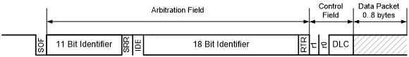
Arbitration
Arbitration is the process used to ensure that only one message is being transmitted at one time. If two nodes are trying to transmit different messages at the same time, one of those two will pass through the bus unharmed, while the other node will realize it lost the arbitration and attempt to re-transmit right after the first message is completed. This allows nearly 100% utilization of the bandwidth, because the node(s) that lost the arbitration will immediately stop, thereby not corrupting the frame that is being transmitted by the winner of the arbitration. This guarantees forward progress. In contrast, old style Ethernet (and LocoNet, btw.) uses a more complex scheme, where a collision destroys the frame, then nodes have to back off, wait a random period, then attempt to transmit again, thus wasting bandwidth.
The arbitration phase relies on drivers only pulling the bus low. If two nodes attempt to put different bit values on the bus at the same time, the 0 will always win. Here is a chart that shows how this works:
| Node 1 | Node 2 | Bus Value |
|---|---|---|
| 0 | 0 | 0 |
| 0 | 1 | 0 |
| 1 | 0 | 0 |
| 1 | 1 | 1 |
Dominant and recessive are the normal terms used because a ‘1’ bit (recessive) does NOT drive the bus. It allows the terminators to ‘drive’ the bus by pulling the two bus lines to a common voltage. (2.5V) On the other hand a ‘0’ bit (dominant) drives the bus to both high and low. (CANH goes to 5V and CANL goes to 0V) The bus drivers can always over power the terminators, and that is how the zero bit always dominates over the one bit. It also explains why at least some termination is required. The termination values are also chosen to suppress cable reflections, but that is actually only an issue on long lines. Also note that this explains the complexity of our RR-CirKits terminators. You can attach a logic analyzer to one of our terminators because it creates a logic level image of the bus (to drive the activity LED). You cannot connect a logic analyzer directly to the CAN bus, because it does not contain a logic level signal on either line.
Normally two nodes will happily send identical data until one node or the other transmits a zero bit during the other node’s one bit. At that point the recessive node notices that it transmitted a one bit,but received a zero bit back from the bus. This tells the recessive node that it is in conflict and must immediately stop transmitting. No other nodes can observe that this happened. This requirement for an immediate (within a fraction of the bit time) response is what limits the CAN bus segment lengths.
– Dick Bronson, RR Cirkits
Arbitration uses the 29-bit header value as a priority value to gain access to the bus, where lower values have higher priority. This mechanism provides very high utilization of the bus’ bandwidth because one node will always win a collision and keep transmitting. In contrast, Ethernet uses a more complex scheme where nodes have to back off, wait a random period, then attempt to transmit again, thus wasting bandwidth.
For arbitration to work sucessfully, each message sent by a node needs to use a unique 29-bit ID. The details for this are handled by the OpenLCB specifications, and are different for different types of messages.
Node Startup Sequence
When an OpenLCB node powers up or resets, it goes through a defined startup sequence to join the network. Understanding this sequence is essential to building your own nodes.
Note for Library Users: If you’re using OpenMRNLite or other OpenLCB libraries, all of the mechanics described in this chapter are handled automatically for you. You don’t need to implement alias reservation, collision detection, or recovery—the library does it all in the background.
This chapter exists to help you understand how it works, which is valuable knowledge when debugging network issues or designing advanced features. However, if you just want to build a working node with async_blink_esp32, you can skip straight to Chapter 3 without missing anything essential. The library takes care of it.
What Happens During Startup
Every node follows this sequence:
-
Check ID (CID): The node sends four CID frames containing its 6-byte unique Node ID, spread across the frames. This allows the node to check if anyone else is using its desired alias.
-
Reserve ID (RID): If no other node objects, the node sends an RID frame to reserve its chosen 12-bit alias for the Node ID.
-
Alias Map Definition (AMD): The node announces the mapping between its full 6-byte Node ID and the 12-bit alias it just reserved.
-
Initialized (Init Complete): The node sends an “Initialized” message telling the network it’s now fully online and reachable.
sequenceDiagram
participant Node as New Node
participant Bus as OpenLCB Network
participant Others as Other Nodes
Note over Node: Power On / Reset
Node->>Bus: CID Frame 1 (Node ID bytes 0-1)
Node->>Bus: CID Frame 2 (Node ID bytes 2-3)
Node->>Bus: CID Frame 3 (Node ID bytes 4-5)
Node->>Bus: CID Frame 4 (checks alias)
Note over Node,Others: Wait for conflicts (200ms)
Node->>Bus: RID (Reserve alias)
Node->>Bus: AMD (Map Node ID to alias)
Node->>Bus: Initialized Complete
Note over Node: Now reachable on network
Node->>Bus: Producer Identified (events)
Node->>Bus: Consumer Identified (events)
Why Use Aliases?
OpenLCB uses 6-byte Node IDs to ensure every device in the world has a unique identifier. However, CAN bus headers only have 29 bits available. To fit the sender information plus message type, OpenLCB uses temporary 12-bit aliases that represent the full Node ID during a session.
This alias negotiation happens every time a node starts up. The aliases are not permanent—they’re regenerated each time the node powers on.
Node Participation
Other nodes on the network listen during this startup sequence. If another node is already using the alias the new node wants, it will send a conflict message, forcing the new node to pick a different alias. This ensures all active nodes have unique aliases.
Multi-Node Network Behavior
The startup sequence isn’t just about a single node announcing itself—it’s a conversation with the entire network:
Other nodes participate by:
- Listening to all CID frames to check for alias conflicts
- Responding with conflict messages if their alias is being claimed
- Recording the Node ID to alias mapping from AMD frames
- Acknowledging new nodes with responses to queries
This cooperative behavior ensures:
- No two nodes ever use the same alias simultaneously
- Nodes can discover each other’s capabilities
- Gateways and bridges can manage routing efficiently
- Network monitoring tools (like JMRI) can track all active nodes
When your node starts up, it’s not alone—the entire network is watching and ready to help it join successfully.
What Happens When Things Go Wrong
The startup sequence above describes the happy path—when everything works perfectly on the first try. In practice, nodes must be prepared to handle conflicts and retries.
Alias Collision Detection
If another node on the network is already using the alias your node wants to reserve, that other node will respond to your CID frames with a Reserve ID (RID) frame. This signals a collision:
-
During CID phase: If you receive an RID while sending your CID frames, your chosen alias is already in use. Your node must:
- Abandon the current alias
- Generate a new tentative alias
- Start the entire CID → wait → RID sequence over from the beginning
-
During the 200ms wait: If another node transmits any non-CID frame using your tentative alias, you know there’s a collision and must restart.
Here’s what the collision and recovery process looks like:
sequenceDiagram
participant Node as New Node
participant Bus as OpenLCB Network
participant Other as Node Already Online
Note over Node: Generate Alias ABC
Node->>Bus: CID Frame 1 (with alias ABC)
Other->>Bus: RID (Collision!)
Node->>Node: Detect Collision
Note over Node: Collision detected!<br/>Generate New Alias DEF
Node->>Bus: CID Frame 1 (with alias DEF)
Node->>Bus: CID Frame 2 (with alias DEF)
Node->>Bus: CID Frame 3 (with alias DEF)
Node->>Bus: CID Frame 4 (with alias DEF)
Note over Node,Other: Wait for conflicts (200ms)
Note over Other: No conflict, silent
Node->>Bus: RID (Reserve alias DEF)
Node->>Bus: AMD (Map Node ID to alias DEF)
Node->>Bus: Initialized Complete
Note over Node: Now reachable with alias DEF
Your node’s alias generation algorithm (described in section 6.3 of S-9.7.2.1) ensures that each collision produces a different alias candidate, so nodes won’t get stuck in a loop trying the same alias repeatedly.
AMD and Alias Validation
Once you’ve successfully reserved an alias and sent your AMD (Alias Map Definition) frame, the alias mapping is established. However, your node must remain vigilant:
-
Alias Mapping Enquiry (AME): Other nodes can query your alias at any time using an AME frame. Your node is expected to respond with another AMD frame confirming the mapping.
-
Duplicate Node ID Detection: If your node receives an AMD frame from another node claiming to have the same 6-byte Node ID as you, this indicates a serious problem—two nodes with identical IDs exist on the network. Your node should:
- Signal this condition to the user (LED blink pattern, log message, etc.)
- Optionally transition back to the Inhibited state
- Restart the alias reservation process with error handling
Collision Recovery in Your Code
When implementing your node:
- Always expect CID collisions - Your initial alias choice might conflict; be prepared to generate alternatives
- Implement retry logic - After detecting a collision during the CID phase, generate a new alias and restart
- Validate on receipt - When receiving AMD frames from other nodes, check for duplicate Node IDs
- Handle AME queries - Always respond to AME frames with AMD frames to maintain alias mappings
Most of this is handled transparently by OpenMRNLite, but understanding these scenarios helps when debugging network startup issues.
Note: For implementation details on alias collision handling and retry algorithms, see the async_blink_esp32 example code in Chapter 3, which demonstrates how OpenMRNLite handles these scenarios automatically.
References
For detailed protocol specifications, see:
CAN Frame Transfer (Node Startup Sequence)
- S-9.7.2.1 CAN Frame Transfer Standard - Normative specification for CID, RID, AMD frames and the 200ms wait requirement (section 6.2.1)
- TN-9.7.2.1 CAN Frame Transfer Technical Note - Background and examples
Message Network (Initialization Complete)
- S-9.7.3 Message Network Standard - Normative specification for Initialization Complete message (section 3.3.1) and message network protocol
Note: Future chapters will dive deeper into how the alias generation algorithm works and how to handle collisions in your code.
Events and Run Mode
After a node completes its startup sequence, it enters “run mode” where it actively participates in the network by producing and consuming events.
What is Run Mode?
Once a node is initialized and online, it:
- Produces events in response to physical inputs or internal state changes
- Consumes events from other nodes to control outputs or change behavior
- Responds to queries from other nodes about its capabilities and status
- Maintains its network presence by keeping its alias active
This is the normal operating state where your node does useful work on the layout.
Event Flow Example
Here’s a simple example of how events flow between nodes in run mode:
sequenceDiagram
participant Button as Button Node
participant Network as OpenLCB Network
participant LED as LED Node
Note over Button: User presses button
Button->>Network: Produce Event<br/>05.02.01.02.02.00.00.01
Network->>LED: Event received
Note over LED: LED turns ON
Note over Button: User releases button
Button->>Network: Produce Event<br/>05.02.01.02.02.00.00.00
Network->>LED: Event received
Note over LED: LED turns OFF
In this example:
- The button node monitors a physical button
- When pressed, it produces an event with ID
05.02.01.02.02.00.00.01 - The LED node is configured to consume this event
- When it sees this event on the network, it turns on its LED
- A different event ID (
...00.00.00) controls the LED turning off
Producer/Consumer Model
OpenLCB uses a producer/consumer event model:
- Producers send events when something happens (button press, sensor trigger, timer expiration)
- Consumers listen for specific events and react to them (turn on LED, throw turnout, sound horn)
- A single node can be both a producer and consumer of different (or even the same) events
This decoupling is powerful: producers don’t need to know who’s listening, and consumers don’t need to know where events come from. You can reconfigure your layout by just changing which nodes consume which events.
Event Identification Messages
Part of the startup process includes announcing what events a node produces and consumes. The async_blink example sends these messages after completing initialization:
Producer Identified Valid: Event 05.02.01.02.02.00.00.01
Producer Identified Valid: Event 05.02.01.02.02.00.00.00
Consumer Identified Valid: Event 05.02.01.02.02.00.00.01
Consumer Identified Valid: Event 05.02.01.02.02.00.00.00
This tells the network: “I can produce these two events, and I can also consume the same two events.”
The “Valid” state means the node is actively configured to use these events. “Invalid” would mean the event is known but not currently in use.
Async Blink Events
Let’s look at what the async_blink example does in run mode. It’s intentionally simple to demonstrate the concepts:
Every second, it alternates:
- Produce event
05.02.01.02.02.00.00.01(the “1” event) - Because it also consumes this event, its own LED turns ON
- Produce event
05.02.01.02.02.00.00.00(the “0” event) - Because it consumes this event too, its own LED turns OFF
This creates a blinking LED controlled entirely through OpenLCB events, demonstrating the producer/consumer model in a single node.
In a real layout, you’d typically have separate nodes for inputs (buttons, sensors) and outputs (LEDs, turnouts), but the event flow works exactly the same way.
For detailed event protocol specifications, see:
Note: Future chapters will show you how to create your own nodes with real button inputs and LED outputs on an ESP32 microcontroller.
Getting Started
In the previous chapter, you learned about OpenLCB concepts: nodes, transport layers, startup sequences, and the producer/consumer event model. Now it’s time to plan your first OpenLCB node.
This chapter walks you through the key decisions we’ll make for building your node and explains the why behind each choice so you understand the trade-offs and can adapt to your own needs. (Actual implementation begins in the next chapter.)
What We’re Building
The goal of this book is to help you create an OpenLCB node—a device that can produce and consume events on an LCC network. Your node will:
- Sense inputs (buttons, switches, sensors) and produce OpenLCB events
- Control outputs (LEDs, relays, motors) by consuming OpenLCB events
- Connect to a network so other nodes can respond to your events
- Be monitored and configured via standard tools like JMRI
We’ll start with a simple example and scale to more complex scenarios in later chapters. The key concept is the pattern: once you understand how to produce and consume a single event, scaling to many inputs/outputs and adding complex logic becomes straightforward.
Progression: TCP, Then CAN, Then Full OpenMRN
We use three key technologies across this book, introduced progressively:
Phase 1: TCP/WiFi (Quick Start)
- Use WiFi/TCP transport with Arduino framework and OpenMRN-Lite library to get your first node running in minutes
- Focus on OpenLCB fundamentals (events, producers, consumers, CDI) without hardware barriers
- No CAN transceiver required—just an ESP32 and JMRI for monitoring
- Once you understand the protocol, adding CAN is straightforward
Phase 2: CAN Transport (Main Focus)
- Add a CAN transceiver (~$5) and switch from WiFi/TCP to CAN transport
- Same Arduino framework and OpenMRN-Lite library as phase 1
- Explore inputs and outputs with the real transport layer used in most LCC installations
- Build multi-node systems that communicate over CAN
- Stay here if your needs fit this model (most hobby layouts do)
Phase 3: Full OpenMRN + FreeRTOS (Advanced)
- Only if you need multi-threading, virtual nodes, or traction protocol
- Migrate from Arduino to ESP-IDF (Espressif’s full RTOS environment)
- Use full OpenMRN library with FreeRTOS threading
- Handle complex, multi-threaded scenarios (bridges, command stations, etc.)
Each phase builds on the previous one. The OpenLCB knowledge transfers directly—what changes is the platform and threading model.
Key Decisions
Building an OpenLCB node requires several key decisions, explained in the later sections of this chapter:
- Which programming framework? — Arduino for phases 1–2, FreeRTOS only if phase 3 is needed
- Which OpenLCB library? — OpenMRN-Lite (Arduino) for phases 1–2, full OpenMRN only for phase 3
- Which platform? — ESP32 (recommended), STM32, or other microcontroller
- Which IDE and build tools? — PlatformIO (recommended), Arduino IDE, or native ESP-IDF
- Which transport? — TCP/WiFi for phase 1 (quick learning), CAN for phase 2 (main focus), both for phase 3
- How do I monitor and verify? — JMRI monitoring tool, TCP hub architecture, CAN bus analysis
By the end of this chapter, you’ll understand the reasons behind each choice and why this progression makes sense for learning and building real LCC systems.
Detailed Topic Coverage
- Arduino for Early Chapters (Migration Path) — Why Arduino; how to migrate to FreeRTOS later
- OpenMRN-Lite Architecture & Capabilities — Why OpenMRN-Lite for Arduino; capabilities and limitations
- Platform: ESP32 & SPIFFS — Why ESP32; the importance of persistent storage
- Development Environments & Tooling — IDE comparison (Arduino IDE, Maker Workshop, PlatformIO); personal recommendation with GitHub Copilot
- Transports: WiFi & CAN — Why WiFi first; when to add CAN
- Monitoring & Verification — JMRI, TCP hub, GridConnect protocol
Prerequisites
Before reading further, make sure you have:
Knowledge:
- Basic embedded programming (C/C++)
- Microcontroller I/O concepts (GPIO, digital read/write)
- Familiarity with breadboards and simple circuits
- Producer/consumer model understanding (from using LCC products)
Hardware (needed for Chapter 4):
- ESP32 development board (ESP32 DevKit v1 or similar)
- USB cable for programming
- Computer with WiFi
- Optional: breadboard, jumper wires, push button, LED, resistor (for hardware integration in Chapter 5)
Software (installation covered in Chapter 4):
- VS Code or similar editor
- PlatformIO extension (or Arduino IDE / Maker Workshop)
- JMRI (for monitoring OpenLCB traffic)
If you’re missing any hardware, most items can be purchased as a kit from electronics suppliers (Adafruit, SparkFun, Amazon, AliExpress) for under $20 USD total.
What’s Next
You now have the big picture: a generic goal (inputs → events → outputs) plus the concrete stack for early chapters. Later sections in this chapter dive into each decision.
Start with Arduino for Early Chapters (Migration Path). Each section builds on the previous one, culminating in a clear understanding of our toolchain and ready-to-implement design.
By the end of this chapter, you’ll be prepared to move forward with the example implementation.
Arduino for Phases 1–2 (Migration Path for Phase 3)
The first decision in building an OpenLCB node is: which platform and framework? For phases 1–2, we use Arduino because it’s the most accessible starting point for learning and offers excellent real-world functionality. Phase 3 introduces the migration path to full FreeRTOS-based solutions only if you need advanced features.
Why Arduino First?
Arduino provides a dramatically lower learning curve and barrier to entry compared to FreeRTOS or ESP-IDF:
- Minimal setup time: You can have working code running in minutes without complex build systems or operating system knowledge
- Large ecosystem: Thousands of tutorials, libraries, and community examples
- Rapid iteration: Fast compile/upload cycle (with PlatformIO)
- Breadboard-friendly: Ideal for learning with hobby microcontrollers
- No RTOS complexity: Single-threaded execution; no threading, mutexes, or scheduler concepts needed
When learning OpenLCB, you want to focus on understanding the protocol and building real I/O functionality—not spending weeks learning RTOS concepts and debugging multi-threaded interactions. Arduino (with OpenMRN-Lite) lets you get working nodes immediately.
Arduino + OpenMRN-Lite: Phases 1–2
For phases 1–2 (TCP quick-start and CAN-based I/O), you use OpenMRN-Lite, the Arduino version of OpenMRN.
OpenMRN-Lite is production-quality and fully functional. It supports:
- CDI configuration - Configure nodes without recompiling
- CAN bus - Full CAN transport with proper arbitration
- Event producers/consumers - The core OpenLCB pattern
- Persistent storage - SPIFFS/SD card for configuration
- Real-time monitoring - JMRI integration via TCP or CAN
This is not a compromise. Most hobby and DIY LCC installations use OpenMRN-Lite for years. You’re not learning a dead-end; you’re choosing the right tool for real-world I/O projects.
Do You Need Phase 3?
Most projects stay in phases 1–2. Phase 3 (FreeRTOS + Full OpenMRN) is only for advanced scenarios:
- Command stations and bridges — Complex routing between multiple transports
- Virtual nodes — Multiple logical nodes on one device
- Traction protocol — Locomotive decoder features
- Multi-threaded hubs — Complex systems requiring background threads and advanced concurrency
If you’re building sensors, I/O controllers, or simple nodes for a layout, phases 1–2 have everything you need. Most hobby and model railroad installations never require phase 3.
If You Need Phase 3 Later
If you eventually need phase 3 features, the foundation you built in phases 1–2 makes the path forward straightforward:
- Your OpenLCB protocol knowledge transfers directly — message formats, event semantics, CDI structures all stay the same
- You’ll switch from Arduino to ESP-IDF (Espressif’s full RTOS environment) and use full OpenMRN library instead of OpenMRN-Lite
- You’ll add FreeRTOS-aware code (threading, message queues, etc.)
- The core OpenLCB concepts you’ve mastered (producers/consumers, startup sequence, events) remain unchanged—you’re adding threading sophistication on top of a solid foundation
For Phases 1–2
We’ll use Arduino + OpenMRN-Lite. This combination gives you:
- A working TCP node in minutes (phase 1)
- A fully-featured CAN node for real layouts (phase 2)
- Time to focus on OpenLCB concepts instead of RTOS complexity
- A solid foundation for phase 3 if you ever need it
Let’s get started with simplicity, solid fundamentals, and the knowledge that you can expand whenever you need to.
OpenMRN-Lite Architecture & Capabilities
You’ve learned the concepts behind OpenLCB. Now, before we write code, let’s understand the software library we’ll be using: OpenMRN-Lite. This chapter clarifies what it is, why it’s the right choice for ESP32, and what it can (and can’t) do.
What is OpenMRN-Lite?
OpenMRN-Lite is the Arduino version of OpenMRN.
This might sound like it’s a cut-down or simplified version, but that would be misleading. Instead, think of it as a version optimized for single-threaded, resource-constrained environments like Arduino and ESP32.
There are two ways to run OpenMRN code:
| Version | Threading Model | Best For | Platform |
|---|---|---|---|
| Full OpenMRN | Multi-threaded (FreeRTOS) | Complex systems, command stations, bridges | Linux, macOS, Windows, native ESP-IDF |
| OpenMRN-Lite | Single-threaded executor | Learning, sensors, simple controllers | Arduino IDE, PlatformIO (Arduino framework) on ESP32, STM32 |
The key insight: Arduino cannot run the multi-threaded version of OpenMRN. The Arduino runtime environment doesn’t provide the POSIX threading APIs that full OpenMRN requires. Therefore, OpenMRN-Lite is not a “lite” compromise—it’s the only OpenMRN version available for Arduino.
Why OpenMRN-Lite is the Right Choice for Learning OpenLCB
When building an OpenLCB node on ESP32 using Arduino, OpenMRN-Lite is the right tool for this learning path because of its simplicity and low barrier to entry.
The Alternative: You could use the full OpenMRN library with native ESP-IDF (Espressif’s real-time operating system for ESP32). This gives you access to advanced features and the full power of FreeRTOS threading. But it also requires:
- Understanding real-time operating systems, threading, and synchronization primitives
- Managing POSIX APIs and FreeRTOS queues before you even write a single OpenLCB message
- Debugging complex multi-threaded interactions
- A completely different development environment and build system
For learning OpenLCB concepts, that’s like learning to drive by starting with a race car instead of a regular car.
Why OpenMRN-Lite Instead:
- Familiar environment - Arduino’s
setup()/loop()model is straightforward and widely understood - Focus on OpenLCB - You can understand nodes, events, and producers/consumers without threading complexity
- Fast results - You’ll have working code sending real OpenLCB messages within hours
- Proven examples - The IOBoard example demonstrates CDI configuration, events, and hardware I/O patterns you can build on
- Natural progression - Once you master OpenLCB concepts, you can migrate to ESP-IDF + full OpenMRN if needed
This isn’t a permanent limitation—it’s a strategic choice that lets you learn faster and more effectively. Once you understand OpenLCB deeply, you’ll be better equipped to understand why those advanced features (virtual nodes, traction protocol, multi-threading) exist and when you might need them.
What OpenMRN-Lite DOES Support
OpenMRN-Lite has everything you need to build real, functional OpenLCB nodes:
Core Features ✅
- CDI (Configuration Description Information) - Define configuration options that JMRI can edit without recompilation
- SNIP (Simple Node Information Protocol) - Share node name and description with the network
- Event Producers & Consumers - The core OpenLCB pattern you learned in Chapter 1
- Datagrams - Reliable message delivery for configuration and data exchange
- ACDI (Abbreviated CDI) - Simpler configuration interface for basic nodes
- CAN Transport (optional) - Add a CAN transceiver to use CAN bus instead of WiFi
- TCP Hub (optional) - Connect to JMRI over WiFi using GridConnect protocol
- Factory Reset Patterns - Reset to known states without recompilation
- Persistent Configuration - Store settings in SPIFFS or SD card
The IOBoard example (the most complete OpenMRN-Lite example) demonstrates all of these features in action: CDI-based configuration, event handling, hardware I/O, and network integration. It’s exactly the pattern you’ll use when building your own nodes.
What OpenMRN-Lite Does NOT Support
There are some advanced features that require full OpenMRN with FreeRTOS threading:
What You Don’t Get ❌
- Virtual Nodes - Hosting multiple logical nodes on one microcontroller
- Traction Protocol - Command station features (throttle control, trains)
- Multi-Transport Bridging - Routing messages between CAN and TCP automatically
- Multi-Threaded I/O - Background threads for independent subsystems
- Hub Services - Virtual topology management and advanced networking
- Extensive Memory Configurations - Very large configuration systems
These features aren’t missing from OpenMRN-Lite because the developers cut corners. They’re missing because they require the threading and memory management capabilities that FreeRTOS provides, which the Arduino framework doesn’t offer.
This is not a limitation for learning OpenLCB. In fact, OpenMRN-Lite’s simplicity makes it easier to understand how OpenLCB works without being buried in threading complexity.
When to Use OpenMRN-Lite vs Full OpenMRN
Use this decision matrix to understand which tool is right for your project:
| Your Need | Use | Why |
|---|---|---|
| Learning LCC on ESP32 | OpenMRN-Lite | Single-threaded, Arduino-native, proven examples |
| Building a sensor node (button, LED, turnout) | OpenMRN-Lite | Minimal code, small footprint, stable |
| Fixed-function controller (no changes after deployment) | OpenMRN-Lite | No runtime configuration needed; extremely reliable |
| Hosting multiple nodes on one ESP32 | ❌ Not possible with Arduino | Requires FreeRTOS; switch to native ESP-IDF + full OpenMRN |
| Building a command station | ❌ Not possible with Arduino | Requires traction protocol + FreeRTOS; use Linux or dedicated hardware |
| Bridging CAN and TCP automatically | ❌ Not possible with Arduino | Requires multi-threading; use Linux |
The key takeaway: If you’re using Arduino/PlatformIO on ESP32, OpenMRN-Lite is the only OpenMRN version available. There is no “upgrade path” to full OpenMRN while staying in the Arduino ecosystem. If you need full OpenMRN features, you switch toolchains entirely (to native ESP-IDF + FreeRTOS), which requires rewriting in a different style.
Configuration & Learning Implications
One important capability worth highlighting: OpenMRN-Lite fully supports CDI, the configuration system. This means you can:
- Define configuration options in your code (node name, GPIO pins, event IDs, etc.)
- Connect to JMRI and see those options in a graphical interface
- Change configuration without recompiling or uploading new firmware
- Persist changes to the ESP32’s filesystem (SPIFFS)
This is powerful for learning because:
- You can experiment with event IDs without recompiling
- You understand how real OpenLCB nodes work (configuration happens at runtime)
- JMRI becomes a tool for monitoring and controlling your node
In this book’s v0.1, we’ll start with hardcoded configuration for simplicity. In later chapters (Chapter 5), we’ll enhance the example to use CDI configuration, showing you the pattern for building production nodes.
Looking Ahead
In Chapter 3, you’ll see how OpenMRN-Lite integrates into a real ESP32 project using Arduino and PlatformIO. The library handles all the protocol details—your job is just to define events, read inputs, and write outputs.
And if you ever do need features that OpenMRN-Lite doesn’t support, that’s okay. You’ll understand the OpenLCB concepts deeply enough to appreciate why those features exist and how they work in more complex systems. The goal of this book is to build that foundation.
Platform: ESP32 & SPIFFS
Now that we’ve committed to Arduino and OpenMRN-Lite, the next decision is: which microcontroller platform? We’ve chosen ESP32 for this book. Here’s why.
Why ESP32?
The ESP32 platform is one of the best-supported microcontrollers for OpenMRN-Lite:
Essential Features:
- Excellent Arduino support - Arduino framework is mature and stable on ESP32
- WiFi built-in - Perfect match for our WiFi/TCP transport choice (no separate shield needed)
- CAN capable - Built-in CAN controller for adding CAN hardware in future chapters
- Persistent storage (SPIFFS) - Critical for OpenMRN configuration management (more on this below)
Practical Advantages:
- Affordable - Development boards are $5–15 USD
- Powerful - Dual-core processor, plenty of memory for OpenMRNLite applications
- GPIO-rich - Enough pins for inputs, outputs, and future expansion
SPIFFS: Why It Matters
OpenMRN-Lite requires a persistent filesystem to store configuration data. When your node starts, it reads a configuration file that contains:
- Node identity (SNIP data: device name and description)
- Configuration schema definition (CDI)
- User settings (to be added in later chapters)
SPIFFS (SPI Flash File System) is ESP32’s built-in filesystem. It allows OpenMRN to:
- Store a configuration file on the device’s flash memory
- Read and update configuration without needing a separate EEPROM chip
- Persist settings across power cycles
This means:
- No external hardware required (everything is on-chip)
- You can change node name and description via JMRI without recompiling firmware
- Future configuration parameters (WiFi settings, event mappings, etc.) can be edited live
Other platforms (Arduino Mega, STM32 Nucleo boards) either lack SPIFFS or require external EEPROM components, adding complexity. ESP32 has it built-in.
Other Platforms with OpenMRN-Lite Support
OpenMRN-Lite works on other Arduino-compatible boards:
- STM32 family (Nucleo boards) via Arduino core - good option but requires external EEPROM for storage
- Arduino Mega - more memory than Uno, but no WiFi; requires WiFi shield
- Other ESP32 variants (ESP32-S3, ESP32-C3) - similar capabilities, also good choices
If you have a different board available, you can likely adapt the examples. Chapter 3 has more details on platform trade-offs. For now, ESP32 DevKit v1 is the best starting point: affordable, well-documented, and fully supported by the OpenMRN-Lite community.
Next: Choosing Your Development Environment
With platform and toolchain locked in (Arduino + OpenMRN-Lite + ESP32), the next step is choosing an IDE and build system. That’s covered in the next section.
Development Environments & Tooling
Now that you’ve decided on Arduino + OpenMRN-Lite + ESP32, you need tools to write, build, and upload code. There are three main options for Arduino development. This section compares them so you can choose what works best for you.
Three Options for Arduino Development
1. Arduino IDE
What it is: The official Arduino development environment. A simple editor with integrated build and upload tools.
Pros:
- Official and most well-documented
- Simplest setup for beginners
- Latest Arduino library support (sometimes ahead of other tools)
Cons:
- Limited editing features compared to professional IDEs
- No advanced debugging tools
- Library management can be tedious for complex projects
- Slower builds for large projects
- Limited integration with external tools (like GitHub Copilot)
2. VS Code Options — Recommended
Visual Studio Code is a powerful, modern code editor that supports Arduino development through extensions. Unlike the Arduino IDE, VS Code gives you professional editing features, integrations, and an extensive ecosystem of tools—all in one environment. This significantly improves your development experience.
Benefits of VS Code for Arduino Development:
- Professional editor experience - syntax highlighting, code formatting, IntelliSense, and multi-file navigation
- GitHub Copilot integration - AI-assisted code completion, documentation generation, and debugging suggestions
- Extensible ecosystem - seamless access to Git, terminal, testing tools, debugging, and thousands of extensions
- Faster development workflow - superior editing and navigation compared to Arduino IDE
There are two main extensions available for Arduino development in VS Code:
2A. Arduino Maker Workshop (VS Code Extension)
What it is: An extension that brings the Arduino CLI directly into VS Code, giving you the same capabilities as the official Arduino IDE.
Pros:
- Full Arduino CLI capability - identical board and library support as the official Arduino IDE; no loss of functionality
- Good library management - same library ecosystem as Arduino IDE
Cons:
- Smaller community than PlatformIO
- May have minor library update lag compared to official Arduino IDE (rarely an issue in practice)
2B. PlatformIO (VS Code Extension)
What it is: A professional-grade build system and IDE extension specifically designed for embedded development across multiple platforms.
Pros:
- Fastest builds - significantly faster than Arduino IDE or Maker Workshop
- Professional features - library version pinning, dependency resolution, build system profiling
- Strong community - large ecosystem of libraries and examples
- Non-Arduino platform support - extends beyond Arduino boards to ESP-IDF, FreeRTOS, STM32, and hundreds of other embedded platforms; supports phase 3 migration to full OpenMRN
Cons:
- Latest Arduino library versions sometimes lag by 1–2 releases (minor issue in practice)
- Slightly steeper learning curve than Arduino IDE
- More configuration options (which is a pro for power users)
Personal Recommendation: PlatformIO + VS Code + GitHub Copilot
I personally use PlatformIO in VS Code with GitHub Copilot (paid subscription) enabled. Here’s why:
- Professional environment - PlatformIO’s build system is industrial-strength; you’re learning with real tools you’d use in production.
- GitHub Copilot - The entry-level paid subscription (~$10/month) is exceptional value. Copilot goes way beyond auto-completion; I use it to write and edit actual code. This dramatically lowers the barrier to entry and makes you far more productive:
- Writing functions and complex logic from natural language descriptions
- Refactoring and improving existing code
- Generating unit tests and helper functions
- Explaining unfamiliar code and OpenMRN APIs
- Fast iteration - PlatformIO’s build speed means less waiting between code changes and testing.
- Future flexibility - If you later migrate to full OpenMRN, PlatformIO supports it seamlessly.
The Copilot subscription is worth the investment if you’re doing this seriously. It’s not a necessity—you can learn OpenLCB without it—but it significantly improves the learning experience and accessibility for hobbyists.
Choosing Your Own Path
Each option is valid:
- Lowest barrier to entry? → Arduino IDE
- VS Code + Arduino CLI? → Arduino Maker Workshop
- Professional, fastest, future-proof? → PlatformIO
This book includes detailed setup instructions for PlatformIO (Chapter 3). If you prefer a different option, the concepts apply equally; you’ll just follow that tool’s documentation for the build and upload steps.
Transports: WiFi/TCP and CAN
OpenLCB is designed to work over different physical transports. We use two main options across this book: WiFi/TCP (for rapid learning) and CAN (for real-world deployments).
Phase 1: WiFi/TCP Transport (Quick Start)
We begin with WiFi and TCP to get your first OpenLCB node running in minutes:
For Rapid Learning:
- No special hardware required - ESP32 boards have WiFi built-in; no CAN transceivers needed
- Easy monitoring - Standard network tools and JMRI can capture all traffic
- Faster iteration - Wireless upload and debugging without physical bus connections
- Focus on protocol - Understand events, producers, and consumers without hardware distractions
Key Insight: The OpenLCB message formats, node startup, and event handling work identically over WiFi/TCP and CAN. Everything you learn in phase 1 transfers directly to CAN-based implementations in phase 2. TCP is a deliberate stepping stone, not a dead-end.
Phase 2: CAN Bus Transport (Main Focus)
CAN (Controller Area Network) is the traditional transport for OpenLCB and is used in the vast majority of commercial LCC products. After mastering the protocol over TCP, you’ll add CAN hardware and use it as your primary transport.
Why CAN is the Real-World Standard:
- Excellent noise immunity - designed for harsh environments (layout with motors, lights, switching supplies)
- Built-in collision handling - arbitration is hardware-enforced, not software-managed
- Two-wire bus - simple termination (120Ω at both ends)
- Industry-proven - decades of use in automotive and industrial settings
- Multi-device scalability - hundreds of nodes can share the same two-wire bus
- Compatibility - interoperability with commercial LCC products and installations
What You’ll Add:
- A CAN transceiver board (~$5)
- Proper bus termination (two 120Ω resistors)
- A two-wire connection to other nodes
When Phase 2 Starts: Chapters on inputs and outputs focus on CAN. You’ll explore multi-node systems, real-world layouts, and the patterns used in most model railroad installations.
Phase 3: Multi-Transport Integration (Advanced)
Once you’ve mastered CAN-based I/O, you may eventually need to:
- Bridge TCP and CAN on the same device
- Implement virtual nodes
- Use the traction protocol for command stations
These advanced features require full OpenMRN with FreeRTOS threading, covered in later chapters.
The Progression
This is one of OpenLCB’s strengths: the protocol is transport-agnostic. You can:
- Start with WiFi/TCP on your workbench (phase 1—no special hardware)
- Learn OpenLCB fundamentals (events, producers, consumers, CDI)
- Add CAN hardware and switch to phase 2 (same code patterns; now using the real transport)
- Integrate both transports if needed (phase 3, only when necessary)
The key insight: learning with TCP doesn’t waste your time. It’s a deliberate stepping stone that lets you focus on protocol before worrying about hardware. When you move to CAN, the only change is the physical connection and a few hardware initialization lines—your OpenLCB knowledge applies perfectly.
Monitoring & Verification
Building an OpenLCB node is only half the battle. You also need visibility into what your node is doing. This section introduces the monitoring tools and how to verify your node is working correctly.
JMRI: The Essential Monitoring Tool
JMRI (Java Model Railroad Interface) is a free, open-source tool for model railroad control and monitoring. It’s essential for OpenLCB development:
Why JMRI?
- Message decoder - Translates raw hex into readable OpenLCB messages
- Network monitor - See all CID, RID, AMD, event messages in real-time
- Testing tool - Send events to your node and verify responses
- Layout integration - Connect your node to a larger LCC network
- Configuration editor - Edit node settings (via CDI) without recompiling firmware
For OpenLCB development, JMRI is invaluable for seeing what’s happening on the network.
TCP/GridConnect Protocol
When your ESP32 node runs a TCP server (on port 12021 by default), JMRI connects as a TCP client. The communication uses GridConnect ASCII format, which is human-readable:
:X18AD4000N;
:X19B84000N;
:X1CED4000N;
:X1080C000N;
Each line is an OpenLCB message. The format is:
:X- GridConnect header18AD4000- OpenLCB header and data (hex)N- Indicates normal message (not error);- Message terminator
What You’ll See: When your node starts up, JMRI shows:
- Four CID frames (checking alias availability)
- RID frame (reserving an alias)
- AMD frame (mapping Node ID to alias)
- Initialized message (node is online and ready)
- Producer/Consumer Identified messages (node capabilities)
- Event reports (button presses, LED changes, etc.)
This startup sequence takes a few milliseconds and happens automatically.
Running a Local TCP Hub
Your ESP32 node runs both a node (producing/consuming events) and a hub (routing messages) simultaneously. The hub is a simple TCP server:
- Listens on port 12021 by default
- Accepts connections from JMRI, other nodes, and monitoring tools
- Forwards all OpenLCB messages between participants
- Requires just a few lines of OpenMRN-Lite code to set up
This is a key design pattern: a single device can be both a node and a hub, which is perfect for development and small layouts.
Quick Verification Steps
When your node is running:
- Serial monitor - See startup messages and debug output
- JMRI connection - Connect JMRI to
localhost:12021(or your ESP32’s IP address) - Message trace - Watch the four startup frames (CID/RID/AMD/Init)
- Event test - Produce and consume a test event; watch it appear in JMRI
- Node properties - View your node’s name and description (from SNIP data)
Chapter 4 includes detailed screenshots and step-by-step JMRI configuration instructions.
What’s Next
With monitoring tools in place, you’re ready to:
- Install PlatformIO (Chapter 3)
- Build and deploy the async_blink example
- Verify it with JMRI
- Start understanding the code
Let’s get hands-on in the next chapter.
Your First WiFi-Based OpenLCB Node
This chapter covers everything needed to build and deploy your first OpenLCB node on an ESP32 microcontroller using Arduino and PlatformIO, connected via WiFi.
Overview
The ESP32 is a powerful, affordable microcontroller with built-in WiFi connectivity, making it ideal for learning OpenLCB concepts. This chapter walks through building a working OpenLCB node that simultaneously runs the node protocol stack and hosts a TCP Hub—allowing JMRI to monitor and control your WiFi-connected node over a network.
Unlike “real” OpenLCB networks (which typically use CAN hardware transport), this WiFi-based approach lets you get a functioning node running quickly without special hardware, and it’s perfect for embedded systems with network connectivity.
As described in the “Network Architecture” section of Chapter 2, your ESP32 will act as both:
- An OpenLCB node that produces and consumes events
- A TCP Hub listening on port 12021 for JMRI connections
We’ll be using the OpenMRN-Lite library, which is the Arduino version of OpenMRN. If you’re curious about why OpenMRN-Lite specifically, or what it can (and can’t) do, see Chapter 2.2 (“OpenMRN-Lite Architecture & Capabilities”) for a deeper dive. For now, know that it’s the right tool for the job and it has everything we need to build real, functional OpenLCB nodes.
Board Selection
ESP32 Board Selection
Before installing software, you’ll want to order an ESP32 development board. This section helps you choose the right board for this tutorial.
The ESP32 family includes many board variants. For this tutorial, we recommend boards with sufficient GPIO pins, USB programming support, and built-in CAN capability for future chapters.
Recommended Board: ESP32 DevKit V1
ESP32 DevKit V1 / ESP32-WROOM-32 (Xtensa architecture)
- Most common and affordable ESP32 development board
- 30+ GPIO pins available (plenty for expansion)
- Built-in USB-to-serial converter (CP2102 or CH340)
- 4MB flash memory (sufficient for OpenMRNLite applications)
- Built-in CAN controller (TWAI) for future CAN chapters
- Best OpenMRNLite compatibility - fully tested and supported
- Available from multiple manufacturers (Espressif, DOIT, etc.)
- Cost: $5-10 USD
This is the board we’ll use throughout the tutorial.
Alternative Boards
ESP32-DevKitC
- Official Espressif development board
- Similar pinout to DevKit V1
- Excellent documentation and support
- Slightly more expensive but guaranteed quality
ESP32-S3 (Xtensa architecture)
- Newer variant with USB-OTG support
- More memory and GPIO options
- Built-in CAN controller
- Good OpenMRNLite support
Boards to Avoid (for now)
ESP32-C3 (RISC-V architecture)
- Different CPU architecture (RISC-V vs Xtensa)
- OpenMRNLite has compatibility issues with ESP32-C3
- Missing required ESP-IDF headers in Arduino framework
- Wait for future OpenMRNLite updates before using
What You Need Now
To get started with the software-only version:
- Just the ESP32 board with USB cable
For the hardware integration phase (optional, later):
- Solderless breadboard
- Tactile pushbutton
- LED (any color)
- 220Ω resistor
- Jumper wires
Purchasing
ESP32 boards are available from:
- Amazon / eBay: Search “ESP32 DevKit” (verify reviews)
- AliExpress / Banggood: Direct from manufacturers (longer shipping)
- Adafruit / SparkFun: Higher quality, better support, higher cost
- DigiKey / Mouser: For bulk or commercial projects
Order your board now, then continue with the software setup while you wait for delivery.
Development Setup
PlatformIO Installation & Setup
PlatformIO is a professional embedded development platform that provides a unified build system, library management, and debugging tools. It integrates with VS Code to create a powerful development environment.
Installing VS Code
If you don’t already have Visual Studio Code installed:
- Download VS Code from code.visualstudio.com
- Run the installer for your operating system (Windows, macOS, or Linux)
- Follow the installation wizard with default options
- Launch VS Code after installation completes
Installing PlatformIO Extension
- Open VS Code
- Click the Extensions icon in the left sidebar (or press
Ctrl+Shift+X/Cmd+Shift+X) - Search for “PlatformIO IDE”
- Click Install on the “PlatformIO IDE” extension by PlatformIO
- Wait for the installation to complete (this may take several minutes as it downloads toolchains)
- Restart VS Code when prompted
After restarting, you should see a new PlatformIO icon (alien head) in the left sidebar.
Note: The ESP32 platform and toolchain will be installed automatically when you create your first project. PlatformIO handles all the toolchain downloads and configuration for you.
Project Structure
Creating Your First Project: async_blink_esp32
Now we’ll create the actual project we’ll be working with throughout this chapter. Instead of creating a throwaway test project, we’ll jump straight into building our OpenLCB node.
Create the Project
- Click the PlatformIO icon in the left sidebar
- Select New Project from Quick Access
- Enter project name: async_blink_esp32
- For Board, search and select DOIT ESP32 DEVKIT V1 (or
esp32doit-devkit-v1) - Framework should automatically select Arduino
- Click Finish
PlatformIO will:
- Create the project structure
- Download the ESP32 platform and toolchain (first time only, may take several minutes)
- Set up the Arduino framework
- Create a basic
src/main.cppfile
Understanding the Project Structure
After creation, you’ll see this structure:
async_blink_esp32/
├── platformio.ini # Project configuration
├── src/
│ └── main.cpp # Your application code (we'll replace this)
├── lib/ # Project-specific libraries
├── include/ # Header files
└── test/ # Unit tests (optional)
The platformio.ini file should look like this:
[env:esp32doit-devkit-v1]
platform = espressif32@6.12.0
board = esp32doit-devkit-v1
framework = arduino
monitor_speed = 115200
Adding OpenMRNLite to Your Project
OpenMRNLite is the lightweight version of OpenMRN designed for Arduino-compatible platforms. It provides all the core LCC/OpenLCB functionality without the full complexity of the OpenMRN framework.
Installation via platformio.ini
Open the platformio.ini file in your async_blink_esp32 project and add OpenMRNLite to the library dependencies:
[env:esp32doit-devkit-v1]
platform = espressif32@6.12.0
board = esp32doit-devkit-v1
framework = arduino
lib_deps = openmrn/OpenMRNLite@2.0.0
monitor_speed = 115200
Save the file. That’s it! PlatformIO will automatically download OpenMRNLite from the registry when you build the project.
About OpenMRNLite version 2.0.0: We’re using v2.0.0 rather than newer versions because:
- Version 2.0.0 is fully compatible with PlatformIO’s current ESP32 platform
- Later versions (2.2.x+) require newer ESP-IDF features not yet available in PlatformIO
- All core OpenLCB functionality is present in v2.0.0
About monitor_speed: This setting ensures the serial monitor uses 115200 baud, matching the Serial.begin(115200) call in our code. Without this, you’ll see garbled output instead of readable text.
About platform versions and Arduino-ESP32
Arduino-ESP32 has two major versions: 2.x and 3.x. The Arduino IDE now supports 3.x, but PlatformIO still uses 2.x. The
platform = espressif32@6.12.0pins us to PlatformIO’s current 2.x series.Why not upgrade to Arduino-ESP32 3.x?
- Arduino-ESP32 3.x is still evolving with breaking changes to the build system, partition handling, WiFi stack, and more.
- PlatformIO prioritizes stability over bleeding-edge features. They thoroughly test each framework version across hundreds of boards, toolchains, and debuggers before releasing.
- Smaller maintenance burden: By using a tested, stable version, we reduce variables when troubleshooting issues.
OpenMRNLite v2.0.0 is designed for the Arduino-ESP32 2.x that PlatformIO provides via espressif32@6.12.0. You’re trading bleeding-edge features for rock-solid reliability, which is perfect for learning OpenLCB fundamentals.
Note: The code in this chapter should also work with Arduino-ESP32 3.x using either the Arduino IDE or Arduino Maker Workshop, but we haven’t tested those configurations.
Verification
Let’s verify everything is working by building the project:
-
In VS Code, click the PlatformIO icon in the left sidebar
-
Under PROJECT TASKS → esp32doit-devkit-v1, click Build
-
PlatformIO will:
- Download OpenMRNLite (first time only)
- Compile the default
main.cpp - Display build output
-
Look for SUCCESS at the end of the output
Note: The first build will take longer as PlatformIO downloads the library and compiles it. Subsequent builds are much faster.
If the build succeeds, OpenMRNLite is installed correctly and you’re ready to write code!
Adding Config.h
Code Configuration
Now we’ll create the actual OpenLCB node that produces alternating events. This demonstrates the core OpenLCB protocol behavior you learned in Chapter 1 (node initialization and event production) without requiring physical hardware.
Creating the Configuration Header
OpenMRNLite requires a configuration structure (CDI - Configuration Description Information) even for simple nodes. We’ll create a minimal config.h file.
Create the file include/config.h with this content:
#ifndef _ASYNC_BLINK_CONFIG_H_
#define _ASYNC_BLINK_CONFIG_H_
#include "openlcb/ConfigRepresentation.hxx"
#include "openlcb/MemoryConfig.hxx"
namespace openlcb {
/// SNIP Static Data - Manufacturer information (read-only, compiled into firmware)
extern const SimpleNodeStaticValues SNIP_STATIC_DATA = {
4, // Version
"OpenMRN", // Manufacturer
"async_blink", // Model
"ESP32", // Hardware version
"1.00" // Software version
};
/// SNIP Dynamic Data - User-editable node name and description
/// These are stored in the config file and can be read/written via JMRI
static const char SNIP_NODE_NAME[] = "async_blink";
static const char SNIP_NODE_DESC[] = "ESP32 Blink demo";
/// Version number for the configuration structure
static constexpr uint16_t CANONICAL_VERSION = 0x0001;
/// Minimal configuration segment with just internal config
CDI_GROUP(AsyncBlinkSegment, Segment(MemoryConfigDefs::SPACE_CONFIG), Offset(128));
CDI_GROUP_ENTRY(internal_config, InternalConfigData);
CDI_GROUP_END();
/// The main CDI structure
CDI_GROUP(ConfigDef, MainCdi());
CDI_GROUP_ENTRY(ident, Identification);
CDI_GROUP_ENTRY(acdi, Acdi);
CDI_GROUP_ENTRY(userinfo, UserInfoSegment, Name("User Info"));
CDI_GROUP_ENTRY(seg, AsyncBlinkSegment, Name("Settings"));
CDI_GROUP_END();
} // namespace openlcb
#endif // _ASYNC_BLINK_CONFIG_H_
What this does: Defines the CDI (Configuration Description Information) structure that OpenMRNLite uses to expose node configuration to JMRI. The configuration includes:
- SNIP Static Data: Read-only manufacturer, model, and version information (compiled into firmware)
- SNIP Dynamic Data: User-editable node name and description stored in the config file (visible in JMRI node properties)
- Acdi and UserInfo: Standard OpenLCB configuration segments
- AsyncBlinkSegment: Internal configuration area for this node (currently minimal, but available for future expansion)
Configuration Storage: Configuration is saved to SPIFFS on first boot (via
factory_reset()shown in the next section) and persists across restarts. In v0.1, the initial configuration is hardcoded in the constants above. See the next chapter “Configuration & Persistence” (Chapter 4) to understand how configuration storage works, how to edit settings via JMRI, and howapply_configuration()fits into the lifecycle.
Updating Main.cpp
Code Implementation
The Complete Main Code
Now replace the contents of src/main.cpp with the following code:
/** \copyright
* Copyright (c) 2024, OpenLCB Technical Introduction
* All rights reserved.
*
* Example code for educational purposes demonstrating OpenLCB node startup
* and event handling on ESP32 using WiFi/TCP transport.
*
* \file main.cpp
*
* Simple async_blink example for ESP32 with WiFi - produces two alternating
* events every second, demonstrating OpenLCB node initialization and event
* production without requiring physical GPIO hardware.
*/
#include <Arduino.h>
#include <WiFi.h>
#include <SPIFFS.h>
#include <OpenMRNLite.h>
#include "utils/GcTcpHub.hxx"
#include "config.h"
// WiFi credentials - CHANGE THESE to match your network
const char* ssid = "YourWiFiSSID";
const char* password = "YourWiFiPassword";
// OpenLCB Node ID - must be unique on your network
// This ID is in the reserved range for experimental use
static constexpr uint64_t NODE_ID = 0x050201020200ULL;
// Event IDs that will be alternated
// These match the desktop async_blink example
static const uint64_t EVENT_ID_0 = 0x0502010202000000ULL;
static const uint64_t EVENT_ID_1 = 0x0502010202000001ULL;
// Create the OpenMRN stack object
OpenMRN openmrn(NODE_ID);
// TCP Hub for JMRI connectivity
GcTcpHub* tcp_hub = nullptr;
// ConfigDef comes from config.h and defines the configuration layout
static constexpr openlcb::ConfigDef cfg(0);
// OpenLCB configuration - required by OpenMRNLite
namespace openlcb {
// Name of CDI.xml to generate dynamically
const char CDI_FILENAME[] = "/spiffs/cdi.xml";
// This will stop openlcb from exporting the CDI memory space upon start
const char CDI_DATA[] = "";
// Path to the config file and its size
const char* const CONFIG_FILENAME = "/spiffs/openlcb_config";
const size_t CONFIG_FILE_SIZE = cfg.seg().size() + cfg.seg().offset();
// SNIP (Simple Node Information Protocol) dynamic data storage
const char* const SNIP_DYNAMIC_FILENAME = CONFIG_FILENAME;
}
// State variable to track which event to send
bool event_state = false;
// Timing for event production (1 second = 1000 milliseconds)
unsigned long last_event_time = 0;
const unsigned long EVENT_INTERVAL = 1000;
/**
* Configuration update listener for factory reset and config persistence.
*
* factory_reset() is called automatically by OpenMRN on first boot (when the
* config file doesn't exist yet). It initializes SNIP dynamic data (node name
* and description) which is then saved to SPIFFS and persists across restarts.
*
* apply_configuration() is called when the user modifies configuration through
* JMRI (or other LCC tools). In v0.1, it returns UPDATED without doing anything.
* In Chapter 5, we'll implement actual config persistence when this is called.
*/
class FactoryResetHelper : public DefaultConfigUpdateListener
{
public:
UpdateAction apply_configuration(int fd, bool initial_load,
BarrierNotifiable *done) OVERRIDE
{
AutoNotify n(done);
// In v0.1, we don't handle runtime config changes yet.
// Real nodes would persist changes here when the user modifies
// configuration through JMRI. See Chapter 5 for implementation.
return UPDATED;
}
void factory_reset(int fd) override
{
// Called on first boot to initialize the configuration file.
// Write initial SNIP dynamic data (node name and description).
// This data is then saved to SPIFFS and is displayed by JMRI
// in the node properties dialog.
cfg.userinfo().name().write(fd, openlcb::SNIP_NODE_NAME);
cfg.userinfo().description().write(fd, openlcb::SNIP_NODE_DESC);
}
} factory_reset_helper;
/**
* Initialize Serial communication and print startup banner.
*/
void init_serial() {
Serial.begin(115200);
delay(500); // Give serial time to initialize
Serial.println("\n\n=== OpenLCB async_blink ESP32 Example ===");
Serial.printf("Node ID: 0x%012llX\n", NODE_ID);
Serial.printf("Event 0: 0x%016llX\n", EVENT_ID_0);
Serial.printf("Event 1: 0x%016llX\n", EVENT_ID_1);
}
/**
* Initialize SPIFFS filesystem for configuration storage.
*/
void init_filesystem() {
Serial.println("\nInitializing SPIFFS...");
if (!SPIFFS.begin(true)) { // true = format if mount fails
Serial.println("SPIFFS mount failed! Halting.");
while (1) { delay(1000); } // Stop here if filesystem fails
}
Serial.println("SPIFFS initialized successfully");
}
/**
* Connect to WiFi network.
*/
void init_network() {
Serial.printf("\nConnecting to WiFi SSID: %s\n", ssid);
WiFi.begin(ssid, password);
// Wait for WiFi connection
while (WiFi.status() != WL_CONNECTED) {
delay(500);
Serial.print(".");
}
Serial.println("\nWiFi connected!");
Serial.printf("IP Address: %s\n", WiFi.localIP().toString().c_str());
}
/**
* Initialize OpenMRN stack and configuration.
* This creates the config file and starts the stack.
* FactoryResetHelper automatically initializes SNIP data on first boot.
*/
void init_openlcb_stack() {
// Create the CDI.xml dynamically
// CDI describes what configuration options are available
Serial.println("\nCreating CDI configuration descriptor...");
openmrn.create_config_descriptor_xml(cfg, openlcb::CDI_FILENAME);
// Create the config file if it doesn't exist
// OpenMRNLite requires this even for simple nodes
Serial.println("Initializing OpenLCB configuration...");
openmrn.stack()->create_config_file_if_needed(cfg.seg().internal_config(),
openlcb::CANONICAL_VERSION,
openlcb::CONFIG_FILE_SIZE);
// Start the OpenMRN stack
// This initiates the OpenLCB node initialization sequence:
// 1. Check ID (CID) - verifies Node ID is unique
// 2. Reserve ID (RID) - claims the Node ID
// 3. Announce Membership (AMD) - announces node to network
// 4. Initialization Complete - node enters normal operation
Serial.println("\nStarting OpenLCB stack...");
openmrn.begin();
// Start the executor thread for background processing
// REQUIRED for TCP Hub to accept connections
Serial.println("Starting executor thread...");
openmrn.start_executor_thread();
}
/**
* Initialize TCP Hub for JMRI connectivity.
*/
void init_tcp_hub() {
Serial.println("Starting TCP Hub on port 12021...");
tcp_hub = new GcTcpHub(
openmrn.stack()->can_hub(), // Reference to the CAN hub
12021 // TCP port (standard for OpenLCB)
);
Serial.println("TCP Hub listening. JMRI can connect to this device on port 12021");
}
/**
* Arduino setup() - runs once at startup
*
* This function initializes all hardware and software subsystems:
* 1. Serial communication
* 2. SPIFFS filesystem
* 3. WiFi network
* 4. OpenMRN stack
* 5. TCP Hub for JMRI connectivity
*/
void setup() {
init_serial();
init_filesystem();
init_network();
init_openlcb_stack();
init_tcp_hub();
Serial.println("OpenLCB node initialization complete!");
Serial.println("Entering run mode - will alternate events every 1 second\n");
// Record start time for event production
last_event_time = millis();
}
/**
* Arduino loop() - runs continuously
*
* This function:
* 1. Calls openmrn.loop() to process OpenLCB protocol messages
* 2. Alternates between two events every second
* 3. Prints event production to serial monitor
*/
void loop() {
// CRITICAL: Must call openmrn.loop() frequently to process messages
openmrn.loop();
// Check if it's time to produce an event (every 1 second)
unsigned long current_time = millis();
if (current_time - last_event_time >= EVENT_INTERVAL) {
// Alternate event state
event_state = !event_state;
// Send the event
uint64_t event_to_send = event_state ? EVENT_ID_1 : EVENT_ID_0;
openmrn.stack()->executor()->add(new CallbackExecutable([event_to_send]() {
openmrn.stack()->send_event(event_to_send);
}));
// Print to serial monitor
Serial.printf("Produced event: 0x%016llX (state: %d)\n",
event_to_send, event_state ? 1 : 0);
// Update timing
last_event_time = current_time;
}
}
Before You Build
Update WiFi credentials in the code! The build will succeed even with placeholder credentials, but the ESP32 won’t connect to WiFi when you upload it.
Important: Never check WiFi credentials (or any secrets) into a version control repository. In a real project, use environment variables or a separate configuration file excluded from git.
Better approach: OpenMRNLite provides
Esp32WiFiManagerfor a more robust WiFi configuration system, but we’re using hardcoded credentials here for simplicity in this learning example.
Future note: WiFi is temporary for learning. When we add CAN transport in a later chapter, we’ll remove the WiFi code entirely. This approach helps you understand the differences between transport types.
Making These Settings Configurable
The code above uses hardcoded values for the event interval (1 second) and SNIP user data (node name and description). In Chapter 4, you’ll learn how to make these settings configurable via JMRI without recompiling the firmware.
See Chapter 4’s “Adding a Configurable Interval Setting” section to extend this example with runtime-editable parameters, and “Understanding Configuration Updates and Versioning” to understand the mechanisms that make configuration reliable.
Code Walkthrough
Code Walkthrough
This code is organized into:
- Configuration (config.h): Node identity and CDI structure
- Initialization (setup function with helpers): WiFi, SPIFFS, OpenLCB stack, TCP Hub
- Event production (loop function): Alternate between two events every second
The code includes detailed comments explaining each section. We’ll walk through the key concepts below.
1. Includes and WiFi Configuration
#include <Arduino.h>
#include <WiFi.h>
#include <SPIFFS.h>
#include <OpenMRNLite.h>
#include "config.h"
const char* ssid = "YourWiFiSSID";
const char* password = "YourWiFiPassword";
Required includes:
Arduino.h: Core Arduino frameworkWiFi.h: ESP32 WiFi library for network connectivitySPIFFS.h: ESP32 filesystem library for configuration storageOpenMRNLite.h: OpenLCB protocol stackconfig.h: Our configuration header with CDI definitions
Action Required: Replace ssid and password with your actual WiFi network credentials.
- ESP32 only supports 2.4GHz WiFi networks (not 5GHz)
- SSID is case-sensitive
- This is hardcoded for simplicity - production code would use configuration storage
2. Node and Event IDs
static constexpr uint64_t NODE_ID = 0x050201020200ULL;
static const uint64_t EVENT_ID_0 = 0x0502010202000000ULL;
static const uint64_t EVENT_ID_1 = 0x0502010202000001ULL;
Node ID: Every OpenLCB node must have a globally unique 48-bit identifier. This ID (0x050201020200) is in the experimental range - safe for learning but not for production deployment.
Event IDs: These 64-bit identifiers represent the two events our node will produce. Notice they differ only in the last byte (00 vs 01), making them easy to track. These match the desktop async_blink OpenMRN example for consistency.
3. Configuration and OpenMRN Stack
OpenMRN openmrn(NODE_ID);
static constexpr openlcb::ConfigDef cfg(0);
namespace openlcb {
const char CDI_FILENAME[] = "/spiffs/cdi.xml";
const char CDI_DATA[] = "";
const char* const CONFIG_FILENAME = "/spiffs/openlcb_config";
const size_t CONFIG_FILE_SIZE = cfg.seg().size() + cfg.seg().offset();
const char* const SNIP_DYNAMIC_FILENAME = CONFIG_FILENAME;
}
OpenMRN stack: Creates the entire OpenLCB protocol stack (message routing, node initialization, event handling, network transport).
ConfigDef: Instantiates the CDI configuration structure from config.h (already described above). The (0) parameter is the offset in memory.
OpenLCB namespace constants:
CDI_FILENAME: Path where the dynamic CDI.xml file will be written (used by JMRI for configuration discovery)CDI_DATA: Empty string tells OpenMRN to generate CDI dynamically instead of using a static resourceCONFIG_FILENAME: Path to the config file in SPIFFS filesystem (note/spiffs/prefix)CONFIG_FILE_SIZE: Calculated as the size of all configuration segments. This ensures the file is large enough for all data (SNIP + internal config + UserInfo)SNIP_DYNAMIC_FILENAME: Store SNIP data in the same file as config
4. FactoryResetHelper and Configuration Initialization
class FactoryResetHelper : public DefaultConfigUpdateListener
{
public:
UpdateAction apply_configuration(int fd, bool initial_load,
BarrierNotifiable *done) OVERRIDE
{
AutoNotify n(done);
return UPDATED;
}
void factory_reset(int fd) override
{
cfg.userinfo().name().write(fd, openlcb::SNIP_NODE_NAME);
cfg.userinfo().description().write(fd, openlcb::SNIP_NODE_DESC);
}
} factory_reset_helper;
This class handles configuration lifecycle events:
factory_reset(int fd): Called by OpenMRN automatically on first boot when the config file is created. It initializes the SNIP dynamic data using OpenMRN’s built-in CDI framework:
cfg.userinfo().name().write(): Writes the node name to the correct offset in the config filecfg.userinfo().description().write(): Writes the node description to the correct offset
This approach is better than manual file I/O because:
- OpenMRN handles all byte offsets and layout automatically
- Uses the same CDI structure (ConfigDef from config.h) consistently
- Less prone to errors (no manual
fseek,fwritecalls) - Foundation ready for
apply_configuration()in future chapters when users modify config via JMRI
apply_configuration(): Currently returns UPDATED without doing anything. In v0.1, the config is read-only (no runtime changes). Chapter 4 explains what this callback does and why it exists. Later sections of Chapter 4 will implement it to handle real configuration changes.
SNIP data: The node name and description are displayed by JMRI in the node properties dialog, helping identify which ESP32 is which on your network.
5. WiFi Connection
void init_network() {
Serial.printf("\nConnecting to WiFi SSID: %s\n", ssid);
WiFi.begin(ssid, password);
while (WiFi.status() != WL_CONNECTED) {
delay(500);
Serial.print(".");
}
Serial.println("\nWiFi connected!");
Serial.printf("IP Address: %s\n", WiFi.localIP().toString().c_str());
}
This helper function establishes the WiFi connection before starting OpenLCB. The ESP32 won’t be able to communicate on the OpenLCB network until WiFi is connected, so we wait here.
The dots printed to serial provide visual feedback during connection.
6. Initialization Helper Functions and Setup
void init_openlcb_stack() {
Serial.println("\nCreating CDI configuration descriptor...");
openmrn.create_config_descriptor_xml(cfg, openlcb::CDI_FILENAME);
Serial.println("Initializing OpenLCB configuration...");
openmrn.stack()->create_config_file_if_needed(cfg.seg().internal_config(),
openlcb::CANONICAL_VERSION,
openlcb::CONFIG_FILE_SIZE);
Serial.println("\nStarting OpenLCB stack...");
openmrn.begin();
Serial.println("Starting executor thread...");
openmrn.start_executor_thread();
}
This helper function performs several critical initialization steps:
-
Create CDI.xml dynamically:
openmrn.create_config_descriptor_xml()generates a CDI (Configuration Description Information) file that describes all available configuration options. JMRI uses this file to know what settings the node supports. The file is written to/spiffs/cdi.xml. -
Create config file if needed:
create_config_file_if_needed()ensures the config file exists with proper structure. On first boot:- File is created with space for internal config, SNIP data, and UserInfo
- FactoryResetHelper’s
factory_reset()is called automatically - SNIP user data (name and description) is populated
-
Start OpenMRN stack:
openmrn.begin()initiates the entire OpenLCB protocol sequence (CID, RID, AMD) as described in Chapter 1. -
Start executor thread: Background thread for processing OpenLCB messages. This is required for TCP Hub to work.
7. TCP Hub for JMRI Connectivity
void init_tcp_hub() {
Serial.println("Starting TCP Hub on port 12021...");
tcp_hub = new GcTcpHub(
openmrn.stack()->can_hub(),
12021
);
Serial.println("TCP Hub listening. JMRI can connect to this device on port 12021");
}
This helper function creates a TCP server on port 12021 using the GridConnect protocol (the ASCII format that JMRI expects). It’s passed:
openmrn.stack()->can_hub(): Reference to the message router12021: The TCP port to listen on (standard for OpenLCB TCP hubs)
The TCP Hub allows JMRI and other TCP clients to connect and monitor your node’s events in real-time. Multiple JMRI instances can connect simultaneously; messages are routed between all connected clients and the local node.
8. Main Setup Function
void setup() {
init_serial();
init_filesystem();
init_network();
init_openlcb_stack();
init_tcp_hub();
Serial.println("OpenLCB node initialization complete!");
Serial.println("Entering run mode - will alternate events every 1 second\n");
last_event_time = millis();
}
The setup() function calls four helper functions in sequence:
init_serial(): Initialize Serial, print startup banner with Node ID and Event IDsinit_filesystem(): Initialize SPIFFS filesysteminit_network(): Connect to WiFi (required before OpenLCB)init_openlcb_stack(): Create CDI file, config file, initialize SNIP data via FactoryResetHelper, start OpenLCB protocol stack, start executor threadinit_tcp_hub(): Start TCP server for JMRI connectivity
Why break it down? Each helper function focuses on a single responsibility, making the code easier to understand and modify. If you need to add new initialization steps or change how the node starts up, it’s clear where to make those changes.
9. Event Production Loop
void loop() {
openmrn.loop(); // CRITICAL - processes all OpenLCB messages
unsigned long current_time = millis();
if (current_time - last_event_time >= EVENT_INTERVAL) {
event_state = !event_state;
uint64_t event_to_send = event_state ? EVENT_ID_1 : EVENT_ID_0;
openmrn.stack()->executor()->add(new CallbackExecutable([event_to_send]() {
openmrn.stack()->send_event(event_to_send);
}));
Serial.printf("Produced event: 0x%016llX (state: %d)\n",
event_to_send, event_state ? 1 : 0);
last_event_time = current_time;
}
}
Critical Detail: openmrn.loop() must be called frequently (ideally every few milliseconds). This processes:
- Incoming network messages
- Outgoing message queues
- Protocol state machines
- Internal timers
Event Production: Every 1000ms (1 second), we:
- Toggle
event_state(false → true → false → …) - Select which event ID to send based on state
- Queue the event for transmission using the executor
- Print confirmation to serial monitor
Why use the executor? OpenLCB message handling runs in a separate execution context. The executor()->add() pattern ensures thread-safe event production.
What Happens Next
Now that you understand how the code works, the next section covers building this code and uploading it to your ESP32. You’ll see all of these initialization steps happen in the serial monitor, and we’ll verify everything is working correctly.
Complete Working Code
The complete working code at this point is available on GitHub:
- PlatformIO version: code/platformio/chapter3/final/
- Arduino IDE version: code/arduino/chapter3/final/
You can download or clone the repository and open either version to get the exact code shown in this chapter, ready to build and upload.
Build and Upload
Building and Uploading to ESP32
Now that you have the complete code, let’s build it, upload it to your ESP32, and verify it works through the serial monitor.
Building the Project
-
Save the modified main.cpp file (
Ctrl+S/Cmd+S) -
Open the PlatformIO sidebar:
- Click the PlatformIO icon (alien head) in VS Code’s left sidebar
- Or use the bottom toolbar’s checkmark icon (Build)
-
Build the project:
- In PROJECT TASKS → esp32doit-devkit-v1, click Build
- Or click the checkmark (✓) icon in the bottom toolbar
- Or press
Ctrl+Alt+B/Cmd+Alt+B
-
Watch the build output:
Building in release mode Compiling .pio/build/esp32doit-devkit-v1/src/main.cpp.o Linking .pio/build/esp32doit-devkit-v1/firmware.elf Building .pio/build/esp32doit-devkit-v1/firmware.bin ========================= [SUCCESS] Took 5.23 seconds =========================
The first build takes longer because it compiles OpenMRNLite. Subsequent builds are much faster.
If the build fails, check:
- WiFi credentials are properly quoted (strings)
- All braces
{}and parentheses()match #include <OpenMRNLite.h>is presentlib_depsinplatformio.iniincludes OpenMRNLite
Connecting Your ESP32
-
Connect the ESP32 to your computer via USB cable
- Use a data cable, not a charge-only cable
- The ESP32 should power on (onboard LED may light up)
-
Identify the COM port (Windows) or device path (Mac/Linux):
- PlatformIO usually auto-detects the port
- Windows:
COM3,COM4, etc. - Mac:
/dev/cu.usbserial-*or/dev/cu.wchusbserial* - Linux:
/dev/ttyUSB0or/dev/ttyACM0
-
If the port isn’t detected, you may need to install a USB driver:
- CP2102: Download from Silicon Labs
- CH340: Download from WCH
- Most modern operating systems include these drivers
Uploading the Firmware and Opening the Monitor
-
Upload the firmware and automatically open the serial monitor:
- In PROJECT TASKS → esp32doit-devkit-v1, click Upload and Monitor
- Or press
Ctrl+Alt+UthenCtrl+Alt+S/Cmd+Alt+UthenCmd+Alt+S
-
Watch the upload process:
Configuring upload protocol... Looking for upload port... Auto-detected: COM3 Uploading .pio/build/esp32doit-devkit-v1/firmware.bin esptool.py v4.5.1 Connecting........__ Chip is ESP32-D0WDQ6 (revision 1) Writing at 0x00010000... (100 %) Wrote 876544 bytes (543210 compressed) at 0x00010000 in 48.2 seconds Leaving... Hard resetting via RTS pin... ========================= [SUCCESS] Took 52.91 seconds ========================= -
The ESP32 will automatically reboot and start running your code
If upload fails:
- “Serial port not found”: Check USB cable connection, try different USB port
- “Failed to connect”: Hold the BOOT button while clicking “Upload and Monitor”, release after “Connecting…” appears
- Permission denied (Linux): Add your user to the
dialoutgroup:sudo usermod -a -G dialout $USER, then log out and back in
If you missed the startup sequence, press the RESET button on your ESP32 board to restart it and the serial monitor will display the output again.
Verifying the Output
On first run, you should see output like this:
=== OpenLCB async_blink ESP32 Example ===
Node ID: 0x050201020200
Event 0: 0x0502010202000000
Event 1: 0x0502010202000001
Initializing SPIFFS...
E (523) SPIFFS: mount failed, -10025
SPIFFS initialized successfully
Connecting to WiFi SSID: YourNetwork
.....
WiFi connected!
IP Address: 192.168.1.100
Creating CDI configuration descriptor...
[CDI] Checking /spiffs/cdi.xml...
[CDI] File /spiffs/cdi.xml does not exist
[CDI] Updating /spiffs/cdi.xml (len 987)
[CDI] Registering CDI with stack...
Initializing OpenLCB configuration...
Creating config file /spiffs/openlcb_config
Starting OpenLCB stack...
Starting executor thread...
Starting TCP Hub on port 12021...
TCP Hub listening. JMRI can connect to this device on port 12021
OpenLCB node initialization complete!
Entering run mode - will alternate events every 1 second
Produced event: 0x0502010202000000 (state: 0)
Produced event: 0x0502010202000001 (state: 1)
Produced event: 0x0502010202000000 (state: 0)
Produced event: 0x0502010202000001 (state: 1)
...
First Run Note: The initial startup (especially the “Creating CDI configuration” and “Creating config file” steps) takes 20-30 seconds due to SPIFFS filesystem formatting. The SPIFFS mount error is normal—the filesystem doesn’t exist yet, but it’s automatically created. Don’t interrupt the ESP32 during this time. Subsequent boots skip formatting and start much faster.
What to verify:
- ✅ SPIFFS initializes successfully
- ✅ WiFi connects successfully (shows your network name and IP address)
- ✅ OpenLCB stack initializes
- ✅ Events alternate between
...00and...01every second - ✅ State toggles between
0and1
Understanding What You See
This output confirms your ESP32 is:
- Connected to WiFi: The IP address shows it’s on your network
- Running the OpenLCB stack: Node initialization completed successfully
- Producing events: The alternating event IDs prove the event production logic works
- Ready for network communication: The node is broadcasting these events on the OpenLCB network (you’ll verify this with JMRI next)
Congratulations! You have a working OpenLCB node. The events are being broadcast over WiFi/TCP, but you can’t see them on the network yet - that’s what JMRI will show you in the next section.
Common Issues
WiFi won’t connect (stuck on dots):
- Verify WiFi credentials in code are correct
- Check ESP32 is within range of your access point
- Confirm your network is 2.4GHz (not 5GHz only)
- Some corporate/school networks block device connections
No serial output at all:
- Verify
monitor_speed = 115200is in yourplatformio.inifile - Try pressing RESET button on ESP32
- Verify the serial monitor is connected to the correct port
Output is garbled/random characters:
- Wrong baud rate - ensure
monitor_speed = 115200is inplatformio.ini - If you already added it, stop and restart the serial monitor
- Bad USB cable or connection
“Brownout detector triggered” errors:
- Insufficient power from USB port
- Try a different USB port or powered USB hub
- This usually doesn’t prevent operation, just a warning
JMRI Monitoring
Testing with JMRI
Now that your ESP32 is producing events, let’s use JMRI (Java Model Railroad Interface) to monitor them on the network. JMRI acts as a “traffic monitor” that shows all OpenLCB messages, letting you verify your node is working correctly.
What is JMRI?
JMRI is an open-source application suite for model railroading that includes comprehensive OpenLCB/LCC support. In JMRI 5.x, LccPro is the authoritative tool for LCC configuration and monitoring. For our purposes, we’ll use JMRI to:
- Monitor all OpenLCB messages on the network via LCC Monitor
- See when nodes initialize (CID, RID, AMD messages)
- Observe event production and consumption
- View and configure node information via LccPro
- Verify your ESP32 is communicating correctly
Think of it as a “network packet sniffer” for OpenLCB.
Installing JMRI
-
Download JMRI:
- Visit jmri.org
- Click Download → Latest Production Release
- Choose your operating system (Windows, macOS, or Linux)
- Download and run the installer
-
System Requirements:
- JMRI 5.12 or later (LccPro requires JMRI 5.12+; earlier versions use the older DecoderPro LCC tools)
- Java 11 or newer (usually bundled with JMRI installer)
- Windows 7+, macOS 10.14+, or Linux with X11
- ~500MB disk space
-
Install JMRI:
- Run the installer with default options
- On macOS, you may need to allow the app in System Preferences → Security
- On Linux, you may need to make the script executable:
chmod +x JMRI-installer.sh
Configuring the LCC Connection
JMRI needs to know how to connect to your ESP32’s TCP Hub on port 12021. Let’s configure that connection.
- Launch LccPro:
- In JMRI, go to ESP32 LCC → LccPro
- If this is the first time you’re running LccPro and you have no other connections, the LccPro Wizard appears automatically (see first image below)
- If you already have at least one connection from DecoderPro or PanelPro, continue to step 2
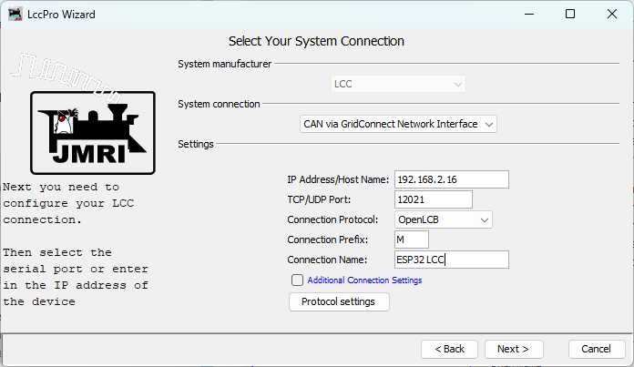
-
Configure the connection settings:
If using the Wizard (first-time launch):
- Enter the connection details in the Wizard form (see steps 3 below for field definitions)
- Click Next to proceed
If you have existing connections:
- Click Edit → Preferences in the LccPro window
- Click the Connections tab (in the left sidebar)
- Click the + button (bottom left) to add a new connection
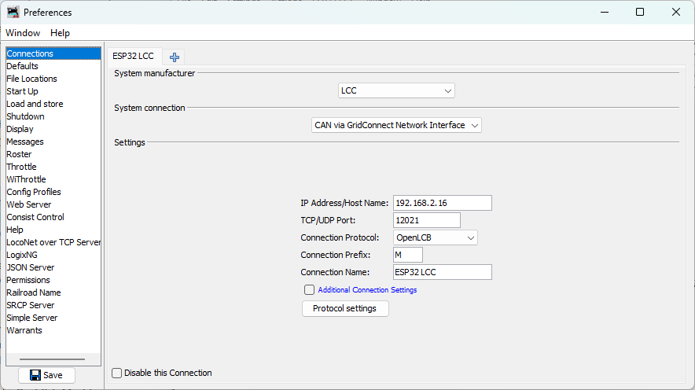
-
Enter the connection settings:
- System manufacturer: Select
LCC(this is the OpenLCB standard system name in JMRI) - System connection: Select
CAN via GridConnect Network Interface - Connection name: Enter
ESP32 LCC(or any descriptive name) - IP Address/Host Name: Enter the IP address displayed in your PlatformIO serial monitor window (look for the line “IP Address: 192.168.x.x” from your ESP32’s startup output)
- TCP/UDP Port: Enter
12021 - Connection Protocol: Select
OpenLCB
- System manufacturer: Select
-
Save settings (required for both Wizard and Preferences):
- Click Edit → Preferences in the LccPro window (if not already there)
- Click Save at the bottom of the Preferences window
- JMRI will prompt to restart - click Restart Now
Monitoring LCC Traffic
After JMRI restarts, let’s open the message monitor to see your ESP32’s events.
-
Open the LCC Monitor:
- Go to ESP32 LCC → Monitor Traffic
- A new window opens showing a live feed of LCC messages
-
Observe the event production:
- You should see alternating event reports appearing every second
- Each event corresponds to the events your ESP32 is producing
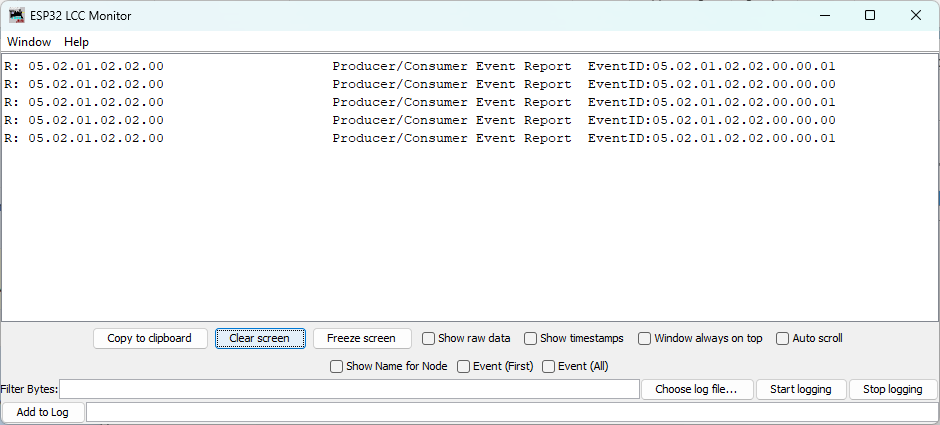
Viewing Node Properties (SNIP Information)
You can verify that JMRI recognizes your ESP32 as a node on the network and view its SNIP (Simple Node Information Protocol) details using LccPro:
-
Open LccPro:
- In JMRI, go to ESP32 LCC → LccPro
- This opens the LCC configuration tool and displays the node list
-
Find your ESP32 node:
- You should see a node with the ID matching your code (
050201020200) - The node list displays the SNIP (Simple Node Information Protocol) data:
- Name:
async_blink(your node name fromconfig.h) - ID:
050201020200(your node’s unique OpenLCB identifier) - Manufacturer:
OpenMRN - Model:
async_blink - Software:
1.00 - Description: The description from
SNIP_NODE_DESC
- Name:
- This confirms the node initialized successfully with correct identity information
- You should see a node with the ID matching your code (
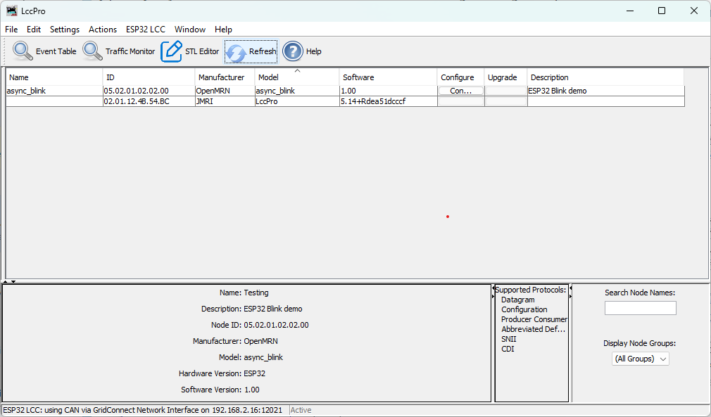
Note: The Configure button in LccPro is for editing the node’s configuration. We’ll explore that in Chapter 4.
Understanding SNIP and ACDI
Now is a good time to understand how OpenLCB provides access to node information through two different mechanisms:
Both SNIP and ACDI provide access to the same information:
- Fixed manufacturer information: manufacturer name, model, hardware/software versions
- User-definable information: node name and description
The difference is HOW you access this information:
SNIP (Simple Node Information Protocol):
- A dedicated simple request/response interaction
- Read-only - queries the current values but cannot modify them
- Fast and lightweight - just send a request, get a response
- Used by JMRI’s node list to quickly display node identity
- Displayed in LccPro → Identification tab
ACDI (Abbreviated Configuration Description Information):
- Accessed through the memory configuration mechanism
- Read and write - can both query and modify the values
- Goes through the configuration protocol (more complex but more capable)
- Used by JMRI’s configuration editor to let you change node name/description
- Modified through LccPro → Configure
In this v0.1 example, both mechanisms read from the same underlying data (initialized from config.h constants). In Chapter 4, you’ll learn to make this information writable through the ACDI/configuration interface, which will also update what SNIP returns.
Optional: View Events as Sensors
Want to see your ESP32’s events visualized as sensor states? You can create sensors in PanelPro that correspond to your event IDs.
Important: For this section, you need to have PanelPro open. If you only have JMRI running:
- Select File → Open PanelPro to launch it
Once PanelPro is open:
-
Open the Sensor Table:
- Go to Tools → Tables → Sensors
- The sensor table displays any configured LCC sensors
-
Add your first sensor:
- Click Add to create a new sensor
- In the dialog:
- System Name: Enter the hardware address for your first event ID
- For
EVENT_ID_0(0x0502010202000000), type:0502010202000000 - JMRI will automatically add the
MSprefix when you click Create
- For
- User Name: Enter
ESP32 Event 0(or any descriptive name)
- System Name: Enter the hardware address for your first event ID
- Click Create
-
Repeat for the second event:
- Click Add again
- System Name: Type
0502010202000001 - User Name:
ESP32 Event 1 - Click Create
-
Watch the sensors:
- Return to the sensor table
- Verify the system names are correct:
- Event 0 should show:
MS0502010202000000 - Event 1 should show:
MS0502010202000001
- Event 0 should show:
- As your ESP32 produces alternating events, observe the sensor behavior:
- Expected behavior: The sensors will flash ACTIVE for a brief moment, then return to INACTIVE
- Why the brief flash?: JMRI uses an event timeout mechanism. When an event is received, the sensor becomes ACTIVE. If the same event isn’t re-sent within the timeout window, the sensor automatically reverts to INACTIVE (a safety feature to prevent stale states if a node disappears from the network)
- Pattern: Since your ESP32 alternates between EVENT_ID_0 and EVENT_ID_1 every second, you should see:
- Second 1: Sensor 0 flashes ACTIVE, Sensor 1 stays INACTIVE
- Second 2: Sensor 1 flashes ACTIVE, Sensor 0 stays INACTIVE
- Second 3: Sensor 0 flashes ACTIVE, and so on…
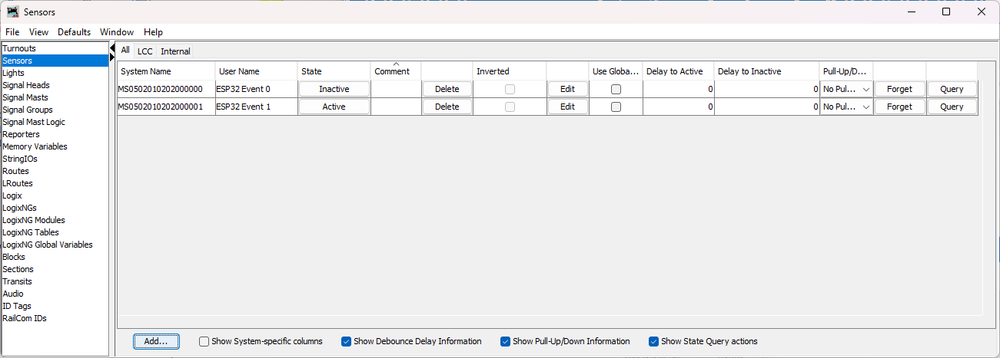
This demonstrates the bidirectional nature of LCC - your JMRI sensors are consuming events produced by your ESP32!
Configuration & JMRI: CDI Discovery
When JMRI first connects to your ESP32, it automatically discovers what configuration options are available by requesting the CDI (Configuration Description Information) file. This file (generated in init_openlcb_stack() as /spiffs/cdi.xml) describes:
- What segments are available (Internal settings, User info, Device-specific parameters)
- What fields can be edited in each segment
- Data types (text, numbers, enums, etc.)
- Constraints (min/max values, field lengths, etc.)
In v0.1, the CDI is generated automatically from the ConfigDef structure in config.h. Your node currently exposes:
- SNIP Identification: Manufacturer, model, hardware/software versions (read-only)
- ACDI User Info: Node name and description (editable, but changes aren’t saved yet)
- Internal Configuration: Reserved space for future parameters
When you view node properties in LccPro → Configure, JMRI uses this CDI to render the appropriate dialog fields.
In Chapter 4 (next chapter), you’ll:
- Understand how configuration is stored in SPIFFS
- Learn to edit your node’s name through JMRI and see changes persist
- Understand factory_reset() behavior and SNIP static vs. dynamic data
- Explore how
apply_configuration()fits into the persistence lifecycle - Add configurable parameters (like
EVENT_INTERVAL) to the CDI - Implement
apply_configuration()to save user changes while the node is running - Learn how to version your configuration schema for forward compatibility
- Test dynamic configuration updates through LccPro
For now, understand that your node is already capable of being configured via JMRI - the CDI file ensures JMRI knows what options your node supports.
Troubleshooting JMRI Connection
JMRI shows “Connection failed” or “No route to host”:
- Verify the IP address matches what the ESP32 serial monitor showed
- Ensure your computer and ESP32 are on the same WiFi network
- Check firewall settings - allow Java/JMRI to access the network
- Try pinging the ESP32:
ping 192.168.1.100(use your ESP32’s IP)
No messages appear in the monitor:
- Click Clear in the monitor to reset the display
- Press RESET on the ESP32 to trigger initialization messages
- Check the connection status at the bottom of the JMRI window (should show “Connected”)
Messages appear but events don’t match:
- Verify the event IDs in your code match what you’re looking for in JMRI
- Check that you didn’t modify the EVENT_ID constants
“Connection lost” after working initially:
- ESP32 may have rebooted or lost WiFi connection
- Check the serial monitor for errors or WiFi reconnection attempts
- ESP32’s IP address may have changed if DHCP lease renewed
Troubleshooting General Issues
Library not found during build:
- Verify the
lib_depsline inplatformio.inihas no typos - Run PlatformIO: Clean from the command palette (
Ctrl+Shift+P) - Rebuild the project
ESP32 not detected:
- Check USB cable (must be data cable, not charge-only)
- Install CP2102 or CH340 USB driver for your operating system
- Try a different USB port
WiFi connection fails:
- Verify SSID and password in code
- Check that ESP32 is within range of access point
- ESP32 only supports 2.4GHz WiFi (not 5GHz)
JMRI not seeing events:
- Verify JMRI is configured for TCP GridConnect connection
- Check that ESP32 and JMRI are on the same network
- Verify the TCP server address and port in ESP32 code
What’s Next
You’ve now built your first OpenLCB node with WiFi transport!
In the next chapter, we’ll cover configuration—how to customize your node’s behavior and settings through the CDI (Configuration Description Information) interface.
Configuration & Persistence
Overview: Why Configuration Matters
In Chapter 3, we built a working OpenLCB node with a hardcoded node name (async_blink) and fixed event IDs. This is perfect for learning—you can compile once and run immediately. But production nodes need flexibility: different users want different names, different event IDs, different blink intervals to match their layout or preferences.
This is where configuration comes in. OpenLCB provides a standard way to store and modify node settings without recompiling firmware. Through tools like JMRI, users can:
- Edit the node name and description
- Modify event IDs
- Adjust the blink interval (how fast the LED blinks)
- Change other parameters
All changes persist across reboots, stored safely in the node’s flash memory.
How Configuration Works in OpenLCB
Recall from Chapter 3 that our node exposes three key concepts (detailed in the next section):
| Concept | Purpose |
|---|---|
| ACDI (Automatic Configuration Description Information) | Standardized data block storing node identity (manufacturer, model, hardware/software version, user name, description) |
| SNIP (Simple Node Information Protocol) | Network protocol that broadcasts ACDI data so other nodes and tools can discover and identify this node |
| CDI (Configuration Description Information) | Schema describing what configuration options the node has and how to edit them via tools like JMRI |
In this chapter, we’ll explore:
- Storage Model — Where configuration lives, how ACDI/SNIP/CDI fit together, and the binary file format
- Editing in JMRI — How to change node name and persist changes
- Factory Reset Behavior — What happens on first boot
- Persistence Details — How data survives reboots and power loss
- Adding Configurable Settings — Make blink interval editable via JMRI
- Configuration Versioning — Evolving your schema safely as you add more settings
What We’re Covering
This chapter combines conceptual understanding with hands-on implementation. We’ll:
- Part 1 (Sections 1-4): Understand how configuration storage works, edit node name via JMRI, see changes persist
- Part 2 (Sections 5-6): Make the blink interval configurable, implement persistence in code, handle schema versioning
By the end, you’ll have a production-ready configuration system that lets users customize your node’s behavior through JMRI without recompiling.
Storage Model: Where Configuration Lives
The Configuration File Structure
When async_blink runs on ESP32, it creates a configuration file in SPIFFS (flash storage) at /spiffs/openlcb_config. This file is organized by memory offset—different ranges of bytes store different types of data.
graph TD
A["Offset 0-127: User Info<br/>Node name, description (editable via JMRI)"]
B["Offset 128+: Internal Config<br/>Node-specific settings (currently unused in v0.1)"]
C["Metadata: Version, CRC<br/>CANONICAL_VERSION for schema tracking"]
A --> B
B --> C
style A fill:#e1f5ff
style B fill:#f3e5f5
style C fill:#fff9c4
Binary File Format
The /spiffs/openlcb_config file is binary, not text. This is important to understand because:
- Offset-based layout: Different types of data (strings, integers, metadata) live at specific byte offsets. This requires a binary format where exact byte positions matter.
- Direct serialization: OpenMRN’s accessors serialize C++ data structures directly into binary form, padding and aligning fields as needed.
- Not human-readable: It’s raw binary data—you can’t read it as text or edit it directly.
- CRC integrity: Binary metadata includes checksums to detect corruption.
Practical implication: You must use JMRI (or a similar LCC tool) to edit configuration. This is by design—it ensures configuration remains valid and in sync with the firmware’s expectations. The binary format protects against accidental corruption and keeps configuration data safe.
Three Concepts: ACDI, SNIP, and CDI
When you see these three terms in OpenLCB documentation, here’s what they mean:
ACDI (Automatic Configuration Description Information)
ACDI is a standardized data block that stores your node’s identity information:
- Static fields: Manufacturer ID, model, hardware/software versions (compiled into firmware)
- Dynamic/user fields: Node name and description (stored in SPIFFS, editable via JMRI)
Think of ACDI as your node’s “business card”—it describes what the node is.
SNIP (Simple Node Information Protocol)
SNIP is the protocol that allows the node to broadcast its ACDI data to the network. When JMRI or another tool connects and asks “who are you?” the node responds with SNIP data (pulled from ACDI).
CDI (Configuration Description Information)
CDI is the configuration schema—a blueprint describing:
- What configuration options the node has (event IDs, intervals, etc.)
- Their types (integer, string, event ID, etc.)
- Default values and constraints
CDI tells tools how to configure the node, separate from identity.
How They Work Together
| Concept | Purpose | Stored Where | Example |
|---|---|---|---|
| ACDI | Node identity & description | SPIFFS + firmware | Manufacturer “OpenMRN”, User name “Kitchen Light” |
| SNIP | Protocol to broadcast ACDI | (generated from ACDI at runtime) | “Who are you?” → SNIP response with ACDI |
| CDI | Configuration schema/blueprint | Compiled in firmware | “Node has EVENT_INTERVAL config (int, 100-10000ms)” |
The config file at /spiffs/openlcb_config stores:
- User ACDI data (offset 0-127): Node name and description
- Node-specific config (offset 128+): Settings like event IDs, blink interval, etc.
OpenMRNLite automatically:
- Responds to SNIP requests using ACDI
- Exposes CDI to configuration tools
- Handles persistence of both ACDI and config data
Understanding CANONICAL_VERSION
In config.h, you’ll see:
static constexpr uint16_t CANONICAL_VERSION = 0x0001;
This version number is not for your application—it’s for OpenMRN to track schema changes. Here’s why it matters:
- First Boot: No config file exists yet. OpenMRN sees
CANONICAL_VERSION = 0x0001and initializes a new config file with this version number. - Later Boots: OpenMRN reads the version from the config file. If it matches
CANONICAL_VERSION, everything is normal—use the config file as-is. - Version Mismatch: If you change
CANONICAL_VERSIONin your code and recompile, OpenMRN detects a mismatch and triggers a complete factory reset. This wipes the ENTIRE config file, including SNIP user data at offset 0-127 (your node name and description that users may have customized). Everything is reinitialized to defaults.
Important: Users lose their custom node name and any other persisted configuration when CANONICAL_VERSION changes. We won’t change it in this section, but later sections explore how to evolve configuration safely while preserving user data.
The CDI Segments
Recall from Chapter 3 that config.h defines configuration segments:
CDI_GROUP(ConfigDef, MainCdi());
CDI_GROUP_ENTRY(ident, Identification); // Static SNIP data: manufacturer, model, etc.
CDI_GROUP_ENTRY(acdi, Acdi); // ACDI protocol marker (tells tools ACDI data exists)
CDI_GROUP_ENTRY(userinfo, UserInfoSegment); // User-editable name/description (configuration tool interface)
CDI_GROUP_ENTRY(seg, AsyncBlinkSegment); // Internal config (offset 128+)
CDI_GROUP_END();
Each segment serves a specific role:
- ident: Static manufacturer data (Identification) — read-only in JMRI, compiled into firmware
- acdi: ACDI protocol marker — signals to configuration tools that ACDI data is available. Does NOT expose data directly; instead acts as a tag for the SNIP protocol handler
- userinfo: User-editable ACDI fields (User Name, Description) — what JMRI displays as the “User Info” tab for user customization
- seg: Internal app config, stored at offset 128+
In JMRI’s LccPro configuration dialog, you’ll see:
- Identification tab (from ident: manufacturer, model, hardware/software versions)
- User Info tab (from userinfo: the name and description fields you can customize)
The acdi entry doesn’t appear as a separate tab—it’s a protocol marker that enables the SNIP data exchange behind the scenes.
Why Offsets Matter
The offset-based model gives you precise control over where data lives:
config.h shows:
CDI_GROUP_ENTRY(userinfo, UserInfoSegment, Name("User Info"));
CDI_GROUP_ENTRY(seg, AsyncBlinkSegment, Offset(128));
↑
Explicit offset for internal config
This means:
- User name/description go to offset 0-127 (SNIP user data, completely wiped on factory reset and reinitialized to defaults from config.h)
- Internal config starts at offset 128+ (completely wiped on factory reset, replaced with defaults)
- When JMRI edits the user name, it writes directly to offset 0-127
- When factory reset is triggered, both offset 0-127 and offset 128+ are wiped and reinitialized from the firmware defaults
Important: There are NO offsets preserved during factory reset except for the static SNIP data compiled into firmware (manufacturer, model, hardware/software versions). All config file data, including user customizations at offset 0-127, is lost.
Key Takeaway
Configuration is organized by memory offset in a SPIFFS file. Static data (manufacturer info) lives in firmware; dynamic data (node name) lives in flash. OpenMRN tracks schema with CANONICAL_VERSION to trigger a factory reset when the config schema changes (all-or-nothing reset, no field migration). The CDI segments map C++ structures to these memory offsets, giving JMRI a machine-readable map of what’s configurable.
Editing Configuration in JMRI
Step-by-Step: Edit Node Name in LccPro
One of the most common configuration tasks is renaming a node to something meaningful (e.g., “Test Blink Node” instead of “async_blink”). Here’s how it works:
1. Launch JMRI and Open the LccPro Tool
Start JMRI (5.12 or later) and navigate to:
Tools → LCC → LccPro
You should see a list of nodes currently on your LCC network. Your ESP32 node appears here, identified by its SNIP information (manufacturer, model, and user name).
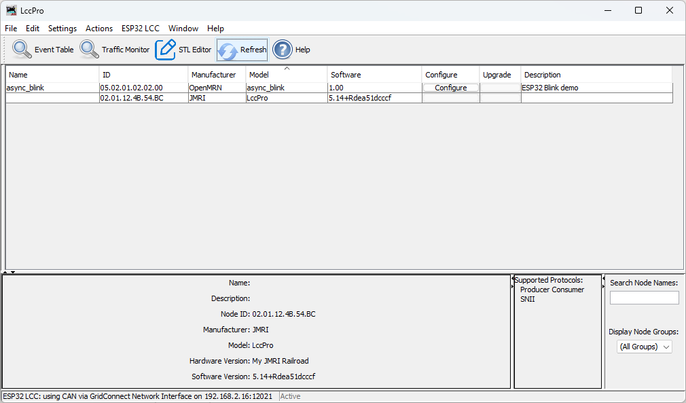
2. Select Your Node
In the node list, click on the node you want to configure (e.g., “async_blink”).
The details panel below the list now shows information for the selected node:
- Node ID
- Static SNIP Data: Manufacturer (
OpenMRN), Model (async_blink), Hardware version (ESP32), Software version (1.00) - SNIP User Data: User name (currently
async_blink), user description (ESP32 Blink demo)
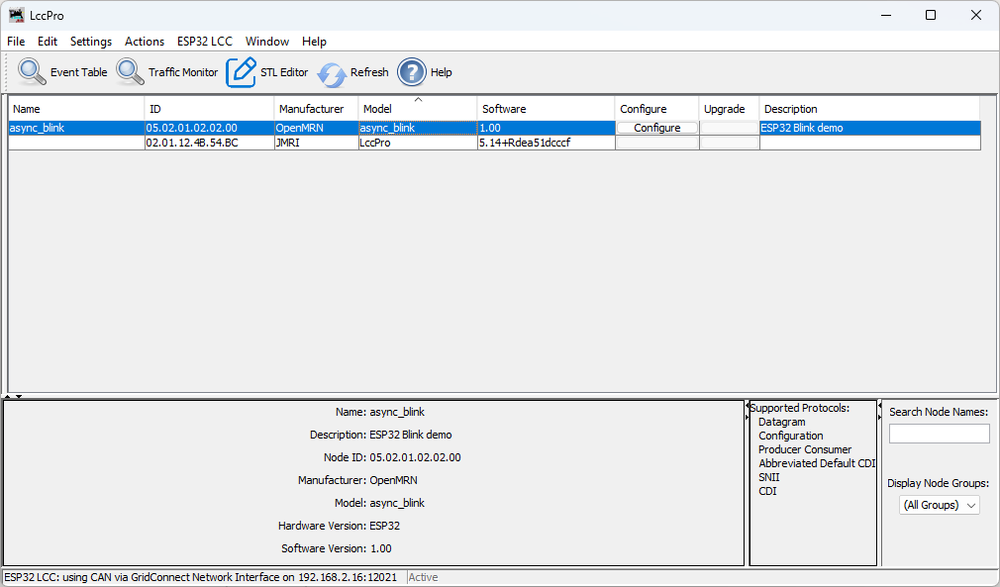
3. Open the Configuration Editor
Click the Configure button (or double-click the node).
LccPro opens a dialog showing the node’s CDI. You’ll see tabs for different sections:
- Identification (read-only): Static SNIP data from firmware
- User Info (editable): SNIP user name and description from config file
- Settings (if present): Application-specific configuration
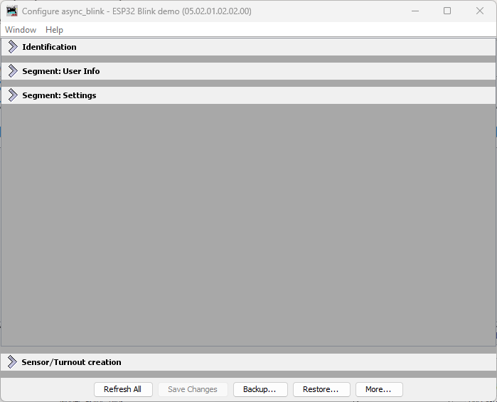
4. Edit the User Name
Expand the User Info tab.
You’ll see the User Info tab with fields populated with the current values from the node (as shown in the previous step). Change the User Name to something meaningful, like Test Blink Node. You can also edit the description if you’d like.
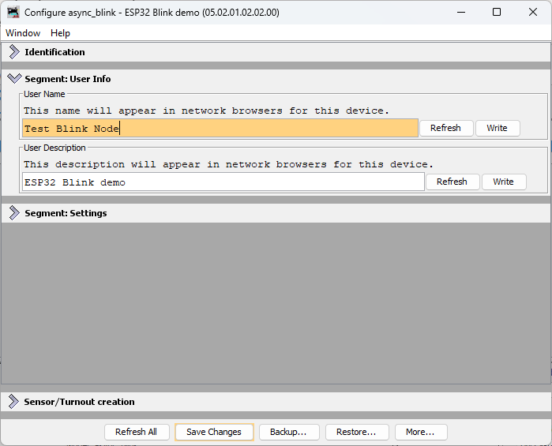
5. Write the Changes to the Node
After editing the User Name, you have two options:
- Write individually: Click the Write button next to the User Name field to send just that change to the node
- Write all changes: Click the Save Changes button at the bottom of the dialog to write all modified fields at once
Either way, LccPro sends the new user name to the ESP32 node via OpenLCB Configuration protocol:
sequenceDiagram
actor User as You (JMRI)
participant JMRI
participant ESP32 as ESP32<br/>(OpenMRN)
participant SPIFFS
User->>JMRI: Click "Write"<br/>or "Save Changes"
JMRI->>ESP32: Configuration write message<br/>(new user name)
ESP32->>SPIFFS: Write new name<br/>to offset 0-127
ESP32->>JMRI: Configuration write ACK<br/>(success)
JMRI->>User: Changes saved!
Here’s what the actual LCC traffic looks like when you save the user name. This trace captured from an LCC monitor shows the Datagram messages exchanged:
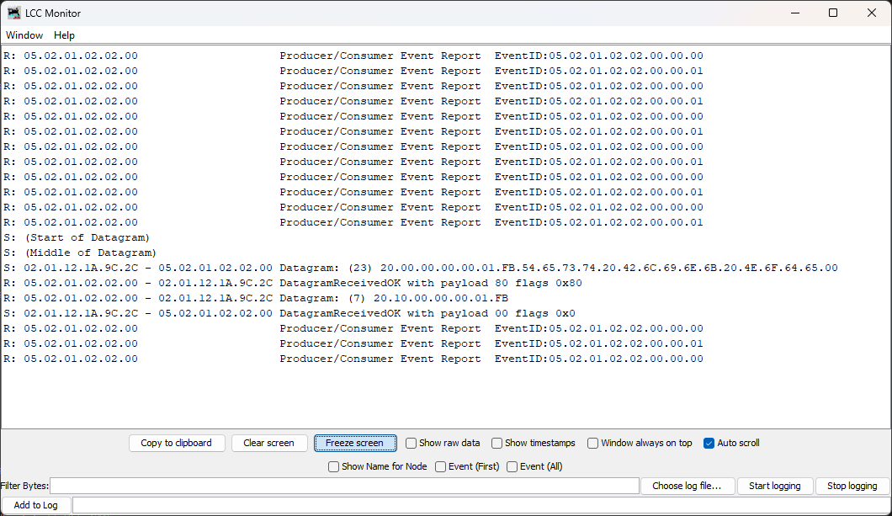
For SNIP user data (Name and Description), the changes take effect immediately. There is no separate “apply” step needed.
6. Verify Persistence
Once saved, the new name persists across reboots:
-
Immediate Check in LccPro: Click the Refresh button above the node list. This tells LccPro to ask all nodes for their current information. The node list should now show the updated name
Test Blink Nodeinstead ofasync_blink. -
Power Cycle Check: Power off the ESP32, wait a few seconds, power it back on. Reconnect JMRI to the node (or click Refresh again). The name is still
Test Blink Node—it was saved to SPIFFS.
What Just Happened
When you edited and saved the name, OpenMRN did this:
- Received the new value via JMRI’s Configuration write protocol
- Wrote it to the config file at offset 0-127 (the SNIP user data area)
- Confirmed the write was successful back to JMRI
The next time the node boots, it reads this config file from SPIFFS and exposes the updated user name via SNIP protocol. The firmware itself didn’t change—only the data in flash storage.
SNIP user data (name and description) is part of the OpenLCB standard for node identification. Changes to these fields take effect immediately without needing an explicit “apply” step.
What This Enables
This workflow shows the power of configuration:
- No recompilation needed to change the node name
- Persistent across power cycles
- Standard protocol (OpenLCB Configuration) that any LCC tool understands
- Centralized in JMRI—all nodes configured from one place
Later sections of this chapter extend this pattern to make event IDs, blink interval, and other settings configurable too. The same workflow will apply.
Troubleshooting: Name Doesn’t Save
If you edit the name in JMRI but it doesn’t save:
- Check Connection: Ensure JMRI is still connected to the node (green indicator in LccPro)
- Check Permissions: The node’s CDI must declare the User Info segment as writable. In our example, it is.
- Check SPIFFS: The ESP32’s SPIFFS must have free space. If SPIFFS is full, writes fail silently. Check serial output for error messages.
See Chapter 3’s code-walkthrough section for details on how configuration is initialized.
Next: Application-Specific Configuration
This section covered editing SNIP user data (Name and Description), which are standardized fields handled automatically by OpenMRN. When you add application-specific configuration fields (like the blink interval in the next chapter), the workflow changes slightly—you’ll need to use the Update Complete button to tell the node to apply your custom configuration changes. See Chapter 4’s “Adding a Configurable Interval Setting” section for that workflow.
Factory Reset Behavior
What Happens on First Boot
When you flash async_blink to an ESP32 for the first time, the node goes through an initialization sequence. Understanding this sequence is key to understanding configuration.
Before First Boot
- ESP32 has the async_blink firmware loaded
- SPIFFS flash memory is either empty OR contains leftover config from a previous application
- OpenMRN doesn’t know what to expect
First Boot: factory_reset() is Called
On startup, main.cpp calls:
void init_filesystem() {
openlcb::FATFS_INIT(); // Mount SPIFFS
// If no valid config file exists, create one
if (!CheckFileExists(&driver, CONFIG_FILENAME)) {
factory_reset(&driver, CONFIG_FILENAME, &config_file_content,
0, sizeof(config_file_content));
}
}
The factory_reset() function:
- Creates a new config file at
/spiffs/openlcb_config - Initializes all fields with default values
- Writes SNIP user data: User name = “async_blink”, description = “ESP32 Blink demo”
- Initializes internal config: Sets up offset 128+ with defaults
- Stores CANONICAL_VERSION: Version 0x0001 is written to config metadata
After factory_reset() completes:
- Config file is ready to use
- Node name is “async_blink” (the default from SNIP_NODE_NAME constant)
- JMRI can now edit the user name via the User Info tab
What Gets Wiped and What Doesn’t
When factory_reset() is triggered:
| Data | What Happens | Reason |
|---|---|---|
| Static SNIP Data (manufacturer, model, hardware/software version) | Untouched | Lives in firmware, not in config file |
| SNIP User Data (user name, description) | Completely wiped | Reset to defaults from config.h (e.g., “async_blink”) |
| Internal Config (offset 128+) | Completely wiped | Reset to application defaults |
| User Customizations (node name set via JMRI) | Lost | Factory reset erases all custom edits |
This is important to understand: factory reset is all-or-nothing. Once triggered, users lose any custom node name or description they may have set through JMRI. There is no selective preservation of custom fields.
What Persists Across Reboots
Once factory_reset() runs and the config file exists, normal boots are much simpler:
- SPIFFS is mounted
- Config file is found → no factory reset needed
- User name and description are read from offset 0-127
- Internal config is read from offset 128+
- Node comes online with the same configuration as before
This is why editing the node name in JMRI persists across power cycles.
When Does Factory Reset Trigger Again?
Besides explicitly calling factory_reset() (or pressing a physical button), OpenMRN automatically triggers a reset if:
- Config file is corrupted (CRC check fails)
- CANONICAL_VERSION mismatch (firmware version differs from saved config version)
Important Warning: If you change CANONICAL_VERSION in your firmware (e.g., to add new configuration fields), the next boot will trigger a factory reset. Users will lose any custom node name or configuration they set through JMRI. This is a breaking change for deployed nodes.
Triggering a Factory Reset from JMRI
You can manually trigger a factory reset from the JMRI LccPro configure dialog without recompiling firmware or pressing buttons on the ESP32:
- Open LccPro and select your node
- Click Configure (or double-click the node)
- In the configure dialog, click the More… button
- Select Factory Reset
JMRI will send a factory reset command to the node via OpenLCB Configuration protocol. The node will immediately reinitialize its config file with factory defaults. This is useful for:
- Testing: Quickly reset configuration during development
- Troubleshooting: Recover from corrupted settings without physical access to the board
- User Support: Remotely help users restore a node to factory defaults without recompiling
Practical Example: Factory Reset Reboot
When you trigger a factory reset (via JMRI or version mismatch), here’s what the serial console shows on the reboot:
rst:0xc (SW_CPU_RESET),boot:0x13 (SPI_FAST_FLASH_BOOT)
configsip: 0, SPIWP:0xee
clk_drv:0x00,q_drv:0x00,d_drv:0x00,cs0_drv:0x00,hd_drv:0x00,wp_drv:0x00
mode:DIO, clock div:2
load:0x3fff0030,len:1184
load:0x40078000,len:13232
load:0x40080400,len:3028
entry 0x400805e4
=== OpenLCB async_blink ESP32 Example ===
Node ID: 0x050201020200
Event 0: 0x0502010202000000
Event 1: 0x0502010202000001
Initializing SPIFFS...
SPIFFS initialized successfully
Connecting to WiFi SSID: YourNetwork
.
WiFi connected!
IP Address: 192.168.1.100
Creating CDI configuration descriptor...
[CDI] Checking /spiffs/cdi.xml...
[CDI] File /spiffs/cdi.xml appears up-to-date (len 987 vs 987)
[CDI] Registering CDI with stack...
Initializing OpenLCB configuration...
Starting OpenLCB stack...
Starting executor thread...
Starting TCP Hub on port 12021...
TCP Hub listening. JMRI can connect to this device on port 12021
OpenLCB node initialization complete!
Entering run mode - will alternate events every 1 second
Allocating new alias C41 for node 050201020200
Produced event: 0x0502010202000001 (state: 1)
Produced event: 0x0502010202000000 (state: 0)
Produced event: 0x0502010202000001 (state: 1)
...
Important: Notice there is no console message when the reset is triggered. The reset happens silently from an external trigger. The boot diagnostics (ROM messages about rst:0xc, clock div, etc.) indicate a software reset occurred. Then the normal initialization proceeds.
After factory reset, your config file is re-initialized with defaults:
- SNIP User Name: “async_blink” (from
SNIP_NODE_NAMEconstant) - SNIP User Desc: “ESP32 Blink demo” (from
SNIP_USER_DESCRIPTIONconstant) - Any custom node name set via JMRI is lost
What Happens After Factory Reset
After factory reset, subsequent boots proceed normally. The config file already exists and is valid, so no factory reset runs again unless:
- The config file becomes corrupted
- The
CANONICAL_VERSIONin firmware differs from the saved version - You explicitly trigger another reset via JMRI Configure dialog
Key Takeaway
factory_reset() runs on first boot or when triggered by JMRI, version mismatch, or config corruption to initialize a valid config file with SNIP defaults. After that, the config persists across every reboot. JMRI can edit the user name, which updates the config file while preserving other settings.
Adding a Configurable Interval Setting
In this section, we’ll extend the async_blink example from Chapter 3 to make the blink interval configurable via JMRI. This demonstrates how to:
- Add a new configuration field to the CDI schema
- Implement
apply_configuration()to read the field and cache it - Use the cached value in your application loop
- Test configuration changes in real-time with LccPro
Code Changes to config.h
Starting from the Chapter 3 version, we’ll add a configurable blink_interval field to the CDI. Because we’re adding a new field to the configuration schema, we must also bump CANONICAL_VERSION (from 0x0001 to 0x0002). When you upload this new code, OpenMRN will detect the version mismatch and trigger a factory reset, which wipes the old config file and initializes it with the new schema.
Here’s what changes:
CDI_GROUP(AsyncBlinkSegment, Segment(MemoryConfigDefs::SPACE_CONFIG), Offset(128));
CDI_GROUP_ENTRY(internal_config, InternalConfigData);
+CDI_GROUP_ENTRY(blink_interval, Uint16ConfigEntry,
+ Default(1000),
+ Min(100),
+ Max(30000),
+ Name("Blink Interval"),
+ Description("Milliseconds between alternating events (100-30000)"));
CDI_GROUP_END();
What this means:
Uint16ConfigEntry: A 16-bit unsigned integer fieldDefault(1000): Initial value is 1000 milliseconds (1 second)Min(100),Max(30000): JMRI will enforce these limitsName()andDescription(): Labels shown in the JMRI configuration dialog
The field is stored at offset 128+ in the configuration file (after the SNIP user data at offset 0-127).
Bump CANONICAL_VERSION
Because we changed the configuration schema (added a new field), we must bump the version number. This tells OpenMRN that the configuration file format has changed. On the next boot, OpenMRN will detect the version mismatch and trigger a factory reset:
-static constexpr uint16_t CANONICAL_VERSION = 0x0001;
+static constexpr uint16_t CANONICAL_VERSION = 0x0002;
When you upload this new code:
- OpenMRN reads the old config file’s version (0x0001)
- Compares it to the new CANONICAL_VERSION (0x0002)
- Detects a mismatch and triggers factory reset
- Calls your
factory_reset()method to write defaults for the new schema - Calls
apply_configuration()to load the newly-initialized config file
This prevents data corruption from partially-initialized fields. The cost is that users’ old configuration is wiped (factory reset), but the new schema is guaranteed to be valid.
Full config.h with changes:
#ifndef _ASYNC_BLINK_CONFIG_H_
#define _ASYNC_BLINK_CONFIG_H_
#include "openlcb/ConfigRepresentation.hxx"
#include "openlcb/MemoryConfig.hxx"
namespace openlcb {
extern const SimpleNodeStaticValues SNIP_STATIC_DATA = {
4, // Version
"OpenMRN", // Manufacturer
"async_blink", // Model
"ESP32", // Hardware version
"1.00" // Software version
};
static const char SNIP_NODE_NAME[] = "async_blink";
static const char SNIP_NODE_DESC[] = "ESP32 Blink demo";
/// Version number for the configuration structure
static constexpr uint16_t CANONICAL_VERSION = 0x0002;
CDI_GROUP(AsyncBlinkSegment, Segment(MemoryConfigDefs::SPACE_CONFIG), Offset(128));
CDI_GROUP_ENTRY(internal_config, InternalConfigData);
CDI_GROUP_ENTRY(blink_interval, Uint16ConfigEntry,
Default(1000),
Min(100),
Max(30000),
Name("Blink Interval"),
Description("Milliseconds between alternating events (100-30000)"));
CDI_GROUP_END();
CDI_GROUP(ConfigDef, MainCdi());
CDI_GROUP_ENTRY(ident, Identification);
CDI_GROUP_ENTRY(acdi, Acdi);
CDI_GROUP_ENTRY(userinfo, UserInfoSegment, Name("User Info"));
CDI_GROUP_ENTRY(seg, AsyncBlinkSegment, Name("Settings"));
CDI_GROUP_END();
} // namespace openlcb
#endif // _ASYNC_BLINK_CONFIG_H_
Code Changes to main.cpp
Now we’ll modify main.cpp to:
- Add a global cache variable for the interval
- Update
apply_configuration()to read the interval from the config file - Update
factory_reset()to write default interval to the config file - Use the cached value in the loop
Add the Cache Variable
// State variable to track which event to send
bool event_state = false;
-// Timing for event production (1 second = 1000 milliseconds)
-unsigned long last_event_time = 0;
-const unsigned long EVENT_INTERVAL = 1000;
+// Timing for event production - cached from configuration
+unsigned long last_event_time = 0;
+unsigned long event_interval = 1000; // Default, will be read from config
This global event_interval variable will be updated whenever the configuration changes.
Update apply_configuration()
Replace the stub apply_configuration() method in the FactoryResetHelper class:
class FactoryResetHelper : public DefaultConfigUpdateListener
{
public:
UpdateAction apply_configuration(int fd, bool initial_load,
BarrierNotifiable *done) OVERRIDE
{
AutoNotify n(done);
- // In v0.1, we don't handle runtime config changes yet.
- // Real nodes would persist changes here when the user modifies
- // configuration through JMRI. See Chapter 5 for implementation.
+ // Read the blink interval from config file and update global variable
+ event_interval = cfg.seg().blink_interval().read(fd);
+ Serial.printf("Configuration updated: blink_interval = %lu ms\n", event_interval);
+
return UPDATED;
}
void factory_reset(int fd) override
{
// Called on first boot to initialize the configuration file.
// Write initial SNIP dynamic data (node name and description).
cfg.userinfo().name().write(fd, openlcb::SNIP_NODE_NAME);
cfg.userinfo().description().write(fd, openlcb::SNIP_NODE_DESC);
+
+ // Initialize application settings with defaults
+ cfg.seg().blink_interval().write(fd, 1000); // Default 1 second
+ Serial.println("Factory reset: wrote default blink_interval = 1000 ms");
}
} factory_reset_helper;
What happens when apply_configuration() is called:
- On first boot with the new schema (CANONICAL_VERSION bumped): OpenMRN detects the version mismatch, triggers
factory_reset()to write defaults, then callsapply_configuration()to read those freshly-written defaults - On JMRI config change: Reads the new interval value that JMRI just wrote to the config file
- Always returns
UPDATED: Tells OpenMRN the change was successfully applied
The key sequence on first boot with schema changes: factory_reset(fd) is called first (writes 1000 to the file), then apply_configuration(fd) is called (reads 1000 from the file).
Use the Cached Value in Loop
In the loop() function, change the hardcoded constant to use the cached variable:
void loop() {
// CRITICAL: Must call openmrn.loop() frequently to process messages
openmrn.loop();
- // Check if it's time to produce an event (every 1 second)
+ // Check if it's time to produce an event
unsigned long current_time = millis();
- if (current_time - last_event_time >= EVENT_INTERVAL) {
+ if (current_time - last_event_time >= event_interval) {
// Alternate event state
event_state = !event_state;
The loop now uses event_interval (the cached variable) instead of EVENT_INTERVAL (the hardcoded constant). When apply_configuration() updates the global, the loop automatically uses the new value on the next iteration.
Update the Setup Message
Also update the startup message to reference the configurable variable:
void setup() {
init_serial();
init_filesystem();
init_network();
init_openlcb_stack();
init_tcp_hub();
Serial.println("OpenLCB node initialization complete!");
- Serial.println("Entering run mode - will alternate events every 1 second\n");
+ Serial.printf("Entering run mode - will alternate events every %lu ms\n", event_interval);
last_event_time = millis();
}
Complete Working Code
The complete working code at this point is available on GitHub:
- PlatformIO version: code/platformio/chapter4/final/
- Arduino IDE version: code/arduino/chapter4/final/
You can download or clone the repository and open either version to get the exact code with the configurable interval feature implemented.
Testing with LccPro
Now that the code is modified, compile, upload to your ESP32, and test:
Step 1: Verify Initial Boot Output
Important: Because we bumped CANONICAL_VERSION from 0x0001 to 0x0002, the first boot with this new code will trigger a factory reset. This wipes the old config file and initializes it with the new schema. You’ll see factory reset messages on the serial output.
Open the Serial Monitor (or PlatformIO Monitor). You should see:
Initializing SPIFFS...
SPIFFS initialized successfully
Connecting to WiFi SSID: Socha_IoT
.
WiFi connected!
IP Address: 192.168.1.100
Creating CDI configuration descriptor...
[CDI] Checking /spiffs/cdi.xml...
[CDI] File /spiffs/cdi.xml appears up-to-date (len 1172 vs 1172)
[CDI] Registering CDI with stack...
Initializing OpenLCB configuration...
Factory reset: wrote default blink_interval = 1000 ms
Starting OpenLCB stack...
Starting executor thread...
OpenLCB stack initialized successfully
Configuration updated: blink_interval = 1000 ms
Starting TCP Hub on port 12021...
TCP Hub listening. JMRI can connect to tListening on port 12021, fd 48
his device on port 12021
OpenLCB node initialization complete!
Entering run mode - will alternate events every 1000 ms
Allocating new alias C41 for node 050201020200
Produced event: 0x0502010202000001 (state: 1)
What to verify:
Factory reset: wrote default blink_interval = 1000 ms— Confirms version mismatch detected and factory reset triggeredConfiguration updated: blink_interval = 1000 ms— Confirms apply_configuration() was called and read the default valueEntering run mode - will alternate events every 1000 ms— Confirms event_interval global was set from configProduced event:messages at ~1 second intervals — Confirms timing is working
If you see these messages, the configuration system is working correctly. You’re ready to test changing the interval via JMRI.
Step 2: Change Interval in LccPro
- Connect JMRI to your ESP32 node (via TCP on port 12021)
- Open Tools → LCC → LccPro
- Find your node in the list
- Click Configure (or double-click the node)
- Find the Settings tab and locate Blink Interval field
- Change the value (e.g., from 1000 to 2000 milliseconds)
- Click Write to send the new value
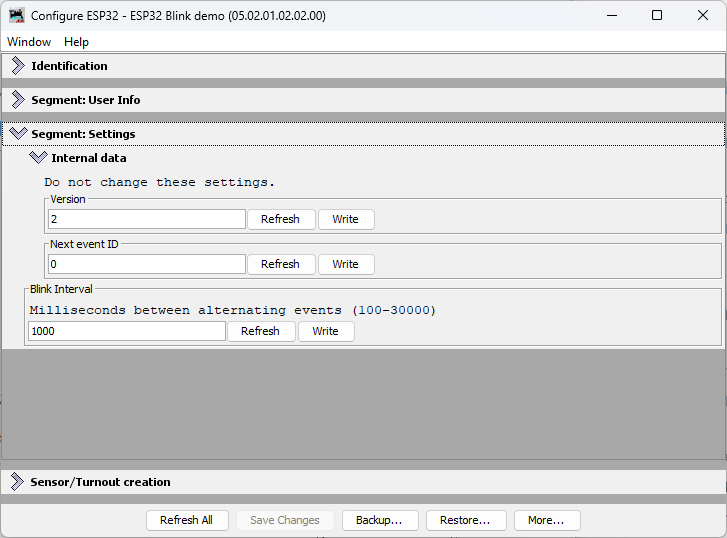
Step 2.5: Monitor the LCC Traffic
When you click Write, JMRI sends the new interval value to the ESP32 as a Datagram message. Here’s what the LCC traffic looks like:
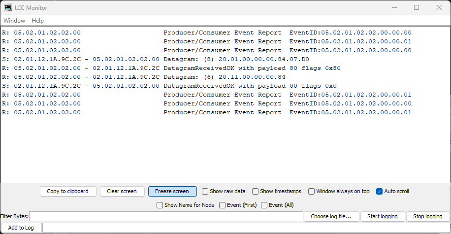
In this capture, you can see the write message:
S: 02.01.12.1A.9C.2C - 05.02.01.02.02.00 Datagram: (8) 20.01.00.00.00.84.07.D0
The last two bytes 07.D0 are the hex representation of 2000 (decimal)—this is the new interval value being written to the node.
Step 3: Click Update Complete
This is the critical step! Unlike SNIP user data (Name and Description, which take effect immediately), application-specific configuration fields like blink_interval need an explicit Update Complete step.
Here’s why: When you click Write, JMRI sends the new value to the ESP32 and it’s saved to SPIFFS. But OpenMRN doesn’t immediately call your apply_configuration() method. This allows you to make multiple writes in JMRI (e.g., change interval AND add other settings) before the node processes them all together.
When you click Update Complete, you’re telling the node: “All changes are sent; now apply them.” OpenMRN then calls your apply_configuration() method, which reads the new interval from the config file and updates your global cache variable.
Click the Update Complete button at the bottom of the Configure dialog.
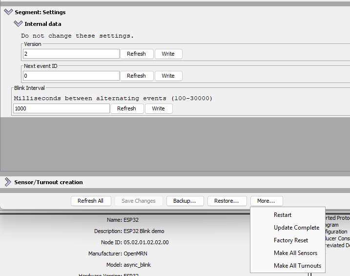
When you click Update Complete, the node sends an acknowledgment message. Here’s what the LCC traffic shows:
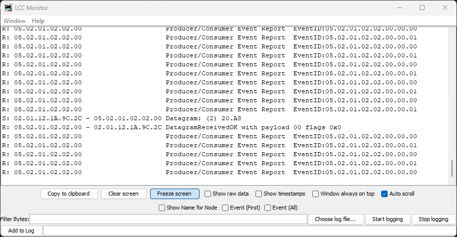
The 20.A8 Datagram is the Update Complete message from JMRI to the node, followed by the node’s acknowledgment.
Step 4: Observe the Change
Check the Serial Monitor. You should see:
Produced event: 0x0502010202000000 (state: 0)
Produced event: 0x0502010202000001 (state: 1)
Configuration updated: blink_interval = 2000 ms
Produced event: 0x0502010202000000 (state: 0)
Produced event: 0x0502010202000001 (state: 1)
The node’s event frequency has changed without recompiling or rebooting. The new interval is now cached in the global variable and will persist across power cycles (the new value is saved to SPIFFS).
Step 5: Verify Persistence
Power off the ESP32, wait a few seconds, then power it back on. Open Serial Monitor again:
Creating CDI configuration descriptor...
[CDI] Checking /spiffs/cdi.xml...
[CDI] File /spiffs/cdi.xml appears up-to-date (len 1172 vs 1172)
[CDI] Registering CDI with stack...
Initializing OpenLCB configuration...
Starting OpenLCB stack...
Starting executor thread...
OpenLCB stack initialized successfully
Starting TCP Hub on port 12021...
Configuration updated: blink_interval = 2000 ms
TCP Hub listening. JMRI can connect to this device on port 12021
OpenListening on port 12021, fd 48
LCB node initialization complete!
Entering run mode - will alternate events every 2000 ms
Allocating new alias C41 for node 050201020200
Produced event: 0x0502010202000001 (state: 1)
What to verify:
Configuration updated: blink_interval = 2000 ms— The new value was read from the persisted config fileEntering run mode - will alternate events every 2000 ms— The cached interval reflects the new value you set
The interval persists even after power cycling!
How This Works: The Configuration Lifecycle
graph TD
A["ESP32 Boots"]
B["ConfigUpdateFlow opens config file"]
C["apply_configuration called with initial_load=true"]
D["Reads blink_interval from file, updates event_interval global"]
E["Loop runs using event_interval"]
F["User changes interval in JMRI"]
G["JMRI sends config write to ESP32"]
H["ESP32 writes new value to config file"]
I["apply_configuration called with initial_load=false"]
J["Reads new blink_interval, updates event_interval global"]
K["Loop uses new interval on next iteration"]
A --> B --> C --> D --> E
F --> G --> H --> I --> J --> K
K -.->|next config change| F
The key insight: apply_configuration() is called automatically by OpenMRN whenever configuration changes (at boot, when JMRI updates it, or when factory reset is triggered). You don’t need to manually check for changes or read the config file in your loop—the framework handles it for you.
Summary
You now have a fully functional configurable OpenLCB node running on ESP32 with WiFi/TCP transport:
- Configuration storage: Values persisted to SPIFFS across power cycles
- JMRI integration: Seamless configuration editing via LccPro
- Dynamic updates: Changes applied without recompiling or rebooting
- Versioning: Safe schema evolution via
CANONICAL_VERSION - Factory reset: Automatic initialization of new schema fields
This completes the WiFi/TCP foundation for Chapter 3 and demonstrates configuration best practices covered in Chapter 4.
What’s Next: CAN Transport
In the next chapter, you’ll replace WiFi/TCP with CAN hardware transport. This is the native transport that LCC nodes use in production systems. You’ll modify the async_blink example to use CAN instead of WiFi while keeping the same configuration and event handling code.
The configuration system you’ve learned in this chapter—CDI, versioning, persistence—works identically regardless of transport. Only the communication layer changes.
Switching to CAN Transport: From WiFi to Hardware
This chapter transitions your OpenLCB node from WiFi/TCP transport (Chapter 3) to CAN bus transport—the standard physical layer for most OpenLCB networks. You’ll keep the same node code and configuration, but swap out the network interface for a hardware CAN connection via an external transceiver and a CAN bus interface module (such as RR-CirKits LCC Buffer-USB, or any compatible USB-to-CAN adapter).
Overview
In Chapter 3, we built a working OpenLCB node that communicated over WiFi via a TCP Hub. While powerful for learning and for embedded systems with network connectivity, WiFi-based OpenLCB is not the standard deployment model. Real OpenLCB networks rely on CAN (Controller Area Network), a robust, deterministic protocol designed for automotive and industrial control systems.
The good news: the OpenLCB node code barely changes. What does change is how the hardware communicates with the rest of your LCC network.
What You’ll Learn
- How CAN transceivers work and why they need external power
- The
Esp32HardwareTwaiclass and why it’s named that (technical context for readers using other tools) - Wiring an ESP32 to a CAN transceiver on a breadboard
- Configuring JMRI to connect via a CAN bus interface module instead of TCP
- Diagnosing CAN bus issues using TWAI status messages
- Verifying your node works the same way on CAN as it did on WiFi
Chapter Structure
This chapter assumes you’ve completed Chapters 3 and 4 (WiFi node and configuration). You’ll need:
- Hardware:
- CAN transceiver (SN65HVD230 or MCP2551)
- CAN bus interface module (e.g., RR-CirKits LCC Buffer-USB, or any USB-to-CAN adapter compatible with JMRI)
- CAN bus power supply (e.g. RR-CirKits LCC Power-Point or equivalent)
- 120Ω terminating resistors
- breadboard
- jumpers
- Time: ~1–2 hours depending on your familiarity with breadboard wiring
- Existing knowledge: Node code from Chapter 3, JMRI basics from Chapter 3, configuration fundamentals from Chapter 4
The sections guide you through:
- Understanding CAN Transceivers — Open-collector design, power requirements, transceiver options
- Hardware Wiring — Fritzing diagram and step-by-step breadboard setup
- Code Changes — Minimal modifications to switch from WiFi to CAN
- The Esp32HardwareTwai Class — Why it’s named that, and what’s coming in future Arduino cores
- JMRI Reconfiguration — Disabling TCP, enabling RR-CirKits connection
- TWAI Bus Diagnostics — Reading and interpreting status messages for troubleshooting
- Verification — Confirming your node works the same way on CAN as it did on WiFi
Key Insight: Your OpenLCB node is transport-agnostic. The application logic (producing events every 2 seconds) is completely separate from the physical layer (WiFi vs. CAN). This is the power of good architecture—change the transport, keep the application.
Understanding CAN Transceivers
A CAN transceiver is a small IC (integrated circuit) that bridges the gap between your microcontroller’s CAN controller and the physical CAN bus. It’s essential—you can’t connect an ESP32 directly to a CAN bus; you need a transceiver in between.
What a CAN Transceiver Does
Your ESP32 has a built-in CAN controller (called TWAI on ESP32—that’s Espressif’s acronym for “Two-Wire Automotive Interface,” which they use because the ESP32’s implementation is a subset of the full CAN specification). This controller handles the CAN protocol logic. But the controller communicates with logic-level signals (0V/3.3V). The CAN bus itself uses differential signaling on two wires—CANH (CAN high) and CANL (CAN low)—with voltage levels established by the bus biasing and termination network.
The transceiver’s job: convert between logic levels and bus levels.
graph TD
A["ESP32 TWAI Controller<br/>(Logic Level)"] -->|3.3V Signals| B["CAN Transceiver"]
B -->|Differential Signals| C["CAN Bus<br/>(CANH, CANL)<br/>(set by bus biasing)"]
Dominant and Recessive: How CAN Works
Theory background: For a thorough explanation of CAN’s arbitration scheme and why dominant/recessive bits work, see Chapter 1’s Introduction to CAN. Here we’ll focus on what you need to understand to build your ESP32 CAN node.
How CAN Encodes Bits
CAN doesn’t use “high = 1, low = 0” on a single wire like normal logic. Instead, it uses two wires (CANH and CANL) and encodes bits as a difference between them:
- A dominant bit represents a logic 0
- A recessive bit represents a logic 1
Key concept: The transceiver operates in two fundamentally different modes—high-impedance (recessive) and active driving (dominant). The bias network in your LCC infrastructure (like RR-CirKits LCC Power-Point or SPROG POWER-LCC) provides the reference voltage, but the transceiver’s behavior determines what you actually measure.
Recessive (Idle) State
In the recessive state, the transceiver outputs are high-impedance—essentially disconnected from the bus. The transceiver isn’t driving the lines at all; it has “let go” of them.
With no active driving, the bias network in your LCC infrastructure pulls both CANH and CANL to nearly the same voltage. For typical LCC infrastructure (like the RR-CirKits Power-Point or SPROG POWER-LCC), this is around 2.3V, though the exact voltage depends on the specific device. When fully settled, there’s almost no differential voltage between them.
Dominant (Transmission) State
When any node wants to send a dominant 0 bit, its CAN transceiver actively drives both outputs:
- CANH driver pulls toward the transceiver’s VDD supply voltage (e.g., 5.0V for MCP2551)
- CANL driver pulls toward GND (0V)
This creates a significant differential voltage between the two lines. However, the actual voltages you measure are not VDD and GND because:
- The bias network is still connected and pulls both lines toward the bias voltage (~2.3V)
- The termination resistors (120Ω at each end of the bus) load the drivers
- The drivers and bias network “fight” each other, settling at intermediate voltages
Visualizing Proper CAN Transceiver Output
Here’s what a genuine CAN transceiver looks like on an oscilloscope during actual CAN bus communication. This example uses an MCP2551 (5V transceiver), showing what you should expect from any properly functioning CAN transceiver:

In this capture:
- CANH (cyan trace): Rises to ~3.77V during dominant periods
- CANL (yellow trace): Drops to ~1.28V during dominant periods
- Differential (purple trace): Shows a clean, robust voltage swing of ~2.49V
- Recessive voltage: Both lines settle to ~2.30V (set by the LCC infrastructure’s bias network)
Key characteristics of proper operation:
-
Strong Differential Voltage: The ~2.49V differential provides robust signal margins for reliable communication.
-
Symmetric Drive Capability: Both the high-side driver (pulling CANH up) and low-side driver (pulling CANL down) work properly, creating clean transitions.
-
Sharp Waveforms: Notice how the transitions are crisp and digital-looking, not soft or rounded.
-
Noise Immunity: The large voltage swing means the signal is resistant to electrical interference—critical in noisy environments like model railroads.
The CAN receiver in your transceiver looks only at the differential voltage (CANH-CANL), not the absolute voltage on either wire. This is why CAN is so reliable in electrically noisy environments—common-mode noise that affects both wires equally cancels out when you subtract them.
System Requirements: What You Need Beyond the Transceiver
Before we dive into selecting and purchasing a transceiver, you need to understand the complete system. Your transceiver alone can’t run the bus—it needs supporting infrastructure.
Why You Need the LCC Power-Point (or Similar Device)
Your transceiver converts between logic levels and differential signals, but it doesn’t create the electrical environment those signals operate in. You need external infrastructure to provide:
- Bias network: Sets the idle (recessive) voltage that CANH and CANL rest at when no one is driving
- Ground reference: A stable common point between all nodes
- Termination resistors (120Ω): At each physical end of the bus to prevent signal reflections
The bias network and ground reference are provided by devices like the RR-CirKits LCC Power-Point or SPROG POWER-LCC. Without them, the bus has no defined idle state, reflections corrupt signals, and nodes disagree on what voltages mean.
This is why the oscilloscope traces above show ~2.3V as the recessive voltage—that comes from the LCC infrastructure’s bias network, not from the transceiver itself.
Ground Connection: The Third Signal Wire
Your transceiver’s ground connection is just as critical as CANH and CANL. While a learning bench might work with USB providing a common ground, a proper LCC installation requires an explicit ground wire connecting your ESP32 to the LCC bus infrastructure.
This ground wire:
- Provides a stable common reference for all transceivers on the bus
- Ensures consistent behavior regardless of USB or power supply topology
- Maintains proper signal margins as specified by the CAN standard
In the practical wiring sections that follow, we’ll show exactly where to connect CANH, CANL, and GND on your breadboard and LCC interface.
Selecting Your Transceiver
Now that you understand the complete system, let’s talk about choosing the right transceiver for your ESP32.
⚠️ Warning: Counterfeit CAN Transceivers
Before you buy a CAN transceiver breakout board, you need to know about a serious problem in the hobbyist electronics market: counterfeit transceiver chips.
Cheap breakout boards sold on Amazon, eBay, AliExpress, and similar marketplaces commonly contain counterfeit chips, particularly SN65HVD230 boards. These counterfeits have a characteristic defect: missing or severely degraded high-side drivers. While the low-side driver (pulling CANL toward GND) works reasonably well, the high-side driver fails to properly pull CANH up.
What Counterfeit Transceivers Look Like
Here’s an oscilloscope capture from a counterfeit SN65HVD230 chip on an inexpensive breakout board:

Notice the problems:
- CANH actually drops: Falls to ~2.14V during dominant periods (compared to ~2.37V idle)—instead of rising, the defective high-side driver allows CANH to droop 0.23V below the bias voltage
- CANL works somewhat: Drops to ~1.18V (the low-side driver functions)
- Weak differential: Only ~0.96V instead of the minimum 1.2V required by CAN specifications. A genuine SN65HVD230 should produce 1.5-2.0V differential.
- Soft, rounded waveforms: The pronounced RC charging curves during recessive periods show the bias network doing ALL the work to restore voltage levels
Comparison: Counterfeit vs. Genuine SN65HVD230
| Chip Type | VDD | CANH (Dom) | CANL (Dom) | Differential | Meets Spec? |
|---|---|---|---|---|---|
| Counterfeit | 3.3V | ~2.14V | ~1.18V | ~0.96V | ❌ No - below 1.2V minimum |
| Genuine SN65HVD230 | 3.3V | 2.45-3.3V | 0.5-1.25V | ≥1.2V (typ 1.5-2.0V) | ✅ Yes |
SN65HVD230 Specifications (per TI datasheet):
- CANH (dominant): 2.45V to 3.3V
- CANL (dominant): 0.5V to 1.25V
- Differential (minimum): 1.2V
The counterfeit chip’s 0.96V differential fails to meet the minimum CAN specification of 1.2V. A genuine SN65HVD230 has both functional high-side and low-side drivers, producing at least 1.2V differential (typically 1.5-2.0V), which provides adequate signal margins for reliable LCC communication.
Impact on Your LCC Network
A counterfeit transceiver with a defective high-side driver primarily affects transmission: When your node tries to transmit, the inadequate differential voltage may cause other nodes to misread or miss your messages entirely. This leads to communication failures, retransmissions, and unreliable node operation.
The receive circuitry (the comparator that detects differential voltage from the bus) is separate from the transmit drivers, so the counterfeit chip should still receive messages from other nodes normally. However, a node that can’t reliably transmit is effectively useless on the network.
How to Avoid Counterfeits
-
Buy from reputable electronics distributors: Digi-Key, Mouser, Newark, Arrow, etc. These companies have supply chain controls to prevent counterfeits.
-
Avoid marketplace sellers: Amazon, eBay, AliExpress, and similar marketplaces have widespread counterfeit problems. Even sellers with good ratings may unknowingly sell counterfeits.
-
Be skeptical of “too cheap” prices: If a breakout board costs $1-2, it’s almost certainly counterfeit. Genuine parts from authorized distributors cost more but are worth it.
-
Test before permanent installation: Use an oscilloscope to verify proper differential voltage. For 3.3V transceivers like SN65HVD230, expect at least 1.2V (typically 1.5-2.0V). For 5V transceivers like MCP2551, expect 2.0V or higher.
-
Consider pre-assembled modules from known manufacturers: Commercial LCC node breakout boards from established model railroad electronics vendors use genuine parts.
Common Counterfeit Models
While SN65HVD230 is the most commonly counterfeited transceiver in the hobbyist market, any popular chip can be counterfeited. The defective high-side driver is a telltale sign—genuine chips from Texas Instruments, Microchip, NXP, and other major manufacturers have both functional drivers.
Practical Guidance: Choosing a Transceiver for ESP32
Now that you understand the counterfeit problem, here’s how to select the right transceiver:
Logic Level Compatibility Matters
The ESP32’s GPIO pins operate at 3.3V logic levels. Your transceiver’s TX and RX pins must match this voltage:
-
3.3V logic transceivers (direct connection, no level shifting needed):
- SN65HVD230 - Excellent choice IF you buy genuine parts from reputable distributors (Digi-Key, Mouser, etc.). Avoid cheap breakout boards from Amazon/eBay/AliExpress.
- TJA1051/3.3 or TJA1042 (NXP) - Good alternatives with 3.3V logic
- MCP2562 (Microchip) - 3.3V/5V tolerant option
-
5V logic transceivers (requires level shifters or optoisolators):
- MCP2551 (Microchip) - The oscilloscope example shown earlier. Excellent performance but requires level shifting between ESP32 GPIO and transceiver TX/RX pins
- TJA1050 (NXP) - 5V logic, same level shifting requirement
Bus Power vs. Logic Levels
Note that the transceiver’s VDD supply voltage (which determines bus drive strength) is separate from its logic level compatibility:
- A 3.3V logic transceiver powered at 3.3V will drive the bus with less voltage swing than a 5V-powered transceiver
- But for LCC/CAN applications, even 3.3V-powered transceivers provide adequate signal margins when using genuine chips
- The MCP2551 in the scope capture is powered at 5V for strong bus drive, but that’s why it needs level shifting for ESP32
Bottom Line for ESP32
For simplest integration with ESP32:
- Buy a genuine SN65HVD230 or TJA1051/3.3 from an authorized distributor (not marketplace sellers)
- Power it from ESP32’s 3.3V output
- Connect TX/RX directly to ESP32 GPIO pins (no level shifting needed)
- Test with an oscilloscope if possible to verify you got a genuine chip (differential voltage should be at least 1.5V for 3.3V-powered parts)
Next Steps
You now understand:
- How CAN transceivers convert between logic levels and differential bus signals
- What infrastructure (bias network, ground, termination) you need
- How to identify and avoid counterfeit transceivers
- Which transceivers work best with ESP32
Next: We’ll wire this up on a breadboard and connect to your LCC bus.
Hardware Wiring: CAN Transceiver Breakout Setup
This section walks you through physically wiring an ESP32 to a CAN transceiver breakout board, ready to connect to your LCC network.
What You’ll Need
- ESP32 DevKit (same as Chapter 3)
- CAN Transceiver Breakout Board (SN65HVD230 or MCP2551 based, with 6-pin header)
- RJ-45 breakout board (for connecting to your LCC bus via Cat-5e/Cat-6 cabling)
- Jumper wires (22 AWG, solid core) — a set of 6 for ESP32 to CAN breakout, plus 3 from CAN breakout to RJ-45 breakout
Breakout Board Header Pinout
CAN transceiver breakout boards provide a standard 6-pin header interface:
| Pin | Function | ESP32 Connection |
|---|---|---|
| VCC (Power) | Power | See below |
| GND | Ground | GND rail |
| CRX (CAN RX) | Receive signal | GPIO4 |
| CTX (CAN TX) | Transmit signal | GPIO5 |
| CANH | CAN high line | To RJ-45 breakout |
| CANL | CAN low line | To RJ-45 breakout |
Power Connection Depends on Your Transceiver
SN65HVD230 (3.3V transceiver):
- VCC connects to 3.3V rail
MCP2551 (5V transceiver):
- VCC connects to ESP32 VIN pin (which provides ~5V from USB or external power)
- This gives you the performance benefits of a 5V transceiver without needing a separate power supply
- The ESP32 can handle 5V on its RX line; most MCP2551 breakouts have 3.3V-tolerant inputs on TX, so no level shifter is needed
Either choice works fine—the MCP2551 just requires this one extra connection to VIN instead of 3.3V.
Wiring
The CAN transceiver breakout board connects directly to your ESP32 with six jumper wires, then to an RJ-45 breakout board for your LCC bus connection.
Visual reference:
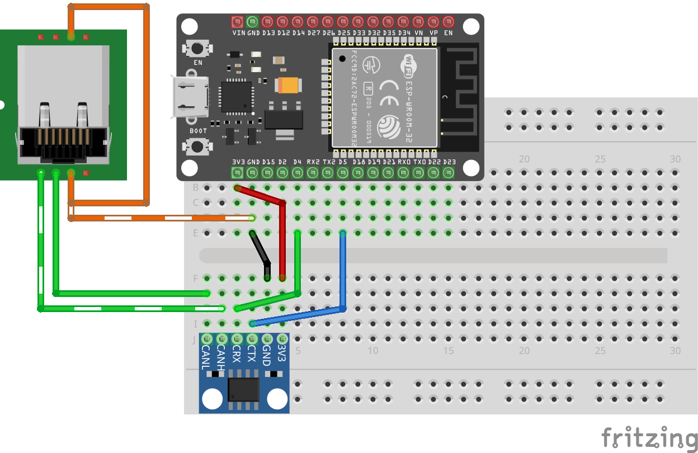
Note: This breadboard diagram shows the wiring for an SN65HVD230 breakout board (VCC to 3.3V rail). If you’re using an MCP2551, the only difference is that its VCC wire goes to ESP32 VIN instead of 3.3V; all other connections remain the same.
CAN Transceiver to RJ-45 Breakout (LCC Bus):
| CAN Transceiver | RJ-45 Breakout Pin | LCC Signal |
|---|---|---|
| CANL | Pin 1 | CANL |
| CANH | Pin 2 | CANH |
| GND | Pin 3 | CAN_GND |
| GND | Pin 6 | CAN_SHIELD |
Ground connection: For learning, you can rely on USB providing a common ground. For a production or multi-device setup, also connect the breakout’s GND to both the LCC bus GND (RJ-45 Pin 3) and CAN_SHIELD (RJ-45 Pin 6) via the same RJ-45 connector.
Bus Topology and Termination
The CAN bus is a linear topology (not a star). Devices are chained in a line, with termination at the physical ends:
graph LR
A["RR-CirKits LCC Power-Point<br/>(120Ω terminator added)"] -->|CANH, CANL| B["RR-CirKits LCC Buffer-USB"]
B -->|CANH, CANL| C["Your ESP32 Node<br/>(120Ω terminator added)"]
Critical: Terminating resistors go at the physical ends of the bus, not in the middle. You need exactly one 120Ω terminator at each end. Extra termination in the middle causes signal reflections and errors.
Which Transceiver Breakout Board to Choose?
| Breakout Board | Built-in Termination | Voltage | Best For |
|---|---|---|---|
| SN65HVD230 | Yes (built-in 120Ω) | 3.3V | Learning or prototyping |
| MCP2551 | Yes (built-in 120Ω) | 5V | Production; better signal quality and noise immunity |
Both breakout boards include a 120Ω termination resistor (the bare transceiver chips don’t have this). So you don’t need to add external resistors. The main difference is power supply and waveform quality—the MCP2551’s 5V operation produces much cleaner signals (as shown in the previous section) and is recommended for any permanent installation.
Important note for production: These breakout boards are designed for learning and simple setups. For a proper multi-node production installation, your node should not have a built-in termination resistor. Instead, use a design with dual RJ-45 jacks connected together (pass-through), allowing you to daisy-chain nodes along the bus. Place a single 120Ω terminator only at each physical end of the bus, not on intermediate nodes. This ensures clean signal integrity across the entire network.
Next: Let’s modify the code to use CAN instead of WiFi.
Code Changes: From WiFi to CAN
The good news: your OpenLCB application logic doesn’t change. The event production code, configuration, and SNIP data are all transport-independent. What changes is minimal—just how the node connects to the network.
Changes in Key Code Sections
Note for Arduino IDE and Arduino Maker Workshop users: If you’re following this guide using the Arduino IDE or Arduino Maker Workshop (which uses the Arduino CLI), the class names in these examples may differ. These tools can access newer Arduino Core versions that use different class names and namespacing. See the next section (“The Esp32HardwareTwai Class: Arduino Cores and the Name Change”) for details on what adjustments are needed for your environment.
Includes and Definitions (main.cpp)
#include <Arduino.h>
-#include <WiFi.h>
#include <SPIFFS.h>
#include <OpenMRNLite.h>
-#include "utils/GcTcpHub.hxx"
+#include "utils/GpioInitializer.hxx"
#include "config.h"
-// WiFi credentials - CHANGE THESE to match your network
-const char* ssid = "YourWiFiSSID";
-const char* password = "YourWiFiPassword";
// OpenLCB Node ID - must be unique on your network
static constexpr uint64_t NODE_ID = 0x050201020200ULL;
// Event IDs that will be alternated
static const uint64_t EVENT_ID_0 = 0x0502010202000000ULL;
static const uint64_t EVENT_ID_1 = 0x0502010202000001ULL;
+/// This is the ESP32 pin connected to the SN65HVD23x/MCP2551 R (RX) pin.
+constexpr gpio_num_t CAN_RX_PIN = GPIO_NUM_4;
+
+/// This is the ESP32 pin connected to the SN65HVD23x/MCP2551 D (TX) pin.
+constexpr gpio_num_t CAN_TX_PIN = GPIO_NUM_5;
+
// Create the OpenMRN stack object
OpenMRN openmrn(NODE_ID);
-// TCP Hub for JMRI connectivity
-GcTcpHub* tcp_hub = nullptr;
+Esp32HardwareTwai can_driver(CAN_RX_PIN, CAN_TX_PIN);
The setup() Function
void setup() {
init_serial();
init_filesystem();
- init_network();
+ can_driver.hw_init();
init_openlcb_stack();
- init_tcp_hub();
+ openmrn.add_can_port_select("/dev/twai/twai0");
Serial.println("OpenLCB node initialization complete!");
Serial.printf("Entering run mode - will alternate events every %lu ms\n", event_interval);
// Record start time for event production
last_event_time = millis();
}
Understanding the Changes
1. Removed WiFi Includes and Code
#include <WiFi.h>— no longer needed for network connectivity#include "utils/GcTcpHub.hxx"— no longer needed (no TCP Hub)- WiFi SSID/password variables — replaced by CAN GPIO pin definitions
- TCP Hub global variable — removed entirely
1.5 Removed Functions Entirely
Two complete functions are deleted:
init_network() — This entire function is removed:
void init_network() {
Serial.printf("\nConnecting to WiFi SSID: %s\n", ssid);
WiFi.begin(ssid, password);
while (WiFi.status() != WL_CONNECTED) {
delay(500);
Serial.print(".");
}
Serial.println("\nWiFi connected!");
Serial.printf("IP Address: %s\n", WiFi.localIP().toString().c_str());
}
init_tcp_hub() — This entire function is removed:
void init_tcp_hub() {
Serial.println("Starting TCP Hub on port 12021...");
tcp_hub = new GcTcpHub(openmrn.stack()->can_hub(), 12021);
Serial.println("TCP Hub listening. JMRI can connect to this device on port 12021");
}
Both are replaced by a single line in setup():
openmrn.add_can_port_select("/dev/twai/twai0");
2. Added CAN Transceiver Definition
The Esp32HardwareTwai class represents your CAN transceiver on the breadboard. It takes two GPIO pins (RX and TX) as parameters:
- GPIO_NUM_4 (RX) — receives CAN messages
- GPIO_NUM_5 (TX) — transmits CAN messages
3. Initialization Order
The key difference: can_driver.hw_init() initializes the ESP32’s TWAI hardware and sets up GPIO4/GPIO5 for CAN signaling. This must happen before starting the OpenMRN stack.
4. Port Registration
Instead of creating a TCP Hub for JMRI connectivity, you register the TWAI device as a CAN port:
add_can_port_select("/dev/twai/twai0")— registers the TWAI device"/dev/twai/twai0"— the filesystem device name for TWAI hardwareselectmeans the driver uses Unixselect()for efficient I/O
The OpenMRN stack reads/writes CAN messages through this device, routing them to and from your OpenLCB application.
Complete Updated setup() Function
Here’s the full, updated setup function:
void setup() {
init_serial();
init_filesystem();
// Initialize CAN transceiver hardware
can_driver.hw_init();
// Initialize OpenMRN stack and configuration
init_openlcb_stack();
// Register the TWAI CAN device as the network port
openmrn.add_can_port_select("/dev/twai/twai0");
Serial.println("OpenLCB node initialization complete!");
Serial.printf("Entering run mode - will alternate events every %lu ms\n", event_interval);
// Record start time for event production
last_event_time = millis();
}
What Stays the Same
The following parts of your code are unchanged:
- Event production logic in
loop()— still produces EVENT_ID_0 and EVENT_ID_1 - Configuration structure (config.h) — blink interval is now configurable via JMRI
- SNIP data (node name, description) — initialized on factory reset
- FactoryResetHelper — now also initializes default blink_interval (1000 ms)
- apply_configuration() — now reads the blink_interval from config when JMRI updates settings
- openmrn.loop() — still required in the main loop
Key Additions: Configuration Management
This CAN version adds runtime configuration for the blink interval:
- Global variable
event_interval— cached value read from configuration - FactoryResetHelper.apply_configuration() — now reads
cfg.seg().blink_interval()when configuration changes - FactoryResetHelper.factory_reset() — initializes default blink_interval to 1000 ms on first boot
- loop() function — uses the configurable
event_intervalinstead of a constant
This means users can change the blink speed through JMRI without recompiling the firmware.
The OpenLCB protocol stack is completely independent of the physical transport layer. This is excellent software architecture—change WiFi to CAN, and the node behaves identically.
Complete Working Code
The complete working code at this point is available on GitHub:
- PlatformIO version: code/platformio/chapter5/final/
- Arduino IDE version: code/arduino/chapter5/final/
You can download or clone the repository and open either version to get the exact code with CAN transport implemented.
Compiling and Uploading
The code is ready to compile and upload using the same method as Chapter 3: click Upload and Monitor in the PlatformIO project tasks.
When the upload completes and the device boots, you’ll see the same startup messages as before:
Node ID: 0x050201020200
Event 0: 0x0502010202000000
Event 1: 0x0502010202000001
Initializing SPIFFS...
SPIFFS initialized successfully
ESP-TWAI: Configuring TWAI (TX:5, RX:4, EXT-CLK:-1, BUS-CTRL:-1)
Creating CDI configuration descriptor...
ESP-TWAI: Starting TWAI watchdog and reporting task
[CDI] Checking /spiffs/cdi.xml...
[CDI] File /spiffs/cdi.xml appears up-to-date (len 1172 vs 1172)
[CDI] Registering CDI with stack...
Initializing OpenLCB configuration...
Starting OpenLCB stack...
Starting executor thread...
OpenLCB stack initialized successfully
ESP-TWAI: Starting TWAI driver on:twai0 mCode:3ffb41cc (non-blocking) fd:0
onfiguration updated: blink_interval = 2000 ms
OpenLCB node initialization complete!
Entering run mode - will alternate events every 2000 ms
Allocating new alias C41 for node 050201020200
Produced event: 0x0502010202000001 (state: 1)
Produced event: 0x0502010202000000 (state: 0)...
The node is now producing events on the CAN bus instead of the WiFi TCP Hub.
Next: Understand the Esp32HardwareTwai class and why it’s named that.
The Esp32HardwareTwai Class: Arduino Cores and the Name Change
When you look at different OpenMRNLite examples online, you might see both Esp32HardwareTwai and Esp32Can used for CAN on the ESP32. What’s the difference, and which one should you use? The answer depends on your Arduino core version and development environment.
Note: This chapter uses PlatformIO with Arduino Core v2.x. As mentioned in Chapter 2, at the time of writing (December 2025), newer Arduino core versions are not yet available in PlatformIO. The information below about Arduino Core v3 is primarily for readers using the Arduino IDE or Arduino Maker Workshop (which use the Arduino CLI and can access newer core versions).
Why the Class Name Changed
The Short Answer
Espressif (the company that makes the ESP32) changed the underlying driver naming between ESP-IDF v4.x and v5.x:
- ESP-IDF v4.x (used by Arduino Core v2): Driver was called TWAI (Two-Wire Automotive Interface)
- ESP-IDF v5.x (used by Arduino Core v3): Driver is now called CAN
OpenMRNLite updated its class names to match the Arduino core version:
- OpenMRNLite 2.0.x - 2.1.x (Arduino Core v2) →
Esp32HardwareTwai - OpenMRNLite 2.2.0+ (released August 2025, Arduino Core v3) →
Esp32Can
Important: OpenMRNLite v2.2.0 marked a significant shift—the v2.x line switched from Arduino Core v2 to Arduino Core v3. If you’re using an older version of OpenMRNLite (2.1.x or earlier), use Esp32HardwareTwai. If you’re on v2.2.0 or later, use Esp32Can.
It’s the same hardware, same functionality, but the class name and Arduino core changed.
Why Did Espressif Rename It?
Espressif originally named the ESP32’s CAN-like peripheral TWAI (Two-Wire Automotive Interface) because the hardware does not implement the full CAN 2.0 specification. The ESP32’s controller is a simplified CAN implementation with reduced filtering and feature support—it’s “CAN-compatible” but not fully CAN-compliant. Espressif chose the name TWAI to avoid implying full CAN compliance and to give themselves flexibility for future chips with different CAN-like peripherals.
As developers overwhelmingly referred to the peripheral as “CAN” and because it works reliably with standard CAN transceivers and protocols, OpenMRNLite (and other libraries) later adopted the more familiar Esp32Can naming. The hardware itself never changed—only the naming conventions evolved to match developer expectations.
What You’re Using Today
This chapter uses Arduino Core v2.x (as defined in your platformio.ini):
platform = espressif32@6.12.0 # This version uses Arduino Core v2
lib_deps = openmrn/OpenMRNLite@2.0.0
This means you use:
Esp32HardwareTwai can_driver(CAN_RX_PIN, CAN_TX_PIN);
can_driver.hw_init();
openmrn.add_can_port_select("/dev/twai/twai0");
If You’re Using Arduino IDE or Arduino Maker Workshop
If you’re using Arduino Core v3 through the Arduino IDE or Arduino Maker Workshop (instead of PlatformIO), the code changes are straightforward:
// Arduino Core v3 (Arduino IDE / Maker Workshop only)
Esp32Can can_driver(CAN_RX_PIN, CAN_TX_PIN); // Note: "Esp32Can", not "Esp32HardwareTwai"
can_driver.hw_init();
openmrn.add_can_port(&can_driver);
You’d also need to upgrade OpenMRNLite to v2.2.0 or later. The hardware and functionality remain identical—only the class name and library version change.
Key Takeaway: For PlatformIO users (this guide), use
Esp32HardwareTwaiwith Arduino Core v2.x. We won’t be upgrading in future chapters—PlatformIO v6.12.0 is stable and well-supported.For Arduino IDE users considering an upgrade: The changes are straightforward (class name, device path, library version), but you should only upgrade if you have a specific reason (newer board support, bug fixes, etc.). The current Arduino Core v2.x works reliably for OpenLCB CAN nodes.
Next: Configure JMRI to connect via CAN instead of WiFi.
Configuring JMRI for CAN: Using a CAN Bus Interface Module
In Chapter 3, JMRI connected to your ESP32 node via a TCP Hub on port 12021 (WiFi). Now that your node is on a CAN bus, JMRI needs a different path to reach it: through a CAN bus interface module (such as RR-CirKits LCC Buffer-USB, SPROG USB-LCC, PEAK PCAN-USB, or similar) connected to the same CAN bus.
Hardware Setup
Before configuring JMRI, make sure your physical setup is in place and looks something like the following:
graph LR
T["120Ω Terminator"] --> A["RR-CirKits<br/> LCC Power-Point<br/>(or SPROG POWER-LCC)"]
A --> B["RR-CirKits<br/> LCC Buffer-USB<br/>(or SPROG USB-LCC)"]
B --> C["Your ESP32 Node<br/>(120Ω terminator added)"]
B --> D["LccPro/JMRI<br/>(USB)"]
The interface module acts as a “gateway” that translates between the CAN bus and JMRI’s protocol. Examples include RR-CirKits LCC Buffer-USB, SPROG USB-LCC, PEAK PCAN-USB, or any other CAN interface compatible with JMRI. Note that 120Ω terminators are required at the physical ends of the CAN bus.
Disabling the WiFi Connection from Chapter 3
If you still have your Chapter 3 WiFi-based node running, you’ll want to disable or remove that JMRI connection:
In JMRI
- Preferences → Connections
- Find the connection entry for your “ESP32 LCC” connection from Chapter 3
- Check Disable this Connection to disable it (or delete it if you’re not going back)
- Click Save
This prevents JMRI from trying to connect to the old WiFi-based node, which won’t be responding anymore.
Adding the CAN Bus Interface Connection
Step 1: Physical Connection
- Connect your LCC Buffer-USB (or SPROG USB-LCC) to your computer via USB
- In Device Manager (Windows) or System Information (Mac/Linux), note which COM port or serial device the Buffer appears on
- Windows:
COM3,COM4, etc. - Linux:
/dev/ttyUSB0,/dev/ttyUSB1, etc. - Mac:
/dev/tty.usbserial-*
- Windows:
Step 2: Create a New JMRI Connection
- Edit → Preferences in LccPro
- Click Connections
- Click the + sign to the right to add a connection
- System manufacturer: Select “LCC”
- System connection: Select “CAN via LCC Buffer-USB”, “CAN via SPROG USB-LCC”, or the appropriate device name for your interface
- Serial port: Select the COM port where your interface appeared (from Step 1)
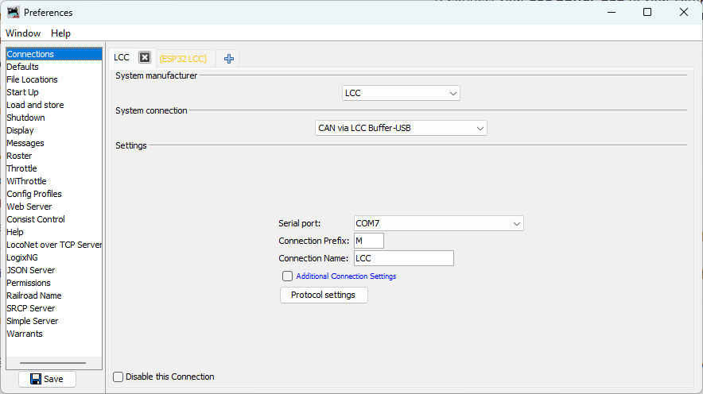
Step 3: Save and Restart
- Click Save
- LccPro will re-start
Verifying the Connection
Once configured and JMRI restarts with LccPro, you should see the node list appear automatically:
-
Look for your node: You should see your ESP32 node with ID
05.02.01.02.02.00listed in the main JMRI window -
Check traffic: Watch for activity in the Traffic Monitor window
- You should see LCC messages being received from your node
- Event traffic should be visible
-
Click on your node in the node list and its information will appear in the panel below:
- Node ID
- Manufacturer info (OpenMRN, model async_blink, etc.)
- SNIP data (name and description you set in configuration)
You can also monitor the serial output from your ESP32 (as shown in Chapter 3) to observe the periodic TWAI status messages:
ESP-TWAI: RX:0 (pending:0,overrun:0,discard:0,missed:0,lost:0) TX:16 (pending:16,suc:0,fail:16) Bus (arb-loss:0,err:14642,state:Running)
These messages show CAN bus health and activity. We’ll cover their interpretation in detail in the next section.
Network Architecture Comparison
You’ve now successfully switched from WiFi to CAN transport. The node looks identical to the WiFi version from Chapter 3—same Node ID (050201020200), same SNIP data, same event IDs (000000 and 000001)—because the application code hasn’t changed. Only the physical transport layer has changed from TCP to CAN.
Chapter 3: WiFi/TCP
graph LR
A["ESP32<br/>(WiFi)"] --> B["LccPro<br/>(TCP Hub)"]
Pros: Simple, single connection
Cons: Limited to one node per TCP Hub; WiFi reliability issues in noisy environments
Chapter 5: CAN
graph LR
A["ESP32 Node"] --> B["CAN Bus<br/>(CANH, CANL)"]
B --> C["LCC Buffer-USB"]
C --> D["LccPro"]
Pros: Multiple nodes on same bus; deterministic protocol; standard for OpenLCB
Cons: Requires CAN transceiver hardware and proper termination
Troubleshooting Connection Issues
No Nodes Appear
- Check USB cable: Make sure it’s properly connected and that you’re using a data cable (not power-only)
- Check LccPro connection: Verify the LCC connection is listed in Edit → Preferences… → Connections
- Check buffer activity: Look at the activity lights on the LCC Buffer-USB to see if there is LCC activity
- Check CAN bus: Verify your ESP32 node is powered and running (check serial monitor output)
- Reset the ESP32: If the network activity LEDs on the LCC Buffer are not flashing, push the reset button on your ESP32 to restart the node and reinitialize the CAN bus
Node Appears but No Properties
- The Buffer may not be seeing the node on the CAN bus yet
- Check your breadboard wiring: GPIO4/GPIO5 connected correctly? Power and ground?
- Verify CANH/CANL are properly connected between your node and the Buffer
- Try clicking on the node to refresh its information in the details panel
Node Disappears When You Upload New Code
This is normal—uploading resets the ESP32, which takes a moment to boot and re-initialize. Wait 5–10 seconds and the node should re-appear in LccPro. You can also click the Refresh button in LccPro to refresh the node list immediately.
Verification Checklist
If something doesn’t match the above:
- Node doesn’t appear in JMRI: Check Buffer-USB connection and JMRI configuration in this section
- High error count persists: Check breadboard GPIO/power connections and CAN bus termination (Section 6)
- Events not producing: Check serial monitor output; node should print “Produced event” every 2 seconds
- SNIP data missing or wrong: Check Chapter 4 configuration; factory reset if needed
- Configuration changes not persisting: Same as above; verify SPIFFS is working
Summary
Your CAN-based OpenLCB node is now complete and verified. You’ve successfully:
- ✅ Wired a CAN transceiver to your ESP32
- ✅ Modified the code to use TWAI instead of WiFi
- ✅ Configured JMRI to connect via RR-CirKits buffer
- ✅ Verified event production on the CAN bus
- ✅ Confirmed your node appears in JMRI with correct SNIP data
The hard part was the hardware wiring. The software transformation from WiFi to CAN was just a few lines of code. This demonstrates the power of good software architecture—your OpenLCB application is transport-independent, allowing you to swap physical layers without changing the business logic.
Next: The following section covers TWAI bus diagnostics and interpreting the status messages you see in the serial monitor. It’s optional—if you’re confident your CAN bus is working, feel free to skip ahead to the next chapter on using the ESP32’s I/O pins.
Next Chapter: Using the ESP32’s I/O
TWAI Bus Diagnostics and Troubleshooting
Skip this section? If you’re not interested in the details of ESP-TWAI message interpretation, you can jump to the next section for a quicker path forward.
As your ESP32 runs, it periodically prints TWAI status messages to the serial monitor. These messages tell you how the CAN bus is performing and help diagnose wiring or connection issues.
Understanding TWAI Status Output
A typical TWAI status line looks like this:
ESP-TWAI: RX:42 (pending:0,overrun:0,discard:0,missed:0,lost:0) TX:156 (pending:0,suc:156,fail:0) Bus (arb-loss:0,err:0,state:Running)
Let’s break this down into sections:
RX Statistics (Received Messages)
RX:42 (pending:0, overrun:0, discard:0, missed:0, lost:0)
- RX:42 — Total CAN messages successfully received so far
- pending — Messages waiting to be processed (should be 0 if keep up)
- overrun — Messages lost because the receiver buffer filled (bad if > 0; indicates you’re receiving faster than you can process)
- discard — Messages intentionally dropped (typically 0 for our use case)
- missed — CAN frames that arrived but were never read (indicates software latency)
- lost — Messages lost due to hardware buffer overflow (very bad; indicates severe timing issues)
Healthy RX: All zero or very low pending count, overrun and lost at 0.
TX Statistics (Transmitted Messages)
TX:156 (pending:0, suc:156, fail:0)
- TX:156 — Total CAN messages transmitted
- pending — Messages queued but not yet sent (should be 0 under normal conditions)
- suc:156 — Successfully transmitted frames (acknowledged by the bus)
- fail:0 — Frames that failed to transmit
Healthy TX: fail should be 0 (or very low). If fail is high, the bus is not responding to your transmissions.
Bus Status
Bus (arb-loss:0, err:0, state:Running)
- arb-loss — Arbitration losses (you tried to transmit but another node had priority). Normal and okay in multi-node networks.
- err — Bus errors (bad wiring, termination issues, electrical noise). Should be 0 or very low.
- state — CAN controller state:
Running— Healthy, actively on the busError-Active— Minor errors but still transmittingError-Passive— Many errors; not transmitting reliablyBus-Off— Fatal errors; controller shut down
Healthy state: Running with err:0.
Common Scenarios and Diagnostics
Scenario 1: Everything Looks Good
ESP-TWAI: RX:42 (pending:0,overrun:0,discard:0,missed:0,lost:0) TX:156 (pending:0,suc:156,fail:0) Bus (arb-loss:0,err:0,state:Running)
Meaning: Your CAN bus is working perfectly!
- ✅ Messages are being received and transmitted
- ✅ No errors or overflows
- ✅ Bus is in good health
Action: Proceed with JMRI configuration and network testing.
Scenario 2: High TX Fail Count, RX:0
ESP-TWAI: RX:0 (pending:0,overrun:0,discard:0,missed:0,lost:0) TX:16 (pending:16,suc:0,fail:16) Bus (arb-loss:0,err:14642,state:Running)
Meaning: You’re transmitting messages, but the bus isn’t responding. All transmissions are failing.
Likely causes:
- CAN transceiver not connected to the bus (CANH/CANL wires missing or loose)
- No device on the other end of the bus to acknowledge frames
- RR-CirKits modules not powered
- Wrong GPIO pins (though you’d see a different error earlier)
Diagnostics checklist:
- CANH and CANL physically connected to RR-CirKits Buffer?
- Buffer powered on and USB connected to computer?
- LCC Power-Point powered on (provides 12V to the bus)?
- Breadboard connections to GPIO4/GPIO5 solid?
- Terminating resistors in place (one 120Ω at each bus end)?
Fix: Verify your breadboard wiring and CAN bus connections step-by-step.
Scenario 3: Climbing Error Count, No TX Failure
ESP-TWAI: RX:0 (pending:0,overrun:0,discard:0,missed:0,lost:0) TX:42 (pending:0,suc:42,fail:0) Bus (arb-loss:0,err:1823,state:Running)
Meaning: You’re transmitting successfully, but the error count is rising rapidly.
Likely causes:
- Wiring issues (CANH/CANL shorted, loose connections, incorrect transceiver pins)
- Termination problem (missing one of the two 120Ω resistors, or double-terminated)
- Electrical noise interfering with the signal
- CAN signal not reaching the transceiver correctly
Diagnostics checklist:
- Are CANH and CANL shorted together anywhere?
- Is the 120Ω resistor between CANH and CANL (SN65HVD230 only)?
- Do you have exactly one 120Ω termination at each end of the bus? Not zero, not two per end.
- Are the CANH/CANL wires twisted together and away from power lines?
- Did you use the correct GPIO pins (4 for RX, 5 for TX)?
Quick test: Try temporarily removing any termination resistor you added and see if error count drops. If so, you likely have double-termination.
Scenario 4: RX Messages but TX Issues
ESP-TWAI: RX:128 (pending:0,overrun:0,discard:0,missed:0,lost:0) TX:8 (pending:4,suc:2,fail:2) Bus (arb-loss:2,err:0,state:Running)
Meaning: Your node is receiving messages fine, but transmissions are inconsistent.
Likely causes:
- CAN bus is congested (many devices transmitting)
- GPIO5 (TXD) connection is loose or poor quality
- Transceiver VCC or GND connection is marginal
Diagnostics checklist:
- GPIO5 jumper wire firmly inserted and not bent?
- Breadboard power (VCC/GND) clean and stable?
- Other nodes on the bus active? (If yes, arbitration is expected.)
Action: Check GPIO5 connection first; if that’s solid, it’s likely normal CAN bus contention.
Scenario 5: RX Overrun
ESP-TWAI: RX:512 (pending:42,overrun:18,discard:0,missed:0,lost:0) TX:0 (pending:0,suc:0,fail:0) Bus (arb-loss:0,err:0,state:Running)
Meaning: The RX buffer is filling faster than your software can process messages.
Likely causes:
- Another device is flooding the bus with messages
- Your node’s event processing is blocking too long
- CAN message rate is too high for the ESP32 to keep up
This is rare for typical LCC networks.
Action: Check if other nodes on the bus are producing excessive traffic. If not, review your application code for blocking operations in loop().
Quick Diagnostic Flowchart
graph TD
A[Start: Fresh serial monitor output] --> B{Is RX:0?}
B -->|Yes| C[Check: CANH/CANL connected to bus?]
C --> D[Power-Point on?]
D --> E[Likely: Transceiver not on bus yet]
B -->|No| F[RX messages received ✓]
F --> G{Is TX suc > 0?}
G -->|Yes| H[Transmissions working ✓]
H --> I{Is err count climbing fast?}
I -->|Yes| J[Check termination, wiring]
I -->|No| K[Everything looks healthy ✓]
G -->|No| L{TX fail > 0?}
L -->|Yes| M[Bus not responding<br/>Check Buffer/Power-Point]
L -->|No| N[No transmissions attempted yet<br/>Wait a moment]
A Note on Harmless High Error Counts
If your node is isolated (not connected to the RR-CirKits Buffer-USB yet), you might see high error counts. This is expected behavior:
- Your node tries to transmit
- No other device acknowledges the frame
- TWAI marks it as a bus error
- Error counter climbs
This is not a problem—it means your node is trying to communicate, and the hardware is working. Once you connect to the Buffer-USB (which will acknowledge frames), the error count will stabilize.
Next Chapter: Using the ESP32’s I/O
Physical I/O with GPIO
Now that you’ve successfully created a CAN-based OpenLCB node in Chapter 5, it’s time to add physical hardware interactions. But before we wire up buttons and LEDs, we’ll add a useful enable/disable toggle to control the async_blink event production. This serves two purposes: it reduces message clutter (both serial output and LCC traffic in JMRI/LccPro) when we’re focusing on GPIO events, and it demonstrates how to implement binary (on/off) configuration options in OpenMRNLite.
Chapter Structure
This chapter takes a strategic two-part approach:
Part 1: Configuration Evolution (No Additional Hardware)
Before adding GPIO pins, we’ll enhance the async_blink example with:
- A configurable enable/disable feature for event production to reduce message clutter (serial output and LCC traffic)
- Demonstrating binary (boolean) configuration values using mapped integers
You can complete Part 1 using the existing CAN setup from Chapter 5—no additional components needed.
This enhancement gives you control over the async_blink output and introduces an important configuration pattern you’ll use throughout your OpenLCB nodes.
Part 2: Adding Physical I/O (Additional Hardware Required)
Once the configuration foundation is solid, we’ll add real-world interactions:
- Connect pushbuttons to detect physical input
- Connect LEDs to provide visual output
- Implement OpenLCB producers and consumers tied to GPIO pins
- Scale to multiple inputs and outputs using efficient patterns
What You’ll Learn
By the end of this chapter, you’ll understand:
- Boolean configuration: Implementing enable/disable toggles in OpenMRNLite’s CDI system using mapped integers
- CDI caching behavior: Why you must restart JMRI/LccPro after firmware changes
- GPIO integration (Part 2): ConfiguredProducer, ConfiguredConsumer, and scaling patterns
Part 2: Additional Hardware Requirements
When you reach Part 2 (adding physical GPIO), you’ll need these additional components:
| Component | Quantity | Notes |
|---|---|---|
| Tactile pushbutton switches | 2 | Normally-open, momentary contact |
| LEDs | 2 | Any color; 5mm standard size recommended |
| 220Ω resistors | 2 | Current limiting for LEDs (5% tolerance, 1/4W) |
| Jumper wires | ~6 | Male-to-male (you already have these from Chapter 5) |
Note: You already have a breadboard and basic jumper wires from the CAN setup in Chapter 5.
Budget Estimate: $2-3 USD for the new components (or free if you have a basic electronics kit).
Where to Order
These components are available from Amazon, eBay, AliExpress, Adafruit, SparkFun, DigiKey, Mouser, or local hobby electronics stores.
What’s Next
Start with Configuration Evolution to add the enable/disable toggle and learn about binary configuration values.
Once you’ve added this feature, you’ll be ready to add physical I/O in the subsequent sections.
- Reduce noise by keeping jumper wires away from USB cable
Adding an Enable/Disable Toggle
Let’s add a “Blink Enabled” toggle to the async_blink example. This demonstrates an important OpenMRNLite pattern: binary configuration values using mapped integers.
Implementing Binary Configuration Values
Step 1: Add the Enable/Disable Feature
Let’s add a “Blink Enabled” toggle to control whether the async_blink node produces events. This will quiet down both the serial monitor and the JMRI/LccPro event monitor, making it easier to focus on GPIO events when we add them in the next section.
This also demonstrates an important OpenMRNLite pattern: binary configuration values using mapped integers. Since OpenMRNLite doesn’t have a dedicated boolean type, we’ll use a Uint8ConfigEntry with a MapValues attribute that maps 0→“Disabled” and 1→“Enabled” for user-friendly display in JMRI.
Note: Because we’re adding a new field to the configuration structure, we must increment CANONICAL_VERSION from 0x0002 to 0x0003. As covered in Chapter 4, this will trigger a factory reset when you first flash this version.
Updated config.h
We’ll add these changes to our CDI:
namespace openlcb {
// ... SNIP static/dynamic data unchanged ...
+/// Boolean map for Enabled/Disabled configuration values
+static constexpr const char *BOOLEAN_MAP =
+ "<relation><property>0</property><value>Disabled</value></relation>"
+ "<relation><property>1</property><value>Enabled</value></relation>";
+
/// Version number for the configuration structure
-static constexpr uint16_t CANONICAL_VERSION = 0x0002;
+static constexpr uint16_t CANONICAL_VERSION = 0x0003;
/// Minimal configuration segment with application settings
CDI_GROUP(AsyncBlinkSegment, Segment(MemoryConfigDefs::SPACE_CONFIG), Offset(128));
CDI_GROUP_ENTRY(internal_config, InternalConfigData);
+CDI_GROUP_ENTRY(blink_enabled, Uint8ConfigEntry,
+ Default(1),
+ Min(0), Max(1),
+ MapValues(BOOLEAN_MAP),
+ Name("Blink Enabled"),
+ Description("Enable or disable event production"));
CDI_GROUP_ENTRY(blink_interval, Uint16ConfigEntry,
Default(1000),
Min(100),
Max(30000),
Name("Blink Interval"),
Description("Milliseconds between alternating events (100-30000)"));
CDI_GROUP_END();
Key Points:
- Mapped integers for binary values: OpenMRNLite doesn’t have a dedicated boolean type, so we use
Uint8ConfigEntrywithMapValuesto create user-friendly “Enabled/Disabled” labels - The mapping:
0displays as “Disabled”,1displays as “Enabled” in JMRI CANONICAL_VERSIONincremented to0x0003(triggers factory reset as explained in Chapter 4)- JMRI will render this as a dropdown with “Enabled” and “Disabled” options instead of raw numbers
Updated main.cpp
Now we need to read and apply the new blink_enabled configuration:
// State variable to track which event to send
bool event_state = false;
-// Timing for event production - cached from configuration
+// Configuration variables - cached from configuration
+bool blink_enabled = true; // Default enabled, will be read from config in setup()
unsigned long last_event_time = 0;
unsigned long event_interval = 100; // Default, will be read from config in setup()
Update apply_configuration() to read both settings:
UpdateAction apply_configuration(int fd, bool initial_load,
BarrierNotifiable *done) OVERRIDE
{
AutoNotify n(done);
- // Read the blink interval from config file and update global variable
+ // Read configuration values from config file and update global variables
+ blink_enabled = cfg.seg().blink_enabled().read(fd);
event_interval = cfg.seg().blink_interval().read(fd);
- Serial.printf("Configuration updated: blink_interval = %lu ms\n", event_interval);
+ Serial.printf("Configuration updated: blink_enabled = %s, blink_interval = %lu ms\n",
+ blink_enabled ? "Enabled" : "Disabled", event_interval);
return UPDATED;
}
Update factory_reset() to initialize the new field:
void factory_reset(int fd) override
{
// Initialize SNIP dynamic data on first boot
cfg.userinfo().name().write(fd, openlcb::SNIP_NODE_NAME);
cfg.userinfo().description().write(fd, openlcb::SNIP_NODE_DESC);
// Initialize application settings with defaults
+ cfg.seg().blink_enabled().write(fd, 1); // Default enabled
cfg.seg().blink_interval().write(fd, 1000); // Default 1 second
- Serial.println("Factory reset: wrote default blink_interval = 1000 ms");
+ Serial.println("Factory reset: wrote defaults (blink_enabled=Enabled, blink_interval=1000 ms)");
}
Update loop() to check the enabled flag before producing events:
void loop() {
// CRITICAL: Must call openmrn.loop() frequently to process messages
openmrn.loop();
- // Check if it's time to produce an event
- // event_interval is read from config in setup() and updated in apply_configuration()
+ // Check if blinking is enabled and if it's time to produce an event
+ // blink_enabled and event_interval are read from config and updated in apply_configuration()
unsigned long current_time = millis();
- if (current_time - last_event_time >= event_interval) {
+ if (blink_enabled && current_time - last_event_time >= event_interval) {
// Alternate event state
event_state = !event_state;
// Send the event
// ... rest of event production code unchanged ...
}
}
Complete Working Code
The complete working code at this point is available on GitHub:
- PlatformIO version: code/platformio/chapter6/v1_toggle/
- Arduino IDE version: code/arduino/chapter6/v1_toggle/
You can download or clone the repository and open either version to get the exact code with the enable/disable toggle implemented.
Step 2: Test the Configuration
After building and uploading the firmware:
-
Observe the factory reset (due to version increment):
Factory reset: wrote defaults (blink_enabled=Enabled, blink_interval=1000 ms) -
Configure via JMRI/LccPro:
- Open the node’s configuration dialog
- You should see “Blink Enabled” with a dropdown showing “Enabled” / “Disabled”
- You should see “Blink Interval” with the existing 100-30000 ms range
-
Test the enable/disable feature:
- Set “Blink Enabled” to “Disabled”
- Click “Write” or “Save Changes” to write the new value to the node
- Important: Click “More…” then “Update Complete” to signal the node to apply changes
- Watch the serial console:
Configuration updated: blink_enabled = Disabled, ... - Both event production and serial output stop — notice how much quieter the output becomes
- Also check JMRI/LccPro’s Event Monitor — no more async_blink events cluttering the view
- Re-enable and verify events resume (remember to click “Update Complete” again)
Important: CDI Caching in JMRI/LccPro
⚠️ Critical Limitation: JMRI and LccPro aggressively cache CDI data. If you change your firmware’s CDI structure and reflash, you must restart JMRI/LccPro to see the updated configuration fields.
Why CDI is Cached
- CDI is expensive to fetch: It’s retrieved via streamed datagrams and can be tens of kilobytes
- Tools assume CDI is static: The LCC spec treats CDI as a description of the node that rarely changes
- No protocol for CDI change notification: There’s no way for a node to tell configuration tools “my CDI changed, please reload”
When CDI is Refreshed
Both JMRI and LccPro only reload CDI when:
- The tool is restarted
- The node is removed from the roster and re-added (JMRI only)
Tip: LccPro is faster to restart than JMRI, so many developers use it during rapid CDI iteration.
Memory Layout After Changes
Our configuration now looks like this:
| Offset | Field | Size | Purpose |
|---|---|---|---|
| 0-127 | ACDI User Data | 128 bytes | Node name, description |
| 128 | InternalConfigData | Variable | Version tracking, etc. |
| 129 | blink_enabled | 1 byte | Enable/disable event production |
| 130-131 | blink_interval | 2 bytes | Milliseconds between events |
| Total | ~132 bytes |
Key Takeaways
- Mapped integers for binary values: Use
Uint8ConfigEntrywithMapValuesto create user-friendly on/off toggles - Value mapping syntax:
<relation><property>VALUE</property><value>LABEL</value></relation> - Restart tools after CDI changes: JMRI/LccPro won’t auto-reload CDI
- Use meaningful labels: “Enabled/Disabled” is clearer than numeric values
- Practical benefit: The enable/disable toggle keeps message monitors clean when focusing on specific events
Next: Adding Physical I/O: Button and LED
Adding a Physical Button Input
Now that you have a configurable OpenLCB node with CAN transport, let’s add physical hardware interaction. We’ll start with a pushbutton input that produces OpenLCB events when pressed and released.
What You’ll Build
In this section, you’ll:
- Wire a pushbutton to GPIO 18
- Configure a
ConfiguredProducerto monitor the button state - Use
RefreshLoopfor efficient 33Hz polling with hardware debounce - See the button produce unique event IDs when pressed and released
- Configure the button’s behavior through JMRI/LccPro
Additional Hardware Required
For this section, you’ll need:
- 1× Tactile pushbutton switch (normally-open, momentary contact)
- Jumper wires (you already have these from Chapter 5)
Note: The ESP32 has internal pull-up resistors, so you don’t need external resistors for button inputs. We’ll use pull-up (rather than pull-down) configuration—see the “Active-Low vs Active-High” section below for why.
Hardware Setup
Breadboard Wiring
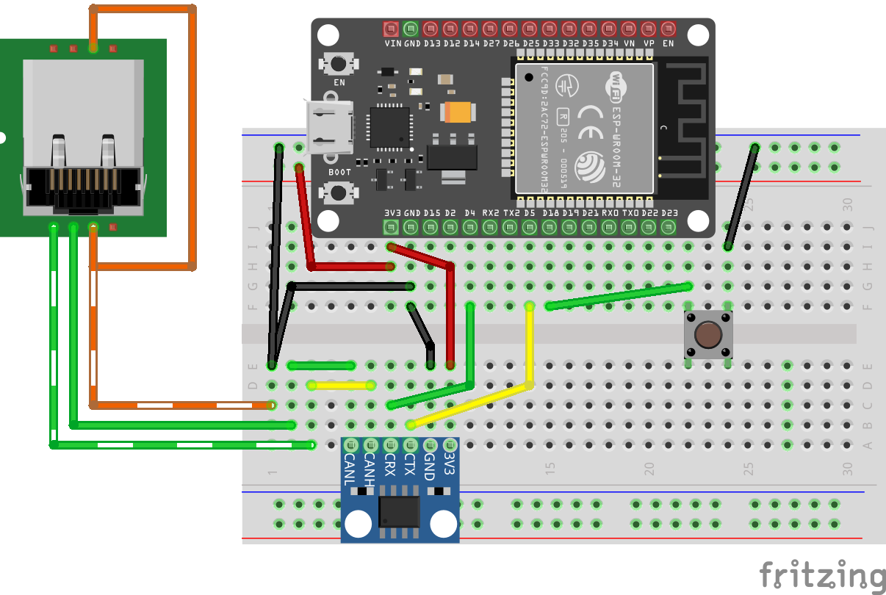
Figure: ESP32 with CAN transceiver and pushbutton on breadboard
Connect the button as follows:
- One side of button → GPIO 18
- Other side of button → GND
That’s it! The ESP32’s internal pull-up resistor will keep GPIO 18 HIGH when the button is not pressed.
How It Works
- Button released (unpressed): Internal pull-up resistor pulls GPIO 18 HIGH (3.3V) → produces “Event On”
- Button pressed: Direct connection to GND pulls GPIO 18 LOW (0V) → produces “Event Off”
This is called active-low logic: pressing the button creates the LOW state.
Note: This may seem reversed—you might expect pressing a button to produce “Event On” rather than “Event Off”. We’ll explain why we use this pull-up configuration (and why we don’t use pull-down to make it more intuitive) in the “Active-Low vs Active-High” section below.
Understanding the Code Changes
We’ll add three key components to make the button work:
1. GPIO Pin Definition (before OpenMRN stack initialization)
+// Define GPIO pin for button input (active-low with internal pull-up)
+// When button is pressed, pin reads LOW (0); when released, reads HIGH (1)
+GPIO_PIN(BUTTON, GpioInputPU, 18);
+
+// GPIO initializer - sets up all GPIO pins before OpenMRN stack starts
+typedef GpioInitializer<BUTTON_Pin> GpioInit;
Key points:
GpioInputPUenables the internal pull-up resistor (see “Active-Low vs Active-High” section for why we use pull-up)- The pin must be initialized before the OpenMRN stack starts
GpioInit::hw_init()will be called insetup()beforeopenmrn.begin()
2. Configuration in config.h
Add a ProducerConfig entry to the CDI segment:
CDI_GROUP_ENTRY(blink_interval, Uint16ConfigEntry,
Default(1000),
Min(100),
Max(30000),
Name("Blink Interval"),
Description("Milliseconds between alternating events (100-30000)"));
+CDI_GROUP_ENTRY(button, ProducerConfig,
+ Name("Button 1"),
+ Description("Physical button input on GPIO 18"));
CDI_GROUP_END();
This creates a configuration section for the button with:
- Description: User-editable label for this input
- Event On: Event ID produced when button is released (pin goes HIGH)
- Event Off: Event ID produced when button is pressed (pin goes LOW)
- Debounce: Number of polling cycles the input must remain stable
3. Producer and Refresh Loop
} factory_reset_helper;
+// Button producer - monitors GPIO 18 and produces events on state changes
+// Uses RefreshLoop for 33Hz polling (debounce handled by ConfiguredProducer)
+openlcb::ConfiguredProducer button_producer(
+ openmrn.stack()->node(), cfg.seg().button(), BUTTON_Pin());
+
+// RefreshLoop - polls button at 33Hz and handles debouncing
+openlcb::RefreshLoop button_refresh_loop(openmrn.stack()->node(),
+ {button_producer.polling()});
+
void init_serial() {
How it works:
RefreshLooppolls the button at 33Hz (~30ms per cycle)- Each poll calls
button_producer.polling()which:- Reads the current GPIO state
- Compares it to the previous state
- If different for
debounceconsecutive cycles → state change confirmed - Produces the appropriate event (On or Off)
4. Factory Reset Updates
Initialize the button configuration with default values:
void factory_reset(int fd) override
{
// Initialize SNIP dynamic data on first boot
// This data is displayed by JMRI in the node properties dialog
cfg.userinfo().name().write(fd, openlcb::SNIP_NODE_NAME);
cfg.userinfo().description().write(fd, openlcb::SNIP_NODE_DESC);
// Initialize application settings with defaults
cfg.seg().blink_enabled().write(fd, 1); // Default enabled
cfg.seg().blink_interval().write(fd, 1000); // Default 1 second
+ // Initialize button producer configuration
+ // Event IDs use NODE_ID base with unique offsets to avoid collision
+ cfg.seg().button().description().write(fd, "Button 1");
+ cfg.seg().button().event_on().write(fd, NODE_ID + 0x0100); // Released (HIGH)
+ cfg.seg().button().event_off().write(fd, NODE_ID + 0x0101); // Pressed (LOW)
+ CDI_FACTORY_RESET(cfg.seg().button().debounce); // Default: 3 (90ms at 33Hz)
+
Serial.println("Factory reset: wrote defaults (blink_enabled=Enabled, blink_interval=1000 ms)");
+ Serial.printf("Button events: ON=0x%016llX, OFF=0x%016llX\n",
+ NODE_ID + 0x0100, NODE_ID + 0x0101);
}
Event ID strategy:
- Base all event IDs on
NODE_IDto ensure uniqueness
We use offset +0x0100 for button ON (released) and +0x0101 for button OFF (pressed). The higher offset provides visual separation from async_blink events and makes button events easy to identify in event IDs. This is just one approach—use whatever offset scheme works for your node.
5. Setup() Initialization
Add GPIO initialization before starting the OpenMRN stack:
void setup() {
init_serial();
init_filesystem();
+ // Initialize GPIO pins before OpenMRN stack starts
+ // This ensures pins are in known state before producers/consumers access them
+ GpioInit::hw_init();
+ Serial.println("GPIO initialized: Button on GPIO 18 (active-low with pull-up)");
+
can_driver.hw_init();
init_openlcb_stack();
openmrn.add_can_port_select("/dev/twai/twai0");
Critical: GPIO must be initialized before openmrn.begin() so the producer has a valid pin state to read.
Complete Working Code
The complete working code at this point is available on GitHub:
- PlatformIO version: code/platformio/chapter6/v2_button/
- Arduino IDE version: code/arduino/chapter6/v2_button/
You can download or clone the repository and open either version to get the exact code with the button input implemented.
Building and Flashing
Update CANONICAL_VERSION
Since we’re adding a new configuration field, increment the version number in config.h:
/// Version number for the configuration structure
-static constexpr uint16_t CANONICAL_VERSION = 0x0003;
+static constexpr uint16_t CANONICAL_VERSION = 0x0004;
This triggers a factory reset on first boot, initializing the new button configuration.
Build, Flash, and Monitor
Use PlatformIO’s “Upload and Monitor” task:
- Click the PlatformIO icon in the left sidebar
- Expand async_blink_esp32 → esp32doit-devkit-v1 → General
- Click Upload and Monitor
Expected Serial Output
=== OpenLCB async_blink ESP32 Example ===
Node ID: 0x050201020200
Event 0: 0x0502010202000000
Event 1: 0x0502010202000001
Initializing SPIFFS...
SPIFFS initialized successfully
GPIO initialized: Button on GPIO 18 (active-low with pull-up)
ESP-TWAI: Configuring TWAI (TX:5, RX:4, EXT-CLK:-1, BUS-CTRL:-1)
Creating CDI configuration descriptor...
[CDI] Checking /spiffs/cdi.xml...
[CDI] File /spiffs/cdi.xml is not up-to-date
[CDI] Updating /spiffs/cdi.xml (len 2509)
[CDI] Registering CDI with stack...
Initializing OpenLCB configuration...
Factory reset: wrote defaults (blink_enabled=Enabled, blink_interval=1000 ms)
Button events: ON=0x0000050201020300, OFF=0x0000050201020301
Starting OpenLCB stack...
Starting executor thread...
OpenLCB stack initialized successfully
ESP-TWAI: Starting TWAI driver on:twai0 mode:3ffb42a8 (non-blocking) fd:0
OpenLCB node initialization complete!
Configuration updated: blink_enabled = Enabled, blink_interval = 1000 ms
Entering run mode - will alternate events every 1000 ms
Allocating new alias C41 for node 050201020200
Key observations:
- Factory reset detected (triggered by
CANONICAL_VERSIONchange) - Button events calculated:
- ON (released):
0x0000050201020300(NODE_ID + 0x0100) - OFF (pressed):
0x0000050201020301(NODE_ID + 0x0101)
- ON (released):
- Node acquires alias
C41on the CAN bus
Testing the Button
Monitoring Events in LccPro
Open the Traffic Monitor to see button events in real-time:
- In LccPro, click the Traffic Monitor button
- Press and release the button:
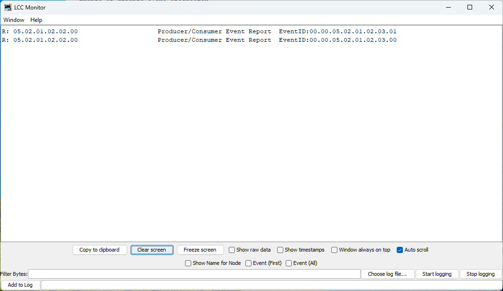
Figure: Button produces two distinct events - one for press, one for release
What you see:
Each button press/release cycle produces two events:
- Button pressed:
Produce Event: 00.00.05.02.01.02.03.01(Event Off) - Button released:
Produce Event: 00.00.05.02.01.02.03.00(Event On)
Note the naming:
- “Event On” occurs when GPIO goes HIGH (button released)
- “Event Off” occurs when GPIO goes LOW (button pressed)
This naming can be counterintuitive at first, but it’s consistent with the electrical state of the GPIO pin, not the physical button action. We’ll explain why later.
Viewing Button Configuration (Requires Restart)
Important: To view the updated button configuration in LccPro, you must restart the application to clear its cached CDI. The cache persists even if you refresh or close/reopen the Configure dialog.
After restarting, open the Configure dialog for your node:
- In LccPro, find your node:
async_blink - ESP32 Blink demo (05.02.01.02.02.00) - Right-click → Configure
- Scroll down to the Button 1 section
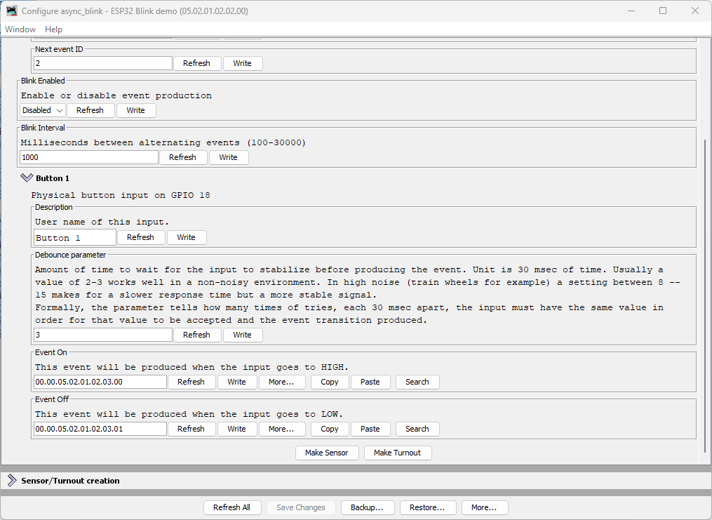
Figure: LccPro Configure dialog showing Button 1 configuration
What you see:
| Field | Default Value | Description |
|---|---|---|
| Description | Button 1 | User-editable name for this input |
| Debounce parameter | 3 | Number of 30ms cycles (90ms total) before state change confirmed |
| Event On | 00.00.05.02.01.02.03.00 | Produced when button is released (GPIO HIGH) |
| Event Off | 00.00.05.02.01.02.03.01 | Produced when button is pressed (GPIO LOW) |
Understanding Debounce
The debounce parameter controls how many consecutive polling cycles the input must remain stable before the event is produced. At 33Hz polling:
- Debounce = 3 (default): 3 cycles × 30ms = 90ms stabilization time
- Debounce = 2: 2 cycles × 30ms = 60ms (faster but less noise-immune)
- Debounce = 8: 8 cycles × 30ms = 240ms (very stable, good for noisy environments)
Typical values:
- 2-3: Good for clean pushbuttons in quiet environments
- 8-15: Recommended for train layouts with electrical noise from motors
Node Event IDs
Our node now produces multiple event IDs:
| Event | Offset | Full Event ID | Purpose |
|---|---|---|---|
| Async Blink 0 | +0x00 | 05.02.01.02.02.00.00.00 | Alternating event (state 0) |
| Async Blink 1 | +0x01 | 05.02.01.02.02.00.00.01 | Alternating event (state 1) |
| Button 1 ON | +0x0100 | 00.00.05.02.01.02.03.00 | Button released (HIGH) |
| Button 1 OFF | +0x0101 | 00.00.05.02.01.02.03.01 | Button pressed (LOW) |
Understanding Active-Low vs Active-High
The button in this example uses active-low logic:
- Physical button released → GPIO pin HIGH (3.3V via pull-up) → “Event On”
- Physical button pressed → GPIO pin LOW (0V to GND) → “Event Off”
Why Not Active-High (Pull-Down)?
You might reasonably ask: wouldn’t it be more intuitive if pressing the button produced “Event On” instead of “Event Off”? With active-high logic using a pull-down resistor, you could wire the button to 3.3V instead of GND:
- Physical button released → GPIO pin LOW (0V via pull-down) → “Event Off”
- Physical button pressed → GPIO pin HIGH (3.3V) → “Event On”
This would align the physical action (pressing) with the logical “On” state. And the ESP32 does have internal pull-down resistors (GpioInputPD) that would make this possible.
The OpenMRN/OpenMRNLite Bug
Unfortunately (as of December 2025), there’s a bug in OpenMRN’s ESP32 GPIO implementation that prevents using pull-down resistors on most pins. In the file Esp32Gpio.hxx, there’s a static assertion to prevent enabling pull-down on GPIO pins 0, 5, and 15 (which have hardware pull-ups on most ESP32 boards):
// GPIO 0, 5 and 15 typically have pull-up resistors.
static_assert(!PDEN ||
(PDEN && (PIN_NUM != 0 && PIN_NUM != 5 && PIN_NUM == 15)),
// ^^
// BUG: Should be != 15, not == 15
"GPIO 0, 5, 15 typically have built-in pull-up resistors, "
"enabling pull-down is not possible.");
The bug: The condition says PIN_NUM == 15 when it should say PIN_NUM != 15. This reversed logic means:
- Intended: Block pull-down on pins 0, 5, and 15
- Actual: Block pull-down on all pins except 15
When you try to use GpioInputPD on GPIO 18, you get a compile error:
error: static assertion failed: GPIO 0, 5, 15 typically have built-in
pull-up resistors, enabling pull-down is not possible.
This bug exists in both OpenMRNLite (the Arduino library) and the current master branch of OpenMRN (as of December 2025).
Why Use Pull-Up Anyway?
Even without the bug, active-low with pull-up is the standard pattern for pushbuttons in embedded systems:
- Noise immunity: Pull-up resistor provides a defined HIGH state when the button is open (not pressed)
- Simplicity: Button connects GPIO directly to GND—no need to route 3.3V to the button
- Safety: If a wire comes loose, the pin floats HIGH (safe idle state) rather than floating LOW
- Industry convention: Most schematics and examples use active-low buttons
So while the inverted logic (pressed = “off”) feels backwards at first, it’s actually the preferred approach independent of the OpenMRN bug.
Bottom line: We use GpioInputPU (pull-up) both because of the bug and because it’s best practice for button inputs.
Common Issues and Troubleshooting
Button events not appearing in JMRI/LccPro
Symptom: Traffic Monitor shows async_blink events but no button events.
Fixes:
- Verify wiring: One button pin to GPIO 18, other to GND
- Check CDI cache: Did you restart JMRI/LccPro after flashing?
- Test serial output: Does it show “GPIO initialized: Button on GPIO 18”?
- Verify factory reset: Check for “Button events: ON=…” in serial output
Button produces events continuously or erratically
Symptom: Traffic Monitor floods with button events without touching the button.
Possible causes:
- Loose connection: Check breadboard contacts and jumper wires
- Wrong pull-up/pull-down: Ensure you used
GpioInputPU(pull-up), notGpioInputPD - Electrical noise: Try increasing debounce from 3 to 8 or higher
- Floating pin: Verify GND connection is solid
Wrong event IDs in JMRI
Symptom: Button events show different IDs than expected.
Fixes:
- Factory reset required: Delete
/spiffs/openlcb_configand/spiffs/cdi.xml, then reboot - Node ID mismatch: Verify
NODE_IDin code matches what JMRI shows - Manual configuration: Someone may have changed Event On/Off in JMRI - restore defaults
What’s Next
You’ve successfully added a physical input to your OpenLCB node! The button can now:
- ✅ Produce unique events when pressed and released
- ✅ Be configured through JMRI/LccPro (description, debounce, event IDs)
- ✅ Operate reliably with hardware debouncing
In the next section, we’ll add LED outputs using ConfiguredConsumer so your node can respond to events from other nodes on the network—creating true two-way communication.
Complete Code Files
For reference, here are the complete updated files:
config.h (excerpt - button section)
/// Version number for the configuration structure
-/// NOTE: Incremented to 0x0003 when adding blink_enabled and reserved space
-static constexpr uint16_t CANONICAL_VERSION = 0x0003;
+/// NOTE: Incremented to 0x0004 when adding button configuration
+static constexpr uint16_t CANONICAL_VERSION = 0x0004;
/// Minimal configuration segment with application settings
CDI_GROUP(AsyncBlinkSegment, Segment(MemoryConfigDefs::SPACE_CONFIG), Offset(128));
CDI_GROUP_ENTRY(internal_config, InternalConfigData);
CDI_GROUP_ENTRY(blink_enabled, Uint8ConfigEntry,
Default(1),
Min(0), Max(1),
MapValues(BOOLEAN_MAP),
Name("Blink Enabled"),
Description("Enable or disable event production"));
CDI_GROUP_ENTRY(blink_interval, Uint16ConfigEntry,
Default(1000),
Min(100),
Max(30000),
Name("Blink Interval"),
Description("Milliseconds between alternating events (100-30000)"));
+CDI_GROUP_ENTRY(button, ProducerConfig,
+ Name("Button 1"),
+ Description("Physical button input on GPIO 18"));
CDI_GROUP_END();
main.cpp (key additions)
// ConfigDef comes from config.h and defines the configuration layout
static constexpr openlcb::ConfigDef cfg(0);
+// Define GPIO pin for button input (active-low with internal pull-up)
+// When button is pressed, pin reads LOW (0); when released, reads HIGH (1)
+GPIO_PIN(BUTTON, GpioInputPU, 18);
+
+// GPIO initializer - sets up all GPIO pins before OpenMRN stack starts
+typedef GpioInitializer<BUTTON_Pin> GpioInit;
+
// OpenLCB configuration - required by OpenMRNLite
namespace openlcb {
...
} factory_reset_helper;
+// Button producer - monitors GPIO 18 and produces events on state changes
+openlcb::ConfiguredProducer button_producer(
+ openmrn.stack()->node(), cfg.seg().button(), BUTTON_Pin());
+
+// RefreshLoop - polls button at 33Hz and handles debouncing
+openlcb::RefreshLoop button_refresh_loop(openmrn.stack()->node(),
+ {button_producer.polling()});
+
void init_serial() {
...
cfg.seg().blink_enabled().write(fd, 1); // Default enabled
cfg.seg().blink_interval().write(fd, 1000); // Default 1 second
+ // Initialize button producer configuration
+ cfg.seg().button().description().write(fd, "Button 1");
+ cfg.seg().button().event_on().write(fd, NODE_ID + 0x0100);
+ cfg.seg().button().event_off().write(fd, NODE_ID + 0x0101);
+ CDI_FACTORY_RESET(cfg.seg().button().debounce);
+ Serial.printf("Button events: ON=0x%016llX, OFF=0x%016llX\n",
+ NODE_ID + 0x0100, NODE_ID + 0x0101);
+
Serial.println("Factory reset: wrote defaults...");
...
void setup() {
init_serial();
init_filesystem();
+ GpioInit::hw_init();
+ Serial.println("GPIO initialized: Button on GPIO 18 (active-low with pull-up)");
+
can_driver.hw_init();
init_openlcb_stack();
Adding an LED Output
Now that you have a working button input that produces events, let’s add an LED output that consumes events. This demonstrates the core producer/consumer model of OpenLCB: producers send events, consumers respond to them.
What You’ll Build
In this section, you’ll:
- Wire an LED to GPIO 19
- Configure a
ConfiguredConsumerto control the LED based on events - Test the LED manually using LccPro’s Send Frame feature
- Link the button’s events to the LED’s actions, creating an interactive button-LED pair
Additional Hardware Required
For this section, you’ll need:
- 1× LED (any color, standard 5mm or 3mm)
- 1× Current-limiting resistor (220Ω to 1kΩ recommended)
- Jumper wires (you already have these)
Resistor value guide:
- 220Ω: Brighter LED, safe for most 20mA LEDs
- 470Ω: Medium brightness, good general-purpose value
- 1kΩ: Dimmer but very safe, good for high-efficiency LEDs
Hardware Setup
Breadboard Wiring
 Figure: ESP32 with CAN transceiver, button, and LED on breadboard
Figure: ESP32 with CAN transceiver, button, and LED on breadboard
Connect the LED as follows:
- Power supply → LED anode (+, longer leg)
- LED cathode (-, shorter leg) → Resistor → GPIO 19
Important: Always use a current-limiting resistor with LEDs. Without it, the LED will draw excessive current and may damage the ESP32’s GPIO pin or the LED itself.
Note on Architecture: In this design, the ESP32 is not providing the power to light the LED. The external power supply provides the LED current, and the ESP32’s GPIO pin controls whether the LED is on or off. The GPIO actively drives both HIGH (LED off) and LOW (LED on), which is safe because the circuit topology (LED cathode connected to GPIO) means driving HIGH produces no current through the LED.
How It Works
This is an active-low configuration:
- GPIO 19 LOW (0V) → Current flows from external power through resistor and LED → LED on
- GPIO 19 HIGH (3.3V) → No current flow through LED → LED off
We use GpioOutputSafeHigh which means:
- During initialization (boot/startup): GPIO 19 is actively driven HIGH, keeping the LED off until the OpenMRN stack fully initializes
- During operation: OpenMRN controls the pin to turn the LED on (by driving LOW) or off (by driving HIGH) based on events
The GpioOutputSafeHigh initialization ensures the LED is safely off during startup, which is important when the external power source for the LED circuit is independent of the ESP32. This matches the button’s active-low logic: pulling the pin LOW activates the device.
Understanding the Code Changes
We’ll add three components to make the LED work:
1. GPIO Pin Definition
// Define GPIO pin for button input (active-low with internal pull-up)
// When button is pressed, pin reads LOW (0); when released, reads HIGH (1)
GPIO_PIN(BUTTON, GpioInputPU, 18);
+// Define GPIO pin for LED output (active-low)
+// When event ON received, LED turns on (LOW); when event OFF received, LED turns off (HIGH)
+GPIO_PIN(LED, GpioOutputSafeHigh, 19);
+
// GPIO initializer - sets up all GPIO pins before OpenMRN stack starts
-typedef GpioInitializer<BUTTON_Pin> GpioInit;
+typedef GpioInitializer<BUTTON_Pin, LED_Pin> GpioInit;
Key points:
GpioOutputSafeHighinitializes the pin as HIGH during startup, safely keeping the LED off until OpenMRN is ready- The LED uses active-low logic (pulling LOW turns the LED on) with
GpioOutputSafeHighfor safe initialization - The LED pin is added to the
GpioInitializerlist - OpenMRNLite will manage the LED state—we don’t manually control it
2. Configuration in config.h
Add ConfiguredConsumer include and a ConsumerConfig entry:
#include "openlcb/ConfigRepresentation.hxx"
#include "openlcb/ConfiguredProducer.hxx"
+#include "openlcb/ConfiguredConsumer.hxx"
#include "openlcb/MemoryConfig.hxx"
/// Version number for the configuration structure
-static constexpr uint16_t CANONICAL_VERSION = 0x0004;
+static constexpr uint16_t CANONICAL_VERSION = 0x0005;
CDI_GROUP_ENTRY(button, ProducerConfig,
Name("Button 1"),
Description("Physical button input on GPIO 18"));
+CDI_GROUP_ENTRY(led, ConsumerConfig,
+ Name("LED 1"),
+ Description("LED output on GPIO 19"));
CDI_GROUP_END();
This creates a configuration section for the LED with:
- Description: User-editable label for this output
- Event On: Event ID that turns the LED on
- Event Off: Event ID that turns the LED off
3. Consumer Instance
// Button producer - monitors GPIO 18 and produces events on state changes
// Uses RefreshLoop for 33Hz polling (debounce handled by ConfiguredProducer)
openlcb::ConfiguredProducer button_producer(
openmrn.stack()->node(), cfg.seg().button(), BUTTON_Pin());
+// LED consumer - listens for events and controls GPIO 19
+openlcb::ConfiguredConsumer led_consumer(
+ openmrn.stack()->node(), cfg.seg().led(), LED_Pin());
+
// RefreshLoop - polls button at 33Hz and handles debouncing
openlcb::RefreshLoop button_refresh_loop(openmrn.stack()->node(),
{button_producer.polling()});
How it works:
ConfiguredConsumerautomatically registers with the OpenMRN event system- When any node on the network produces a matching event:
- OpenMRN routes the event to the consumer
- Consumer compares event ID to configured ON/OFF events
- If match found → sets GPIO pin to appropriate state
- No polling required—event-driven design
4. Factory Reset Updates
Initialize the LED configuration with default values:
// Initialize button producer configuration
// Event IDs use NODE_ID base with unique offsets to avoid collision
cfg.seg().button().description().write(fd, "Button 1");
cfg.seg().button().event_on().write(fd, NODE_ID + 0x0100); // Released (HIGH)
cfg.seg().button().event_off().write(fd, NODE_ID + 0x0101); // Pressed (LOW)
CDI_FACTORY_RESET(cfg.seg().button().debounce); // Default: 3 (90ms at 33Hz)
+ // Initialize LED consumer configuration
+ cfg.seg().led().description().write(fd, "LED 1");
+ cfg.seg().led().event_on().write(fd, NODE_ID + 0x0200); // Turn LED on
+ cfg.seg().led().event_off().write(fd, NODE_ID + 0x0201); // Turn LED off
+
Serial.println("Factory reset: wrote defaults (blink_enabled=Enabled, blink_interval=1000 ms)");
Serial.printf("Button events: ON=0x%016llX, OFF=0x%016llX\n",
NODE_ID + 0x0100, NODE_ID + 0x0101);
+ Serial.printf("LED events: ON=0x%016llX, OFF=0x%016llX\n",
+ NODE_ID + 0x0200, NODE_ID + 0x0201);
}
Event ID strategy:
- LED uses offset
+0x0200and+0x0201to keep it distinct from button events (+0x0100/+0x0101) - This makes it easy to identify which events control which I/O when looking at traffic
Complete Working Code
The complete working code at this point is available on GitHub:
- PlatformIO version: code/platformio/chapter6/final/
- Arduino IDE version: code/arduino/chapter6/final/
You can download or clone the repository and open either version to get the exact code with both button input and LED output implemented.
Building and Flashing
Update CANONICAL_VERSION
We’ve already incremented the version to 0x0005 in the code above. This triggers a factory reset on first boot, initializing the LED configuration.
Build, Flash, and Monitor
Use PlatformIO’s Upload and Monitor task as before.
Expected Serial Output
=== OpenLCB async_blink ESP32 Example ===
Node ID: 0x050201020200
Event 0: 0x0502010202000000
Event 1: 0x0502010202000001
Initializing SPIFFS...
SPIFFS initialized successfully
GPIO initialized: Button on GPIO 18 (active-low with pull-up), LED on GPIO 19 (active-high)
ESP-TWAI: Configuring TWAI (TX:5, RX:4, EXT-CLK:-1, BUS-CTRL:-1)
Creating CDI configuration descriptor...
[CDI] Updating /spiffs/cdi.xml (len 2748)
Initializing OpenLCB configuration...
Factory reset: wrote defaults (blink_enabled=Enabled, blink_interval=1000 ms)
Button events: ON=0x0000050201020300, OFF=0x0000050201020301
LED events: ON=0x0000050201020400, OFF=0x0000050201020401
Starting OpenLCB stack...
OpenLCB node initialization complete!
Key observations:
- Factory reset detected (version changed from 0x0004 to 0x0005)
- LED events initialized:
- ON:
0x0000050201020400(NODE_ID + 0x0200) - OFF:
0x0000050201020401(NODE_ID + 0x0201)
- ON:
Testing the LED
We’ll test the LED in two ways:
- Manual testing with LccPro’s Send Frame feature (verifies the LED consumer works)
- Configuration to link the button’s events to the LED’s actions (creates interactive behavior)
Method 1: Manual Testing with Send Frame
This procedure uses LccPro to send events manually, confirming your LED responds correctly before linking it to the button.
Steps
-
Open JMRI and launch LccPro
-
In the menu bar, choose LCC → Send Frame

Figure: LccPro Send Frame dialog
-
Locate the section titled Send OpenLCB event message with eventID
-
In the eventID field, enter your LED’s ON event in dot-separated hex format:
00.00.05.02.01.02.04.00 -
In the Status dropdown, select Valid
- “Valid” means “this event is being produced/asserted by a producer”
-
Click the button labeled Send Event Produced
What happens:
- LccPro broadcasts a Producer/Consumer Event Report with your event ID
- Your node’s LED consumer receives it
- LED turns on
- Now test the OFF event. Enter:
00.00.05.02.01.02.04.01 - Status: Valid → Click Send Event Produced
- LED turns off
Success criteria:
- ✅ LED turns on when you send the ON event
- ✅ LED turns off when you send the OFF event
- ✅ LED responds immediately (within ~100ms)
If the LED doesn’t respond, check:
- Wiring (resistor, LED polarity)
- Event IDs match exactly (check serial output for actual values)
- Node is online (visible in LccPro node list)
Method 2: Linking Button to LED
Once you’ve confirmed the LED responds to events, you can configure it to respond to your button’s producer events. This creates true interactive behavior: press the button, LED changes state.
Because both the button and LED are part of the same node, you can wire them together entirely inside that node’s Configure dialog by copying the button’s producer event IDs and pasting them into the LED’s consumer event fields.
Steps
-
In LccPro, click the Configure button for your node in the node list

Figure: Node Configure dialog showing Button 1 and LED 1 sections
What you see:
- Button 1 section with Event On and Event Off fields (each has a Copy button)
- LED 1 section with Event On and Event Off fields (each has a Paste button)
Understanding Button Event Naming
The button’s event naming refers to the electrical state of the GPIO pin, not the physical button action:
- Event On: Produced when GPIO goes HIGH (button released)
- Event Off: Produced when GPIO goes LOW (button pressed)
This is due to the active-low pull-up wiring we used in the button section.
Connecting Button to LED (Pressed = LED On)
To make pressing the button turn the LED on, we need to map:
- Button’s “Event Off” (pressed) → LED’s “Event On” (turn on)
- Button’s “Event On” (released) → LED’s “Event Off” (turn off)
Steps:
-
In the Button 1 section, click Copy next to the Event Off field
- This copies the button’s “pressed” event ID to the clipboard
-
In the LED 1 section, click Paste next to the LED’s Event On field
- This tells the LED to turn on when the button is pressed
-
Return to the Button 1 section, click Copy next to the Event On field
- This copies the button’s “released” event ID
-
In the LED 1 section, click Paste next to the LED’s Event Off field
- This tells the LED to turn off when the button is released
-
Click Write next to each changed field (or use Save Changes at the bottom)
What This Mapping Does
You’ve just configured:
- Button pressed (produces Event Off
...03.01) → LED turns on - Button released (produces Event On
...03.00) → LED turns off
This creates momentary button behavior with the expected physical action: pressing the button turns on the LED.
Testing Interactive Behavior
- Press the button → LED turns on
- Release the button → LED turns off
Experimenting Further
Now that you understand the basics, try these exercises to deepen your understanding:
Restore Original Event IDs: If you want to restore the LED’s original event IDs (without reflashing firmware), click the More… button in the Configure dialog and select Factory Reset. This will restore all configuration values to their defaults, including the LED’s event IDs.
Try Different Event Sources: Instead of mapping the button to the LED, try mapping the async_blink events to control the LED. These events are hardcoded in the firmware (not configurable via JMRI):
- Async Blink Event 0:
05.02.01.02.02.00.00.00 - Async Blink Event 1:
05.02.01.02.02.00.00.01
You can map them to the LED:
- Copy Event 0 to LED’s Event Off
- Copy Event 1 to LED’s Event On
- The LED will now blink in sync with the alternating events (if blink is enabled)
This demonstrates that consumers can respond to any producer on the network—the LED doesn’t “know” or “care” whether events come from a button, a timer, or another node entirely.
Why Copy/Paste Instead of Automatic Linking?
You might wonder why OpenLCB requires manually copying event IDs rather than just selecting “connect to Button 1.” This is because:
- Event IDs are the fundamental unit of OpenLCB—all communication is event-based
- Flexibility: Your LED could respond to events from any producer on the network, not just your local button
- Multiple consumers: One button can control many LEDs, servos, relays, etc.
- Cross-node wiring: Events work identically whether the producer and consumer are in the same node or across the layout
The copy/paste workflow in the Configure dialog is simply a convenience for the common case of wiring two I/O points within the same node.
Understanding ConfiguredConsumer
The ConfiguredConsumer class provides event-driven GPIO control:
How it works internally:
- During initialization, consumer registers its event IDs with OpenMRN’s event system
- When any node on the network produces an event:
- OpenMRN checks all registered consumers (when
openmrn.loop()is called) - If event ID matches consumer’s ON event → calls consumer’s
set(true)method - If event ID matches consumer’s OFF event → calls consumer’s
set(false)method
- OpenMRN checks all registered consumers (when
- Consumer’s
set()method updates the GPIO pin state
Key characteristics:
- Event-driven GPIO control: Consumer doesn’t poll the GPIO pin; it only sets it when events arrive
- Requires openmrn.loop(): OpenMRNLite is single-threaded, so
openmrn.loop()must be called frequently to process incoming CAN/network messages and dispatch events to consumers - Network-agnostic: Works with any producer on the network (local or remote)
- Configurable: Event IDs can be changed via JMRI without reflashing firmware
Comparison to ConfiguredProducer:
| Feature | ConfiguredProducer | ConfiguredConsumer |
|---|---|---|
| Direction | GPIO → Events | Events → GPIO |
| GPIO Polling | Yes (via RefreshLoop at 33Hz) | No (only sets GPIO when event received) |
| Network Processing | Requires openmrn.loop() | Requires openmrn.loop() |
| Debounce | Yes (configurable) | N/A |
| Use cases | Buttons, sensors, detectors | LEDs, relays, servos |
Note on openmrn.loop(): In the full OpenMRN implementation (used on platforms with RTOS like FreeRTOS), event processing happens in separate threads. In OpenMRNLite (Arduino), everything is single-threaded, so openmrn.loop() must be called frequently in your main loop() function to process incoming messages—this is true for both producers and consumers.
Node Event IDs Summary
Your node now handles multiple event IDs:
| Event | Offset | Full Event ID | Purpose | Type |
|---|---|---|---|---|
| Async Blink 0 | +0x00 | 05.02.01.02.02.00.00.00 | Alternating event (state 0) | Producer |
| Async Blink 1 | +0x01 | 05.02.01.02.02.00.00.01 | Alternating event (state 1) | Producer |
| Button 1 ON | +0x0100 | 00.00.05.02.01.02.03.00 | Button released (HIGH) | Producer |
| Button 1 OFF | +0x0101 | 00.00.05.02.01.02.03.01 | Button pressed (LOW) | Producer |
| LED 1 ON | +0x0200 | 00.00.05.02.01.02.04.00 | Turn LED on | Consumer |
| LED 1 OFF | +0x0201 | 00.00.05.02.01.02.04.01 | Turn LED off | Consumer |
Common Issues and Troubleshooting
LED doesn’t respond to Send Frame events
Symptom: Sending events via LccPro has no effect on LED.
Fixes:
- Check wiring: Verify resistor is in series, LED polarity is correct (long leg to resistor)
- Verify event IDs: Use serial monitor output to confirm actual event IDs
- Check GPIO pin: Ensure no conflict with other peripherals (WiFi, etc.)
- Test GPIO manually: Temporarily add
LED_Pin::set(true)in setup() to verify wiring
LED works with Send Frame but not with button
Symptom: Manual events work, but button press doesn’t control LED.
Fixes:
- Verify mapping: Open LccPro Configure Nodes → Consumers tab, confirm button events are mapped
- Check button producer: Verify button events appear in Traffic Monitor when pressed
- Restart LccPro: Clear CDI cache after any firmware changes
- Write to Node: Ensure you clicked “Write to Node” after configuring
LED behavior is inverted (pressed = on instead of off)
Symptom: LED turns on when you want it off, and vice versa.
Not actually a problem! This is due to active-low button logic. See “Why is it inverted?” above for solutions.
LED stays on or flickers randomly
Symptom: LED doesn’t turn off cleanly or flickers.
Possible causes:
- No current-limiting resistor: LED drawing too much current, damaging GPIO
- Loose wiring: Check breadboard connections
- Wrong event mapping: Two producers sending conflicting events
- Electrical noise: Try adding 0.1µF capacitor between GPIO 19 and GND
What’s Next
You’ve now built a complete interactive OpenLCB I/O node with:
- ✅ Button input producing events
- ✅ LED output consuming events
- ✅ Configuration via LccPro
- ✅ Manual testing with Send Frame
- ✅ Button-to-LED mapping for interactive behavior
This is the foundation of all OpenLCB control panels, layout automation, and accessory control. Every turnout, signal, detector, and indicator uses this same producer/consumer pattern—just scaled up.
In the next section, we’ll explore how to scale to multiple buttons and LEDs efficiently using OpenMRNLite’s RepeatedGroup pattern and MultiConfiguredConsumer for memory optimization.
Complete Code Files
For reference, here are the key code changes:
config.h (LED consumer addition)
#include "openlcb/ConfigRepresentation.hxx"
#include "openlcb/ConfiguredProducer.hxx"
+#include "openlcb/ConfiguredConsumer.hxx"
#include "openlcb/MemoryConfig.hxx"
...
/// Version number for the configuration structure
-/// NOTE: Incremented to 0x0004 when adding button configuration
-static constexpr uint16_t CANONICAL_VERSION = 0x0004;
+/// NOTE: Incremented to 0x0005 when adding LED consumer
+static constexpr uint16_t CANONICAL_VERSION = 0x0005;
...
CDI_GROUP_ENTRY(button, ProducerConfig,
Name("Button 1"),
Description("Physical button input on GPIO 18"));
+CDI_GROUP_ENTRY(led, ConsumerConfig,
+ Name("LED 1"),
+ Description("LED output on GPIO 19"));
CDI_GROUP_END();
main.cpp (LED consumer implementation)
GPIO_PIN(BUTTON, GpioInputPU, 18);
+// Define GPIO pin for LED output (active-high)
+GPIO_PIN(LED, GpioOutputSafeLow, 19);
+
// GPIO initializer - sets up all GPIO pins before OpenMRN stack starts
-typedef GpioInitializer<BUTTON_Pin> GpioInit;
+typedef GpioInitializer<BUTTON_Pin, LED_Pin> GpioInit;
...
openlcb::ConfiguredProducer button_producer(
openmrn.stack()->node(), cfg.seg().button(), BUTTON_Pin());
+// LED consumer - listens for events and controls GPIO 19
+openlcb::ConfiguredConsumer led_consumer(
+ openmrn.stack()->node(), cfg.seg().led(), LED_Pin());
+
openlcb::RefreshLoop button_refresh_loop(openmrn.stack()->node(),
{button_producer.polling()});
...
cfg.seg().button().event_off().write(fd, NODE_ID + 0x0101);
CDI_FACTORY_RESET(cfg.seg().button().debounce);
+ // Initialize LED consumer configuration
+ cfg.seg().led().description().write(fd, "LED 1");
+ cfg.seg().led().event_on().write(fd, NODE_ID + 0x0200);
+ cfg.seg().led().event_off().write(fd, NODE_ID + 0x0201);
+
Serial.println("Factory reset: wrote defaults...");
Serial.printf("Button events: ON=0x%016llX, OFF=0x%016llX\n",
NODE_ID + 0x0100, NODE_ID + 0x0101);
+ Serial.printf("LED events: ON=0x%016llX, OFF=0x%016llX\n",
+ NODE_ID + 0x0200, NODE_ID + 0x0201);